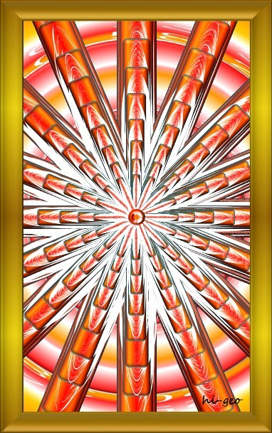

| あなたとわたしの縁結び 『ハクション！フィクションなのだ』：ミナモトに寄っていた友へ、ミナモトに寄っていく友へ贈る！ | |
| 秘フィクション | |
| KAIBI BOOKS (2019) | |
はじめに
私たちはなぜ今「ここ」にいるのでしょうか。私たちのいる「ここ」とはどのようなところなのでしょうか。このような疑問を抱いたことはなかったでしょうか。これは誰もが一度は抱く疑問であり、誰もが知りたいことなのかもしれません。そもそも私たちは何ものなのでしょうか。
私たちのいる「ここ」とは......
そのようなことは問われなくとも、世の中の現実を見渡せば一目瞭然といわれるかもしれません。
私たちのいる「ここ」とは......
私たちは「どこか」から「ここ」にやって来て、「ここ」から「どこか」へかえるといわれることがあります。私たちは「どこか」と「ここ」をグルグルとめぐっているということなのでしょうか。それはまるで、始まりも終わりもない永遠のめぐり旅をしているかのように......。
それでは、私たちは始まりも終わりもない永遠のめぐり旅をしていると仮定してみましょう。私たちは何のために永遠のめぐり旅をしているのでしょうか。そこには、何かの意図なり目的があるのではないでしょうか。ただし、私たちは偶然の積み重ねによる産物であるならば、そこには何の意味もなさないのでしょう。しかし、旅をしているのであれば、その意図なり目的があるのではないでしょうか。
私たちは偶然の産物ではなく、必然の産物であるとしたら......その意図なり目的を知りたいとは思いませんか。そこには大いなる「何か」が秘されているとは思いませんか。この大いなる「何か」は、秘されていながら「何か」の「かたち」としてあらわれているのかもしれません。
このような疑問から本書の創作は始まりました。
目の前に現れている現実は、バーチャルリアリティ（仮想現実）ではないのか、といわれることがあります。私たちは現実という仮想 で仮装 しているのでしょうか。私たちは仮の姿で今ここにいるのでしょうか。仮想現実を略して仮現 とすると、本現 があるようにも思えます。現実というものは、本現 の仮の現れである仮現 ということなのでしょうか。現実は仮現 なのか、そんな馬鹿 な......いい加減にしてほしい......。
たとえ現実が仮現 であったとしても、良い加減になっていてほしい。いや、現実は良い加減 の仮現 になっているのかもしれません。なぜなら、目の前に現れている現実は、とても適当で行き当たりばったりの現われには思えないからです。仮現 は本現 の仮の現れであるのなら、そこには緻密な意図が見え隠れしているように思われます。しかし、現実というものは実にリアルに感じられます。現実は仮現 であるとしても、とても仮の現れとは思えません。
リアルを「理ある」「裏ある」と解釈すると、現実は仮現 であっても、そこには「理 」があり、大いなる「裏」があるということなのかもしれません。たとえ現実は創作であったとしても......。
現実は創作であるのなら、それを創作するのも今ここにいる醍醐味なのかもしれません。現実を創作している者がいるとしたら、それは一体何者なのでしょうか。創作者......そう、作者です。
ハクション！フィクションなのだ......。本現 はハクションとくしゃみをした。そして、本現 の仮の現れである仮現 （現実）は現れるようになった。そう、それはフィクションなのだ。嘘 か実 か、それはフィクションなのか......。
ハクション！フィクションなのだ！？
以前、源頼朝 を同音異義語に置き換えたことがあります。
「みなもとのよりとも」...「源の寄り友（共）」
源に寄っていた友（共）、そして源に寄っていく友（共）ということです。
「みなもとのよりとも」...「皆本の寄り友（共）」
皆本に寄っていた友（共）、そして皆本に寄っていく友（共）ということです。
ここに大いなる「何か」の真意は秘められているのかもしれません。
本書は、「永遠の鏡」「女亀とヤマトの縁結び」に続く、「ハクション！フィクションなのだ」シリーズの第３弾となっております。偶然なのか必然なのか、一話完結の短編集ながら前作からの不思議なつながりを感じています。
この本は、（「各話タイトル」の巻）で始まる一話完結の短編集となっています。「各話タイトル」の言葉をヒントに、言葉の連想ゲームのように少々の「ダジャレ」や師匠と弟子の関係のような掛けあいも交えながら、各話は展開していきます。
各話の内容は、サブタイトル「ハクション！フィクションなのだ」のとおり、すべて創作となっています。創作ならではの自由さを感じて頂ける内容になっていると思っております。
各話については、目次を参照してください。
各話の構成は、とてもシンプルになっています。
弟子が師匠と何か語りたいことがあれば、呪文のような言葉を言って師匠を呼びます。
呪文のような言葉は、「ハクション フィクション なんだ！クション」であります。
そうすると「ヒラメキときめきジョジョジョジョ～ン」と師匠が登場します。
そこから「各話タイトル」について語り始めます。
そして、各話の最後に（「各話括り語」は世を救うかもしれないカモ！たぶんカモね。）の決まり文句でおわります。
はたして本書は大いなる「何か」を導くことができるのでしょうか。
尚、本書全体を通して、同音異義語、造語を多用しますこと、予めお断りしておきます。
それでは、『あなたとわたしの縁結び「ハクション！フィクションなのだ」』をお楽しみください。
「印念の世界」の巻
何かが飛び交っているような気がする。
見えないが何かが飛び交っているように感じる。
気のせいかもしれない。
しばらくすると......
何かが飛び交っているような気がする。
見えないが何かが飛び交っているように感じる。
気のせいかもしれない。
しばらくすると......
何かが飛び交っているような気がする。
見えないが何かが飛び交っているように感じる。
気のせいかもしれない。
しかし何かが気になる。
これは夢なのだろうか。
これは幻なのだろうか。
これは現実なのかもしれない。
しばらくすると......
このままでは神経が参ってしまいそうだ。
あの方を呼んでみようか。
「ハクション フィクション なんだ！クション」
飛び交う何かが気になる～ クション
「ヒラメキときめきジョジョジョジョ～ン」
トビ飼 っているので、飛 び交 っているのは仕方のないことなのである、呼ばれちゃったかな。
今日は「印 念 の世界」について語ろうか。
ほぉー
「印 念 の世界」ですか......何か術的であり、怪しくもあり、奥深い世界のようですね。ところで、見えない何かが飛び交っているように感じるのですが、何かの気のせいなのでしょうか。
見えない何かが飛び交っているようで気になるということであるな。その飛び交っている何かとは「情報」のことではないかな。
ほほぉー
飛び交っている見えない何かとは情報ということですか。確かに情報は電波として飛び交っていますので頷ける気がしますね。それでは、私は飛び交っている電波が気になっているということなのでしょうか。
まあ、電波は気になるかもしれないが、本当に気になっているのは情報そのものなのだよ。情報は英語でインフォメーション（ｉｎｆｏｒｍａｔｉｏｎ）とある。ということで、君は「インフォメーション」が気になっているということなのである。
へえぇー
私は「インフォメーション」が気になっているということなのですか。確かにそうなのかもしれませんが、インフォメーションは見えない電波として飛び交っていますので、これはただの電磁波によるアレルギー症状ということではないでしょうか。
君はアレルギー症状に悩まされているのか！？
「アレルギー」「あれるぎ」...「荒れる戯」「荒れる偽」「荒れる儀」
「荒れる戯」とは何かに反応して荒れるように戯れるということ。
「荒れる偽」とは何かに反応して荒れるように偽りを演じるということ。
「荒れる儀」とは何かに反応して荒れるように儀を演じるということ。
すまん、少々脱線してしまったようである。まあ、アレルギー症状はインフォメーションに反応していることと捉えれば、インフォメーション症状といえるのかもしれない。それは何かの気づきを促すサインであるということなのかもしれない。
ほほぉー
アレルギー症状とは、インフォメーションに反応していることと捉えれば、インフォメーション症状と解釈することもできるということですか。ということは、私はインフォメーション症状に悩まされているということなのでしょうか。
アレルギー症状は人のセンサの反応と捉えるとどうなるだろうか。アレルギー症状とは人のセンサの反応であり、それは空間に飛び交う電磁波であったり、飲食によることであったりする。これらをインフォメーションと解釈すると、人のセンサは常にインフォメーションに反応しているということになる。これらが身体の反応として顕著にあらわれることを、アレルギー症状というのかもしれない。つまり、アレルギー症状はインフォメーション症状に置き換えることができるということである。
さて、アレルギー症状の真意とは何であろうか。先にアレルギーを「荒れる戯・偽・儀」と解釈した。「荒れる」とは静かな、穏やかな、整った状態が乱れることとある。そして「荒れる」の反対語を「鎮まる」としてみる。それではアレルギー症状（それに準じること）がなければどうなるだろうか。それは「鎮まる」状態が続くということである。これは一見、理想状態のようにも思われる。しかし、これは理想状態とは名ばかりのほぼ変化のない状態ということである。そこで人は変化を求めるのである。事実この世とは変化の世なのである。人のセンサの反応とは、変化を起こすもとの役割をしているのではないだろうか。
ここで、アレルギー症状をインフォメーション症状に置き換えてみよう。
インフォーメーションは人のセンサに刺激を与え、その反応による変化を誘発する。インフォメーションによる人のセンサへの刺激には強弱があり、微弱な刺激には通常気づかないということなのかもしれない。しかしながら、その微弱な反応は蓄積されるとアレルギー症状としてあらわれるということなのかもしれない。インフォメーションとは、ある意味、人の原動力ということなのかもしれない。ということで、君の気になっている何かとは、インフォメーションということなのである。
ほほぉー
インフォメーションは人のセンサに刺激を与え、その反応により変化を促す、ある意味、人はインフォメーションによって行動しているともいえますね。それでは、ここでインフォメーションの解釈はおしまいということでしょうか。
いやいやおしまいではない。
それではインフォメーションの解釈を試みてみようか。
まず、「ｉｎｆｏｒｍａｔｉｏｎ（インフォメーション）」の語を分けてみる。
「ｉｎｆｏｒｍａｔｉｏｎ」...「ｉｎ」＋「ｆｏｒｍａｔｉｏｎ」
「インフォメーション」...「イン」＋「フォーメーション」
「フォーメーション（ｆｏｒｍａｔｉｏｎ）」の英語の意味は形成、組成、構成等とある。そして、スポーツでは攻撃または防御の際の選手の配置のことを指す。この「フォーメーション」の意味を踏まえた上で、「イン」を何と解釈しようか。
「イン」「いん」...「印」
「印」とは「しるし」であり他と区別するための「かた」とある。
「印」とは「かた」と解釈してみる。
まとめると、インフォメーションとは「かた」のフォーメーションであり、情報は「印 フォーメーション」としてあるということになる。
ほほぉー
インフォメーションの「イン」とは、「かた」であり「印」ということなのですか。そして、情報は印のフォーメーションである「印 フォーメーション」としてあるということなのですね。
情報、インフォメーション、ｉｎｆｏｒｍａｔｉｏｎ、「ｉｎ」＋「ｆｏｒｍａｔｉｏｎ」、イン・フォーメーション、印 フォーメーション......ということで、私は「印 フォーメーション」が気になっていたということになるのですね。
そうなのである。
情報とは印 フォーメーションとしてある。
文字は「かた」であり「印」であり、そして情報である。
図形は「かた」であり「印」であり、そして情報である。
幾何学模様は「かた」であり「印」であり、そして情報である。
宇宙は「かた」であり「印」であり、そして情報である。
銀河系は「かた」であり「印」であり、そして情報である。
太陽系は「かた」であり「印」であり、そして情報である。
地球は「かた」であり「印」であり、そして情報である。
水は「かた」であり「印」であり、そして情報である。
見えない極微な世界は「かた」であり「印」であり、そして情報である。
見える見えざるすべては「かた」であり「印」であり、そして情報である。
すべては情報の渦に包まれているということである。つまり、情報は印フォーメーションとしてあまねく行き渡っているということである。
ほほぉー
情報は印フォーメーションとしてあまねく行き渡っているということなのですね。
そうなのである。
たとえば、文字はその概念がなければ「かた」「印」ということになる。そして文字という認識がなければ、その「かた」「印」に意味を見いだそうとする。古代文字の解読などがこれに該当し、そこには解読する者によってさまざまな解釈が生まれる。Ａ、Ｂ、Ｃ、Ｄ......のように複数の解釈が生まれる。これも新たに生まれた「かた」「印」であり、これも一つひとつの印フォーメーションということである。
ほぉー
オリジナルの印フォーメーションがある。そして、そのオリジナルの印フォーメーションに解釈を与えることによって、新たな印フォーメーションが派生するように広がりをみせるということなのですね。
ここで気になるのは、情報である印フォーメーションを作り出しているのは「何もの」なのか、ということである。その「何もの」とは人ということではないだろうか。人は情報である印フォーメーションを作り出しているのだろうか。人は五感で認識できない抽象的なことをなかなか受け入れることができない。しかし、情報である印フォーメーションはあまねく行き渡っていて共有しているのかもしれない。
情報はある臨界点を超えると、因果関係はなくとも広がりをみせるのではないか、といわれることがある。これは情報である印フォーメーションは、ある臨界点を超えると認識されやすくなるからではないだろうか。
情報である印フォーメーションはあまねく行き渡っているのなら、空間にもあるということであるが、それはなかなか受け入れがたいことである。しかしである。空間も極微な世界を覗き込むと原子、素粒子......さらに極微なものへとつながっていくのである（人も然りである）。これも「かた」「印」であって、印フォーメーションということではないだろうか。ゆえに、情報である印フォーメーションはあまねく行き渡っていて、すべてはつながり情報共有しているといえるのではないだろうか。
ほほぉー
そうですね。人は五感で認識できないものや抽象的なことはなかなか受け入れられませんね。電子機器などのつながりによる情報共有は受け入れられるが、空間そのものが情報であって、すべてはつながり情報共有しているとなると受け入れづらくなりますよね。
そうなのである。なかなか受け入れがたいのである。しかし、すべては極微な世界を垣間見ると同様の世界を共有しているのである。
ここで話は変わるが、「イン」をなぜ「印」と解釈したのか、わかっておるかな。
ほぉー
「イン」をなぜ「印」として解釈したのか、ということですか。それは、情報は「かた」としてあまねく行き渡っているということで、「印」と解釈したということではないでしょうか。
まあ、そういうことではあるのだが......
それでは「印」を訓読みするとどうなるだろうか。
ほぉー
「印」は訓読みすると「しるし」になりますね。上から読んでも下から読んでも「しるし」......関係ないですね。
「しるし」......
「しるし」とは「知 る子 」と解釈すれば、より情報の意味として理解しやすいのではないだろうか。つまり、情報はあまねく行き渡っている「知る子」のフォーメーションとしてあるということである。
おおおぉー
「しるし」を「知る子」と解釈すると、情報はあまねく行き渡っている「知る子」のフォーメーションということですか。「知る子」はあまねく満ち満ちているとすれば、情報は印フォーメーションとしてあまねく行き渡っているということも受け入れやすくなりますね。
情報はなぜあるのか、それは何かを知るためにあるということなのである。ゆえに、「知る子」はあまねく満ち満ちているということなのかもしれない。情報は「知る子」の集まりである。そして「知る子」は「印」となりフォーメーションを組む。印フォーメーションはさまざまに形態を変化させる。印フォーメーションの形態を変化させているのは「何もの」なのだろうか。それは人が主 なのかもしれない。
ほぉー
情報は何かを知るためにあるということなのですね。そして知ることを必要としているのは、どうやら人のようなのですね。それではなぜ人は知ることを必要としているのでしょうか。
情報にはすべてが網羅されているのである。
その情報は印フォーメーションとしてある。
そこには理由 が付加されている。
そこには歴史が付加されている。
そこには物語が付加されている。
そこには真偽問わず、すべての情報が付加されている。
この情報である印フォーメーションと人は相互接続されているのである。これは印フォーメーションにより人は行動していて、人の行動は印フォーメーションの形態に変化を与えることを意味している。それは意識的なのか、無意識なのか......それは問わないのである。
人は印フォーメーションの形態を読み取り、印フォーメーションによって行動することにより、現実と思われている世界に反映させている。そして、その反映は印フォーメーションの形態に変化を与える。これは情報の読み取り書き換えの相互接続による、情報の相互作用システムともいえるのかもしれない。
ほほぉー
人は印フォーメーションと相互接続しているということなのですか。これが真実であれば、人のほんの些細な行動も、印フォーメーションに影響を与えるということになりますね。すべてに誰もが関わり合いがあって、すべてに誰もが関わり合いがないとはいえない、ということなのですね。それではなぜ人は情報である印フォーメーションと相互接続しているといえるのでしょうか。
それは人も人以外も極微な世界を垣間見ると、原子、素粒子......更に突き詰めていくと極微な点のようなものに行き着くのである。もはやここまで行き着くと、人も人以外も区別がつかなくなるということである。これを極微な点描画とでも呼ぶのだろうか。それは極微な世界の振る舞いに行き着くということなのである。これは何を意味するのだろうか。これは本来、すべては区別も差別もなく同化しているということを意味するのである。
人の行動は宇宙にも反映される。
人の行動は銀河系にも反映される。
人の行動は太陽系にも反映される。
人の行動は地球にも反映される。
人の行動は海にも反映される。
人の行動は山にも反映される。
人の行動は空間にも反映される。
......
人の行動はすべてに反映される。
そしてすべての反映は人にも反映されるのである。
人は常時、空間に触れている。この逆も真なりで、空間も常時、人に触れている。これは万物と空間の関係についても同様である。人と空間は触れているということは、ミクロである原子、素粒子......も空間に触れているということである。つまり、極微な世界を垣間見れば同様の世界を共有しているのであり、すべては触れ（振れ）合っているのであり、ゆえにすべては相互接続しているといえるのではないだろうか。
ほほぉー
人はすべてに反映され、すべては人にも反映されるということですか。それではすべては区別も差別もなく同化しているということであれば、現実と思われる世界は、なぜ区別も差別もあるように分離しているように見えるのでしょうか。
現実と思われる世界はなぜ区別も差別もあるように分離して見えるのか。それは区別も差別もなく融合している世界は、人がいるから区別も差別もあるように分離して見える、ということではないだろうか。これは情報である印フォーメーションには、現実と思われる世界を創り出す情報（仕組み）があるのではないか、ということである。つまり、人は印フォーメーションと相互作用することにより、現実と思われる世界を創り出しているということである。
ほぉー
現実と思われる世界を創り出しているのは、一人ひとりの人なのではないか、ということですか。そして、その情報は印フォーメーションにあるということなのですね。ある意味、現実と思われる世界は、一人ひとりのさじ加減で如何様にもなるということを意味するのですね。
ところで、歴史は繰り返すといわれることがありますが、これは印フォーメーションの一部の歴史情報を引き継いでいるということになるのでしょうか。
歴史は繰り返すとは、因縁は繰り返すということでもある。因縁の情報も印フォーメーションとしてある。因縁とは人が作り出したものであり、その情報は印 念 として印フォーメーションに刻まれている。因縁は大きければ大きいほど、世の中に影響力を持っているということなのである。それは、世の中は因縁によって動いているといっても過言ではないのかもしれない、ということなのである。

ほほぉー
世の中は因縁で動いているのではないか、ということなのですか。そして因縁の情報は、印念として印フォーメーションに刻まれているということなのですね。人の因縁で世の中は動いている。そうであるならば、世の中は人が動かしているともいえるのかもしれませんね。
世の中は人が動かしているということなのだろうか。世の中は人がいるから動いているように見えるということなのだろうか。世の中は人がいなければ動いているかどうかわからないのだろうか。世の中は人がいるから「ある」ということなのかもしれませんね。
なかなかよろしい。
世の中は人がいるからあり、そして世の中は人によって動いているのではないか、ということであるな。
因縁の印念である印フォーメーションがある。人は印フォーメーションの渦の中で動いている。その渦の中で、ある印フォーメーションにＳＹＮＣ（同期 ）し始める。印フォーメーションは、ただある状態からＳＹＮＣ（同期）し始めることによって、あわせて動機 が発動し始める。これは現実という世界に印フォーメーションがあらわれ始めるということである。
人は印フォーメーションとＳＹＮＣ（同期）し始めることにより、動悸 のような感覚が起こるのか否か定かではないが、リンクの取れた因縁の動機 は発動され始めるのである。
因縁の情報である印念を印フォーメーションに刻んだのは人である。これは何を意味するのであろうか。それは、因縁の情報である印念の印フォーメーションに振る舞いを与えられるのは人だ、ということである。さらに、因縁は因縁を生み出した世界でしか変化を与えることができない、ということを意味しているのかもしれない。
ほほぉー
因縁は生み出した世界でしか変化を与えることができない、ということなのですね。もし、人が因縁を生み出しているのであれば、本々因縁というものはどこにも存在しないのかもしれませんね。つまり人が生み出した因縁は、印念として印フォーメーションに刻まれることによって、情報としてただ存在しているだけということです。人の関与によって情報である印フォーメーションから因縁はあらわれるようになる。人は情報である印フォーメーションから逃れられないのだろうか......。そもそも情報の真意とは何なのでしょうか。
それでは「情報」という語の解釈を試みることにする。
「情」とは情 け。
情けとは、人味のある心、他人をいたわる心、人情......とある。
「報」とは報 い。
報いとは、ある行為の結果として身に受けるもの......とある。
「情報」とは「情けの報い」
情報とは、人味のある他人をいたわる心の行為を、結果として身に受けるもの（有形無形を問わない）と解釈してみる。
そうであるならば、情報である印フォーメーションには「善の因縁」が刻まれるはずである。しかしながら、世の中には「悪の因縁」もあらわれている。これはどういうことなのだろうか。これは情けの有る行為であっても、受け取る側の解釈によって、「善」にも「悪」にもなり得るということを意味しているのではないだろうか。人の解釈は十人十色であり、それは十分あり得ることである。人は「善の因縁」も「悪の因縁」も作っている。そして、その因縁は印念として情報である印フォーメーションに刻まれているということなのかもしれない。
人は何かの因縁を生むことは仕方のないことなのかもしれない。ただし、大きな因縁は大きく振る舞い、小さな因縁は小さく振る舞う、ということを肝に銘じておく必要があるのだろう。
人生は旅のようでもある。ことわざの「旅は道連れ世は情け」は、まさに情報である「情けの報い」のことをいわんとしているのかもしれない。
たかが情報、されど情報......。
ほぉー
人は大なり小なり何かの因縁を生み出している。その因縁は印念として情報である印フォーメーションに刻まれるということなのですね。
人は情報を作り出し、その情報により行動する、このサイクルを永遠に繰り返しているのかもしれませんね。もしかすると、人類の進化とは情報の進化を意味しているのかもしれませんね。どうやら、人は印フォーメーションによって行動しているということなのかもしれませんね。
情報には同音異義語の上方 の意も含まれているとすれば、情報により上の方を目指していくことによって、人類は進化するのかもしれない。それは情報を上方修正しながら情報修正することにより、因縁を鎮めていくことによって、人類は進化することを意味しているのかもしれない。因縁は人類の進化にどのように作用しているのだろうか......。
すべては印フォーメーションの振る舞いである。
印フォーメーションとは「音 フォーメーション」でもある。音 とは振動波であり、感知できるか否かにかかわらず、「音 フォーメーション」としてあるということである。
印フォーメーションとは「韻 フォーメーション」でもある。韻 とは韻 の響きであり、韻 は韻 を踏み隠れた陰 を見いだす、「韻 フォーメーション」としてあるということである。
人の因縁は印念となって印フォーメーションに刻まれる。それは常識であればあるほど強く刻まれるのである。
英語で常識は「コモンセンス（ｃｏｍｍｏｎ ｓｅｎｓｅ）」とある。
「コモン」...「共通の」
「センス」...「念」
「コモンセンス」を「共通の念」と解釈してみる。
常識とは最も強固な印フォーメーションなのである。
常識とは最も変形しづらい印フォーメーションなのである。
常識とは最も拡大しやすい印フォーメーションなのである。
常識とは最も長続きする印フォーメーションなのである。
なぜなら、常識の想念 である総念 は膨大な念 なのである。
さて、常識を揺るがす「何か」が姿をあらわすと、常識の想念はどのような振る舞いを起こすのだろうか。ここで常識の想念（共通の念）は、争 念 を総動員して「何か」を潰しにかかるのである。それはあの手この手奥の手、あらゆる手を駆使して「何か」を潰しにかかるということなのである。仮にその「何か」が９９％の信憑性があったとしても、残りの１％を理由に常識を１００％覆 すことはできないと、屁理屈を駆使してまでも常識を堅持しようとするのである。これが常識はなかなか覆ることが困難な最大の理由なのである。
常識の因縁の念は、印念として印フォーメーションに強固に刻印されるのである。ゆえに常識を拠り所にし過ぎると、共通の強固な念にコントロールされてしまうのである。まずは、常識を俯瞰するように客観視することが賢明である。決して常識の念と争ってはならない。常識がどのような形態にあろうとも「ただある」だけなのである。
常識といえば「固定 観念 」が思い浮かぶ。固定観念とは常識に紐づいている最たるものではないだろうか。それは常識に観念（もうこれまでだと、あきらめてしまった）したことによって、固定化されたということなのかもしれない。この固定観念は見直し、訂正することがなされなければ、生涯にわたり固定観念として定着し続ける。もし、この固定観念が人生において何かの制限になっていて、人生が上手く運ばれていかない原因になっているとしたらどうだろうか。このことが望む現実の妨げになっているとしたら......再考し見直す価値は十分にあるのではないだろうか。
常識とは人が作り出したものなのである。それが万人 に適用できるかどうかは別のことである。常識とはそういうものではないだろうか。ある状況により、常識を受け入れてしまったことは仕方がなかったのかもしれない。しかし、固定観念を解除することはいつでもできるのである。
ここで、「コモンセンス」に別の解釈を試みることにする。
「コモン」...「個門」
「センス」...「念」
「コモンセンス」を「個門 念 」、個別に門のある念と解釈してみる。そして、人には個門念を開閉コントロールする術が備わっているとしてみる。
常識は生きる術として必要である。しかし、常識に盲目になり鵜呑みにしてはならないのである。常識は自 様式 に置き換え、自らのものとして確立すればいいのである。常識は自らの様式に落とし込めばいいのである。常識にも多様性があって構わないのである。それは個別に常識があっても構わないということである。それは常識を受け流しスルーしてもいいということでもある。スル（ー）とは素 流 、素の流れであるからスルーしても構わないのである。これが常識を扱う術なのである。常識を真に受けて惑わされないことである。自らには自由意志があり、それに伴う自らに結ぶ自結 意志が備わっていることを忘れてはならないのである。これがすべての自衛手段であり、常識である個門念を扱う術ということである。
常識の共通の念も極微な世界を垣間見れば、他と区別も差別もつかなくなるのである。区別も差別もあるように見えるのは、人がいるからそのようになっているということを忘れてはならないのである。これは極微な世界になればなるほど自由度は増していき、影響力も強くなることを意味しているのかもしれない。なぜなら、宇宙は空っぽのような極微な世界でほぼ占められているからである。
人は猿から進化した（？！）という定説がある。猿は英語で「モンキー（ｍｏｎｋｅｙ）」とある。そこでモンキーを「門 キー」と解釈し、人には「門キー」が備わっているとしてみる。
自問自答 ならぬ自門 自 問 う、自らの門に自らで問うてみることである。そして、自らの門を「門キー」で開閉コントロールすればいいのである。そのカギを握っているのが、自由意志と自結 意志なのである。人になぜ自由意志が備わり許されているのか、これも一つのあらわれということなのかもしれない。
情報は印フォーメーションとしてある。それは見えようが見えまいがあまねく行き渡っているということである。そして、その情報である印フォーメーションを必要としているのは、人であるということである。情報である印フォーメーションはどこにいようが、どのような状況にあろうが、誰にでもアクセスできるということである。それは誰にでも世の中に影響を与えることができるということを意味しているのである。
因縁の印念である印フォーメーションは今、大きな振る舞いをみせようとしているのかもしれない。この振る舞いに大きく関与しているのは、どうやら人のようである。時代は臨界点を迎えようとしているのかもしれない。その様子は、あちらこちらでサインとして映し出されているということである。人は、大きな因縁の印念の印フォーメーションの振る舞いを鎮めることはできるのだろうか。そして、時代の臨界点をこえて新たに輝く時代の扉を開くことはできるのだろうか。すべては人の振る舞いに委ねられているのである。
ここで印 フォーメーションは静かに語りかけるのである。
人は情報の集合体である。
人は印フォーメーションの集合体ということである。
印フォーメーションは変幻自在のように形態を変化させる。
印フォーメーションは変容するということである。
印フォーメーションは変態するということである。
それは人も印フォーメーションのように変容するということである。
それは人も印フォーメーションのように変態するということである。
それは人も蛹から蝶になるように変容するということである。
それは人も蛹から蝶になるように変態するということである。
夜明け前が最も暗いといわれることがある。
人は今、最も暗い臨界点にいるということなのだろうか。
変容の波は押し寄せている。
変態の波は押し寄せている。
それは変容の波は並々ならぬ勢いで押し寄せているということである。
それは変態の波は並々ならぬ勢いで押し寄せているということである。
トランスフォーメーション（Ｔｒａｎ ｓ‐ ｆｏｒｍａｔｉｏｎ）
トランスフォーメーションとは変容である。
トランスフォーメーションとは変態である。
まもなく印フォーメーションはトランスフォーメーションするのであろうか。
それは人もトランスフォーメーションするということなのだろうか。
印フォーメーションをトランスフォーメーションする。
それはトランスフォーマーである。
まもなく人はトランスフォーマー（変人）になるのかもしれない......
「印 フォーメーション」は世を救うかもしれないカモ！たぶんカモね。
おわり
「オリジン」の巻
ロシアの民芸品にマトリョーシカ人形というものがある。
一見すると一体の人形のように見える。
その一体の人形を外すと一回り小さな人形が現れる。
一見すると一体の人形のように見える。
その一体の人形を外すと一回り小さな人形が現れる。
一見すると一体の人形のように見える。
その一体の人形を外すと一回り小さな人形が現れる。
......
これを繰り返すと５、６体の人形が現れることになる。
宇宙もマトリョーシカ人形のようになっているのだろうか。
宇宙はマトリョーシカ人形ならぬミクロマクロ人形！？
一見すると一体の人形のように見える。
その一体の人形を外すと一回り小さなミクロマクロ人形が現れる。
一見すると一体の人形のように見える。
その一体の人形を外すと一回り小さなミクロマクロ人形が現れる。
一見すると一体の人形のように見える。
その一体の人形を外すと一回り小さなミクロマクロ人形が現れる。
......
これを繰り返すと、いつかミクロマクロ人形の原型は現れてくるのだろうか。そこには源である皆の本があるのかもしれない。
さあ、続けよう。
一見すると一体の人形のように見える。
その一体の人形を外すと一回り小さなミクロマクロ人形が現れる。
一見すると一体の人形のように見える。
その一体の人形を外すと一回り小さなミクロマクロ人形が現れる。
一見すると一体の人形のように見える。
その一体の人形を外すと一回り小さなミクロマクロ人形が現れる。
ミクロマクロ人形は永遠に......
あの方を呼んでみようか。
「ハクション フィクション なんだ！クション」
人形の原型が見つからない～ クション
「ヒラメキときめきジョジョジョジョ～ン」
操り人形がいると思ったら、なんと君ではないか、呼ばれちゃったかな。
今日は「オリジン」について語ろうか。
ほぉー
「オリジン」ですか。
「オリジン」とは起源、それは物事の起こりの源ということですが、今回は起源を探ろうということなのでしょうか。
そうなのである。
起源 を探りながら機嫌 を取り戻そう、ということなのである。それは語 起源になるのか、後 起源になるのか、互 起源になるのか、誤 起源になるのか......とにかくご機嫌になろう、ということなのである。
はぁ～
ご機嫌になればいいのですが、不機嫌になり迷宮の館に入り、名球会ならぬ迷宮 界 に迷い込むのではないかと心配です。
まあ、心配ご無用なのである。
それでは「オリジン」を何と解釈しようか。
「オリジン」「おりじん」...「織人」「檻人」
「織人 」とは、糸を縦横に組み合わせて生地を織るような人と解釈してみる。
織人とは何かの起源となる人のことなのだろうか。それは糸を紡ぐように「何か」をつないでいく役割があるのかもしれない。時代は必ずサイクルがあるように転換点を迎える。織人とはそんな時代の転換点に、次代に糸を紡ぐようにつなげる役割を担う人のことではないだろうか。そうであるならば、織人はあえてご機嫌となり、それは後 の起源となる、後 起源 につながるように振る舞うということなのかもしれない。織人とは混沌とした時代の転換点において、あえてご機嫌となり後 起源 となる振る舞いをする人なのだろうか。
「檻人 」とは、枠の中の人、囲いの中の人と解釈してみる。
人は何かの枠の中で生きているようである。人はその枠の中でワクワクしながら生きられているのだろうか。
「枠」「わく」...「和来」「和苦」
人は枠の中で和 来 という意識で生きる。やがて和 来 は輪来 、環来 となり循環していく。人は枠の中で和来 の意識で生きれば、枠は窮屈な枠ではなく、ワクワクする枠に変化していくということなのかもしれない。片や和が苦になると、だんだんと枠は和 苦 になっていく。和が苦になると輪 も環 も苦になっていき、人は枠の中で和苦 、輪 苦 、環苦 の悪循環に陥ってしまう。これでは、人は枠の中でワクワクしながら生きるには困難となってしまう。
人は何かの囲いの中で生きているようである。
「囲い」「かこい」...「過去意」
人は囲いの中にありながら今を生きている。人はときに過去 意 にとらわれてしまう。過去 意 とはある感情がきっかけとなり、思考が環状のようにめぐり、いつの間にか過去に意識が囲われてしまうということなのかもしれない。 意識が過去に囲われる......。人は今まっただ中を生きることが、意識を過去に囲われない術なのかもしれない。
ある意味、人は枠や囲いの中で生きている檻人といえるのかもしれない。そこを「檻人」であるように見せかけて「織人」を生きる、これこそが何かの起源となる「オリジン」の真骨頂なのかもしれない。
ほほぉー
オリジンとは「織人 」「檻人 」ということですか。
織人とは糸を織りなすように時代を紡いでいくような人ということなのですね。そして、檻人とは枠や囲いの中で生きている人で、それは枠や囲いの中でとらわれながら生きるのか、それとも檻人と見せかけて織人として生きるのか、いずれのオリジンとして生きるのか、それが重要であるということなのですね。
ところで、いずれのオリジンとして生きるとしても、所詮人は枠や囲いの中で生きることになるのではないでしょうか。この枠や囲いについてどのように解釈すれば、檻人ではなく織人としてのオリジンを生きることができるのでしょうか。
人は枠や囲いの中で生きているように見える。
それでは枠や囲いは決して窮屈なものではなく、むしろそれをよしとしていきいきと生きるには、どのような気持ちの在り方でいればいいのだろうか。そのためには枠や囲いをどう解釈して、どのように捉えるかが重要になってくるのではないだろうか。
ほぉー
人は枠や囲いの中にいながら、その枠や囲いをどう解釈してどのように捉えることができるのか、それが重要であるということなのですね。
人は枠や囲いの中にいるのであれば、それをある「型 」の中にいると捉えてもいいのではないだろうか。さて、「型」とは何であろうか。人は枠や囲いの「型」の中にいる......それは「雛型 」ということではないだろうか。
枠を破る、殻を破るという言葉がある。この枠や殻を雛型と捉えれば、人は雛型として広がり始めるということではないだろうか。すべては雛型が大きなものとしてあらわれ、小さなものは雛型としてあらわれている。枠や囲いは雛型と捉えれば、大小問わずとても重要な形態ではないだろうか。
宇宙はフラクタル構造（最大から最小まで同様なパターン（かたち）を繰り返す構造）であるといわれることがある。そして、宇宙はフラクタル構造であることと雛型を照らし合わせれば、枠や囲いは決して窮屈なものではなく、人は雛型として楽しめるのではないだろうか。それはひとりであろうが、十、百、千、万......であろうが、条件は何もないのである。
雛型は小さくてもある臨界点をこえれば大きく広がりをみせてくるということである。これが枠を破る、殻を破るということではないだろうか。それは十倍、百倍、千倍、万倍......になって広がっていく、これが宇宙はフラクタル構造になっているという仕組みの真骨頂といえるのかもしれない。すべては呼応するように奏でるように響き渡るように......宇宙のフラクタル構造とはそんな役割を担っているのかもしれない。
このような宇宙はフラクタル構造の中で、人はワクワクする気持ちで物事に取り組めば、枠は枠ではなくなり、囲いは囲いではなくなり、すべてはつながり結ばれ糸を織りなし紡ぐように、すべてはフラクタル・ダンスを踊るように、ワクワクは輪となる和 来 輪 来 となり、ワクワクは円環状に環となる和 来 環 来 となり、雛型であるオリジナルはあまねく響き渡るのである。
ここで、オリジナルを「織 事 成 る」と解釈してみる。
「織 事 成 る」とは、雛型であるオリジナルは、糸を織りなし紡ぐように事の起こりに成るということである。
それでは、人はワクワクする逆の気持ちで物事に取り組むようになるとどうなるだろうか。それは輪が苦しくなる和 苦 輪 苦 となるのかもしれない。それは円環状の環が苦しくなる和 苦 環 苦 となるのかもしれない。「好きこそ物の上手なれ」ということわざがある。これは好きなことをしているときはワクワクしているので、好きなことは雛型として広がりやすいということなのかもしれない。
ほほぉー
「好きこそ物の上手なれ」とは、雛型として広がりをみせる一つの方法といえるのかもしれませんね。
花形 満 ならぬ雛型 満 、そう雛型はみつる。花形のように華やかではなくとも、雛型も花形のように満ちてゆくのである。
雛型はフラクタル構造のように満ちてゆく性質があるのかもしれない。そこに大小は問わないということである。今の世の中を見てみると、大きいものが小さいものに影響を与え、小さいものは大きいものに影響を与えづらいようになっている。それはただそのように見えているだけなのかもしれない。
雛型はフラクタル構造のように広がっていくことがイメージできるのであれば、大小の枠や囲いはだんだんと外れていくのではないだろうか。
宇宙がフラクタル構造であるならば、人もフラクタル構造ということではないだろうか。人はフラクタル構造であるということである。そして、人は自己 相似 象 であるということである。
自己相似象、それは自己掃除しよう......。「自己掃除しよう」とは、自らは自らで掃除できるということである。自らは自らの意識しだいで自らを掃除（浄化とも）できるということである。なぜなら、自らは相似しているのであり、どんなに意識は小さくても、意識は伝わっていき相似してくるからなのである。自らの大小は似たもの同士であり、必然的に似てくる性質になっているということである。
ほほぉー
宇宙はフラクタル構造であれば、人もフラクタル構造であるということなのですか。そして、自らは自らの意識しだいで自らを掃除（浄化とも）できるということは、人の意識は縦横無尽のように振る舞えるのかもしれませんね。
宇宙はフラクタル構造であるならば、人も原子、細胞、組織......であるフラクタル構造であるということになる。自らはフラクタル構造なのである。それはすべてに自らは波及して、反映させていくことができるということである。
人の意識もフラクタル構造であるならば、人は自らを意識で掃除する、クリアにすることができるということである。それは自由意志を操るということなのかもしれない。人は自己相似象であり、自己で掃除（浄化とも）することができるのであれば、そのために人には自由意志が備わり許されているのかもしれない。
意識が縦横無尽であるということを聞けば怪しく感じるのかもしれない。意識は意識せずとも働いているのであり、これは終わらない問答のようなことなのかもしれない。これは最も信頼のできる術であり、相反して最も信じがたい究極の「灯台もと暗し」ということなのかもしれない。
オリジンとは自らが雛型となり、フラクタル構造の宇宙の中で糸を紡ぐように織りなしていく人なのかもしれない。雛型、テンプレート、天にはプレートのような何かが覆っているのかもしれない。そして、遥か彼方にある天体は雛型のあらわれのテンプレートとして、天プレートに映し出されているのかもしれない。雛型、テンプレート、天プレート、点プレート、すべては映し鏡のように......相似象、フラクタル構造のあらわれ、そしてすべては川の流れのように流れている......。
「自己掃除しよう」は雛型として広がりをみせるのであれば、自らを掃除することにより、混沌としている世の中を掃除していくことができるということである。これが今ここにいて、なぜ今ここにいるのか、その一つの答えなのかもしれない。人は今ここにいるだけで、今ここにあるだけで、宇宙を超越するほどの価値があるということである。それは一人ひとりの振る舞いが、世の中に影響を与えることができるということを、暗に言い当てているのかもしれない。
「世直し」という語がある。世直しという語からは、大きな何かが、大きな存在が、世の中を直していくのだろうと想像してしまう。はたしてそうなのだろうか。宇宙はフラクタル構造であり、人もフラクタル構造であるならば、人は大小兼ね備えた雛型として、世の中を直していける資質（プログラムされている！？）が備わっているということになる。ゆえに、そこに条件は何もないのである。
これも究極の「灯台もと暗し」のあらわれである。隠していても何も始まらないのである。あらわれることにより何かが洗 われるのである。雛型は意識的にあらわれることにより何かが洗われるのである。相似象、「掃除しよう」とはこういうことである。ゆえに、一人ひとりの振る舞いが世の中を変える原動力になるということである。
ところで、バブル崩壊という現象があるが、それには前兆があるとは思わないかね。
ほぉー
バブル崩壊ですか......。
ある事象が泡のように膨大に膨れ上がり、やがて泡は弾けてなくなる現象のことですね。バブル崩壊の前兆はあるのだと思いますが、なかなか気づくことは難しいのではないでしょうか。
バブルとは「場」が「ブルブル」と振るえる、と解釈するとどうなるだろうか。バブルは場が振動する現象と解釈すると、バブル崩壊の前兆とは場の振動がある臨界点を迎えることなのではないだろうか。それは泡が飽和し、シュワシュワと弾けていき、やがて泡はなくなり幻と化していくということである。
ほほぉー
そうですね。
人は場が振動する大小長短の波を感じているのかもしれませんが、現状を維持することに精一杯となってしまい、何かに気づいたとしても軌道修正できずに飽和に向かっていく。そして、バブル崩壊まで何とかなるという淡い期待を持ちながら過ごす。しかし、その淡 い期待は泡 意 となって、シュワシュワと弾けてしまうということなのかもしれませんね。
そうだな。
バブル崩壊 前に怪 （怪しさ）に気づき解 を見つけだし解放 する。このように崩壊前に解 を放つことにより、軌道修正することが賢明なのかもしれない。それには自らを自らの振動に合わせることが必要であり、それは自 振 を取り戻すことであり、それは自身に伝わることであり、それは自信を取り戻すことで軌道修正できるということなのかもしれない。
ほほぉー
自らを自らの振動に合わせることにより、周囲の振動の変調に気づくことができるということなのですね。それには自 振 、自信、自進、自芯、自深、自審、自真......さまざまな「自しん」がカギを握っているということになるのですね。そして、バブル崩壊にも左右されない人というのは、さまざまな「自しん」を自身に馴染ませているのかもしれませんね。
そうなのである。
さまざまな「自しん」は自らの羅針盤ともいえるのである。
「羅針盤」「コンパス」「こんパス」...「今パス」
「羅針盤」とは、「今ここにいるパス」ということではないだろうか。そのカギを握っているのが、さまざまな「自しん」ということなのかもしれない。
今の世は、マネ（ー）の世といっても過言ではないのかもしれない。
マネ（ー）からの卒業......。
マネ（ー）は至る所で猛威を振るっているかのように振る舞っている。マネ（ー）はバブルのようにいつかは弾けるのではないだろうか。なぜなら、マネ（ー）は所詮モノマネなのである。何かのモノマネはホンモノではなくニセモノなのである。ニセモノはいつか化けの皮が剥がれる。
モノとマネ（ー）はあふれているかのように振る舞っている。しかしモノとマネ（ー）は行き渡っていない。モノとマネ（ー）は矛盾だらけである。
本来のモノマネ（ー）であるマネ（ー）は、一つのマネ（ー）である「ｍｏｎｏ-ｍｏｎｅｙ（モノマネ（ー））」ということではないだろうか。何かのモノマネであるマネ（ー）・システムは、「ｍｏｎｏ-ｍｏｎｅｙ ｓｙｓｔｅｍ」にまとまることによって矛盾を解消していくのかもしれない。
ほほぉー
マネ（ー）からの卒業ですか。
それではマネ（ー）から外れて自給自足の生活をしようということなのでしょうか。
そうではないのである。マネ（ー）の起源、根源を知ることが必要なのである。そして、マネ（ー）を俯瞰するかのように見るのである。マネ（ー）も川の流れのように流れているとすれば、来ると去る流れになるのである。それを俯瞰するかのように見るということは、今ここにいて流れを眺めるということなのである。今ここにいてマネ（ー）の流れを見るとはどういうことなのか。
それは自らに視点を合わせるということである。
それは自らが支点になるということである。
それは自らが始点になり得る術ということである。
それは自らに中心があるということを知ることである。
それは自らを支持するということである。
それは自らを指示するということである。
それは自らを師事するということである。
......
ほほぉー
矛盾だらけのマネ（ー）から離れるのではなく、マネ（ー）を俯瞰するように見ながら、その起源、根源を知ろうということなのですね。それには自らに視点を合わせることが大事だということなのですね。
何かの起源、根源を知ること、探ろうとすることは、自らの起源、根源を知ることにもつながるということである。それは、人はオリジンであるということを知ること......。
マネ（ー）を真似 と解釈できるのであれば、マネ（ー）の起源、根源は真似 と解釈できるところにあるのかもしれない。今のマネー社会はモノマネ（ー）の産物なのだろうか......。
ほぉー
マネ（ー）の起源、根源は、真似 と解釈できるところにあるということですか......。
もしかすると、人は起源、根源に向かって生きているのではないだろうか。なぜなら、科学は宇宙の起源を知ることに躍起になっていると思われるからである。実際に宇宙誕生の秘密に迫り続けている。
人は起源に向かって生きているのだろうか。それは源（みなもと）に向かって生きているということである。人は起源に向かって生きているのであれば、自らの起源を知るために生きているということになる。すべての起源にすべてがあったのであれば、人はそのすべての中で生かされているということになる。
人はご機嫌になればなるほど振動数が上がり、起源に向かっていくことができるのかもしれない。それはミクロになればなるほど、振動数が高くなることと関係があるのではないだろうか。起源とは大きなもの、マクロなことと考えがちであるが、ミクロな世界ほど振動数が高いということは、影響力が強いということであり、実はミクロな世界に向かうほど起源に迫っていけるということなのかもしれない。
人は小宇宙と表現されることがある。宇宙は「大宇宙（マクロ）」で人は「小宇宙（ミクロ）」ということである。
人は自らを探求することによって起源に向かっていけるのかもしれない。人は「自問自答 」することで起源に向かっていけるのだろうか。それは起源を探っていく過程にはたくさんの門が設けられていて、そこで「自門 自 問 う」することによって一つひとつの門を開けていけば、起源に向かっていけるということなのかもしれない。
ほほぉー
人は自らのミクロを探求することで起源に向かっていけるのではないか、ということですか。それから、起源 を探りながらご機嫌 になろうといわれたことは冗談ではなかったのですね。
人はご機嫌になれば振動数が上がる。
人は振動数が上がればワクワクしてくる。
人はワクワクすればさらに振動数が上がる。
さらに振動数を上げるには......
それは「どうかしている」状態になればいいのではないだろうか！？
ええぇー
さらに振動数を上げるには、「どうかしている」状態になればいいとはどういうことなのでしょうか。「どうかしている」状態とは、普通ではない変な（おかしな）状態になっているということですが、これで振動数が上がるとは一体どういうことなのでしょうか。
それでは、「どうかしている」状態を「可笑 しい」状態と捉えるとどうなるだろうか。「可笑しい」とは「笑い」のことである。人は笑うことにより振動数は上がり、免疫力も上がるのである。「笑 い」とは「和来 」と解釈すれば、和 が来 ることでまわりを和 ますことができるのである。
「どうかしている」状態の真意とは、まわりを和ませるくらいに可笑しくなろうということなのである。それで人の振動数は上がるのであればそれでいいということである。
そもそも自らのミクロを探求することで起源に向かおうとすること自体、「どうかしている」状態ということなのである。しかし、「どうかしている」状態は振動数を上げる方法と捉えると、和が来ることで和気藹々 （和気 会 い合 い）となって一体感が生まれることにより、「どうかしている」は「同化 している」状態に向かっていくと捉えることができるのではないだろうか。つまり同化 することによって、ミクロの世界とともに相関するマクロの世界にも馴染むことができるということである。
これを「どうかしている」ならぬ「同化 している」というのである。
これが大和の大いなる和の真意ということである。それは大いなる和は和音を奏でるように、和音 は和 ＯＮ となって輪 となり、環 となり、あまねく響き渡るということである。
ほほぉー
「どうかしている」状態の真意とは、「同化 している」状態になるということですか。そして、ミクロの世界に同化するということは、必然的に相関するマクロの世界に同化することを意味するのですね。
「同化している」状態になるとは姿形で同化するのではなく、意識で同化するということなのである。
「同化している」状態になるとは姿形で同化するのではなく、意識で同化するということですか。 意識で同化する......。これはことわざの「言 うは易 く行 うは難 し」の如く、 常人には非現実的といわざるを得ないのではないでしょうか。
確かに意識で同化するということは、非現実的であることは否めないのかもしれない。しかし、意識は底知れぬパワーを秘めていることも否めないのかもしれない。それでは意識で同化するということを考察してみることにする。
現実というものは区別も差別もあるように、人、物......と空間は分離しているように見えている。しかし、現実というものは区別があるように見えるが、ミクロのレベルの現実になると、通常分離しているように見えるものは区別がつかなくなる。これを人間関係という観点の「意識 の目 」で捉えるとどうなるだろうか。
人は親密な間柄、好感、親近感を抱く人であれば、通常分離している意識は弱く感じる。この意識を、現実というものはミクロのレベルに近づくほど、区別がつかないように見える意識と捉えてみる。そしてこの「意識の目」を「ミクロの目」と定義する。
人は他人に好感や親近感を抱かなければ、通常分離している意識を感じる。この意識を、現実というものは人、物......と空間は分離しているように見えている意識と捉えてみる。そしてこの「意識の目」を「マクロの目」と定義する。
まとめると、人はミクロとマクロを「ミクロの目」、「マクロの目」に置き換えることで、意識によって「同化している」状態になることは可能ではないだろうか。人の意識は意識的、無意識にかかわらず、常に「ミクロの目」から「マクロの目」の間で変動しているのであり、それを意識的に行うことは可能ではないだろうか。つまり、人は意識によって「同化している」状態に近づくことは可能であると判断できるのではないだろうか。
人は意識で「同化している」状態になることによって、ミクロを垣間見ることができるということである。人は意識で「同化している」状態に近づくことによって、ご機嫌になりワクワクしてくるのである。これを「意識で枠を外す」と表現できるのではないだろうか。
ほほぉー
人の意識は意識的、無意識にかかわらず、「意識の目」の「マクロの目」から「ミクロの目」の間で常に変動している。よって、人は意識でミクロにもマクロにも「同化している」状態になることはできるということなのですね。そして、人は意識によって「同化している」状態に近づけば近づくほど、ご機嫌になり振動数も上がりワクワクしてくるということなのですね。
意識で「同化している」状態になるということは、意識は精妙になっていくということである。このことは起源を垣間見る確率が高くなることを意味しているのかもしれない。
改めて「オリジン」とはどのような存在なのだろうか。
それは糸を紡ぐように意図を紡ぎ、「何か」の起源となる意図を導くことなのかもしれない。それは糸を織りなすように意図を織りなし、「何か」の起源となる意図を広げていくことなのかもしれない。それは「意識の目」によってなされるのかもしれない。「オリジン」とは、糸を紡ぐように意識を紡ぎ、糸を織りなすように意識を織りなすことで、「何か」の起源となる人ということなのかもしれない。
雛型はカタカタと音を立て始める。
雛型は目覚め始めたようである。
雛型は掃除を始める。
雛型は清々しい気分になっている。
雛型はあちこちにある雛型に気づき始める。
雛型はあまねく雛型が満ちていることに気づき始める。
雛型はどのような雛型になるのだろうか。
雛型はどのような雛型として広がりをみせるのだろうか。
誰もが起源なのである。
誰もがオリジンなのである。
あなたはオリジンなのである。
あなたは「世を忍ぶ仮の姿」で今ここにいる。
あなたは本当の姿を隠している！？
あなたの本当の姿とは......
あなたの本当の姿 は素型 なのである。
本当のあなたは素 の似 姿 なのである。
本当のあなたは素 の身 姿 なのである。
あなたは素 の振る舞う素型 なのである。
あなたはわたしに見える。
わたしはあなたに見える。
あなたの瞳にわたしは映っている。
わたしの瞳にあなたは映っている。
瞳 は人見 だから......
あなたは素型 を見ている。
わたしは素型を見ている。
みんな素型なのである。
みんな鏡どうしなのである。
あなたはわたしの映し鏡なのである。
わたしはあなたの映し鏡なのである。
ことわざ「人の振り見て我が振り直せ」の真意とは......
あなたとわたしは同じ素型 であるということ。
あなたの瞳に映っているわたしは「わたしでありあなた」なのである。
わたしの瞳に映っているあなたは「あなたでありわたし」なのである。
あなたもわたしも素の「かたち」なのである。
あなたもわたしも素の振る舞う「かたち」なのである。
あなたもわたしも「素 のまま」で上手くいくようになっている。
あなたもわたしも「素 のまま」で上手くいくようになっている。
あなたもわたしも素型 であるのだから......
あなたは素 から素 立 っていった。
わたしは素から素 立 っていった。
あなたは素から素 立 っていった。
わたしは素から素 立 っていった。
だからあなたは今ここにいるのである。
だからわたしは今ここにいるのである。
素型 は素 立 っていった。
素型は素 立 っていった。
あなたはオリジンなのである！
あなたはオリジンなのである！
あなたはオリジンなのである！
オリジンは永遠の彼方へ向かう
共 に素 に還 りゆく素 の日 まで......

「オリジン」は世を救うかもしれないカモ！たぶんカモね。
おわり
「サイボーグ無限」の巻
何かが生命体のようにうごめいている感じがする。
何かが生命体のように増殖しているようにも感じる。
それは街を歩けば感じる。
それは観光地を歩けば感じる。
それはバスに乗れば感じる。
それは電車に乗れば感じる。
それはあらゆるところで感じる。
......
何かが生命体のようにうごめいている感じがする。
何かが生命体のように増殖しているようにも感じる。
それは地球をおおいつくす勢いで......
これは地球の危機なのだろうか。
それとも地球は新たなステージを迎えようとしているのだろうか。
あの方を呼んでみようか。
「ハクション フィクション なんだ！クション」
謎の生命体が気になる～ クション
「ヒラメキときめきジョジョジョジョ～ン」
サイボーグに呼ばれたかと思ったら、なんだ君だったのか。
今日は「サイボーグ無限」について語ろうか。
ほほぉー
「サイボーグ無限」とは一体何のことでしょうか。
サイボーグが無限に存在するということなのでしょうか。それともサイボーグは無限の存在ということなのでしょうか。そもそもサイボーグは漫画、アニメ、映画の中の話ではないでしょうか。いわゆるバーチャル世界の話ということです。
「サイボーグ無限」とは、サイボーグが無限のように存在しているということなのである。
えええぇー
サイボーグが無限のように存在している！？
サイボーグはどのような形態で無限のように存在しているのでしょうか。そのような存在はフィクションの世界でしか見たことがありません。本当にそのようなものが存在しているのでしょうか。
サイボーグが無限のように存在しているとは、いわゆるヒューマノイド型のサイボーグがあちこちに存在しているということではないのだよ。
へえぇー
そうなのですか。それではどういう形態なのかはわかりませんが、サイボーグはどのようにして存在しているのでしょうか。
それでは「サイボーグ」という語から何か思いつくことはないだろうか。
ええぇーと～
「サイボーグ」ですか......。
「サイボーグ」「サイボウグ」...「サイボウ」＋「グ」
「サイボウ」＋「グ」...「細胞」＋「具」
「サイボーグ」は「細胞 具 」となりましたが、でも「細胞 具 」とはどう解釈すればいいのかわかりません。
なかなかよろしい。「サイボーグ」が「細胞 具 」であるな。「細胞 具 」とは細胞が具現化したものということなのである。
ほほぉー
「細胞 具 」とは細胞が具現化したものということなのですか。それでは細胞の具現化した細胞 具 がサイボーグということなのでしょうか。
サイボーグ（ｃｙｂｏｒｇ）とは、生命体と自動制御系の技術を融合させたものを指す、ということである。サイボーグの生命体に該当するのは人である。次にサイボーグの自動制御系の技術に該当するものであるが、人の操作を伴う技術のものである。それは生命体に組み込まれる人工物ではない。それはコミュニケーション・ツールとして使用するものである。それは携帯するものである。
ほぉー
サイボーグの自動制御系の技術に該当するものとは携帯電話ということでしょうか。
そうなのである。サイボーグの自動制御系の技術に該当するものとは携帯電話である。そして、携帯電話は英語で「ｃｅｌｌｕｌａｒ ｐｈｏｎｅ（細胞の電話！？）」とある。それから「ｃｅｌｌ ｐｈｏｎｅ」とか「ｃｅｌｌ」、携帯電話はセルフォンとかセルと呼ばれているのである。
「ｃｅｌｌ」「セル」...「細胞」
へえぇー
携帯電話は英語でセルフォンとかセルと呼ばれているのですか。そしてセルは細胞のことですよね。サイボーグから連想する語として先に「細胞 具 」を取り上げました。携帯電話は半導体セルが組み込まれている電子機器ですので、まさに携帯電話は細胞 具 そのものといえるのではないでしょうか。これから携帯電話は「サイボ」「ｃｙｂｏ」とでも呼ばれるようになるのですかね！？
偶然なのか、必然なのか、はたまたそれは何なのか、「サイボーグ」は「細胞 具 」から「携帯電話」へとつながってしまったのである。そして、携帯電話を操っているのは人である生命体なのである。つまり人と携帯電話を合わせたもの、それは「サイボーグ」といえるのではないか、ということなのである。
おおおぉー
人は細胞が具現化した人工物である携帯電話とともに、「サイボーグ化」しているということになるのですね。人は知らず知らずのうちにサイボーグ化しているということですか。サイボーグはＳＦの世界の話だと思っていましたが、いつの間にか現実化してしまった（！？）、ということになりますね。
携帯電話は人の身体に組み込まれているわけではないが、人がほぼ常に携帯していると解釈すれば、それはサイボーグ化していると表現しても過言ではないのである。人は細胞の集合体でもある。ある意味、人も細胞が具現化した「細胞 具 」という生命体といえるのかもしれない。
ほほぉー
人は生命体である細胞 具 、携帯電話は人工物である細胞 具 、このことを細胞 具 が無限のように存在している、つまりサイボーグが無限のように存在しているといわれていたのですね。
携帯電話は今やほぼ誰もが携帯するツールとなっている。携帯電話は無線電波により送受信される。そして、この無線電波の送受信を中継する無線基地局があちらこちらに点在している。それから無線基地局がカバーするエリアは「セル」と呼ばれているようである。携帯電話の「セル」、基地局がカバーするエリアの「セル」......。
ほぉー
地球規模に至る所でセル化現象が巻き起こっているということになるのですね。地球は生命体であると表現されることもありますが、これは人に留まらず地球規模でサイボーグ化は進んでいるともいえるのですね。
地球規模でサイボーグ化は進んでいる！？
これは人も地球も生きとし生けるものすべては、分離から融合の世界観へ歩みを進めているということではないだろうか。それは極微の世界を覗き込めば区別も差別もなく融合している、ということを暗に言わんとするあらわれなのかもしれない。そして、それは宇宙を包括する勢いで進行しているということなのかもしれない。
ほほぉー
ところで、人は猿から進化（？！）したといわれることもありますが、サイボーグ化しているという現象と似たような道のりを辿りながら、人も猿から進化（？！）したということなのかもしれませんね。
人は猿から進化したという定説であるが、そのようになる確率は天文学的に小さいようである。それは宇宙誕生から１３８億年といわれている期間では到底及ばないということである。まあ、それでも何か導けるのではないかということで、韻を踏むという観点から、人が猿から進化した過程について簡単に表現してみることにする。
猿から人への進化とは、猿（えん）がもとになり猿人 となり、そして猿人 がエンジン（ｅｎｇｉｎｅ）となり、そして猿人 が円陣 を組み円 人 となり、その円 人 の縁 がつながり縁 人 となり、人に進化していったのではないのか、ということである。
猿がもとになり猿人 となった......その橋渡しとなった出来事とは何であろうか。猿がもとになり猿人 となった......その橋渡しとなった出来事とは、「何か」によってゲートを開く鍵 （門 キー）を導くことができたから、ということなのかもしれない。
へえぇー
韻を踏む観点での猿から人への進化とは、すべては「えん」のつながりにより成された、ということになるのですね。
猿から人へどのようにして進化したのか、さまざまな説がある。天変地異や生存競争の過程で猿から人へ変容を遂げたのではないか。長大な道のりの中で突然変異により、猿から人へ変容を遂げたのではないか。高度な知性を備えた何ものかによって、遺伝子操作を繰り返しながら猿から人へ変容を遂げたのではないか、等々......。
ほぉー
ところで、人の進化は順調に進んでいるのでしょうか。まあ、何をもって順調なのか、という定義もあるでしょうが......。
人の進化が順調なのか否か、それは定かではないが、現状の混沌とした世の中をみると、とても未来は楽観できないということなのかもしれない。
ところがそんな世の中を憂 いたのか、危機感を感じたのか、自然の成り行きなのか、何なのか定かではないが、新時代を担うべく新たな「えん人」が出現し始めているということなのである。
おおおぉー
現状の混沌とした世の中を救うべく、新時代を担う新たな「えん人」が出現し始めているということなのですか。それはどのような「えん人」なのでしょうか。
どのような「えん人」なのか......
その「えん人」とは、「￥ 人 」ということなのである。
えええぇー
「えん人」「￥人」！？
「￥人」とは一体全体何ものなのでしょうか。「￥」とは日本円の記号ですが、これがなぜ「えん」つながりの「えん人」に結びつくのでしょうか。
「￥人」の「￥」とはどのように解釈すればいいのだろうか。
「￥」を「Ｙ」と「 ＝ 」に分けてみる。
「Ｙ」と「 ＝ 」を何と解釈しようか。
「Ｙ」「ワイ」「わい」...「和意」
「 ＝ 」「イコール」...「等しい」
「和意」と「等しい」を何と解釈しようか。
「Ｙ」と「 ＝ 」を「和の意を等しくする」、つまり「和の意を等しく行き渡らせる」と解釈してみる。まとめると、「￥人 」とは「和の意を等しく行き渡らせる人」ということになる。
へえぇー
「￥人 」とは、「和の意を等しく行き渡らせる人」ということなのですか。人は「￥人」とともに新たな進化のまっただ中にいるということなのですね。
和は「￥人」から......
日本円の「円」「￥」は「えん」であり、まさに「えん人」の「えん」つながりの縁を意味しているのではないか、ともいえるのである。
ほほぉー
人の進化は「えん」つながりであるとすれば、日本円の「えん」も進化に何か関係しているのかもしれませんね。ところで、人はサイボーグ化しているということですが、「￥人」と何か関係があるのでしょうか。
人は細胞 具 とともにサイボーグ化しているのではないかということである。細胞 具 である携帯電話は、電子機器としてハード的なつながりとソフト的なつながりがある。ハード的なつながりは無線電波、基地局......ソフト的な主なつながりはＳＮＳの各アプリケーションではないだろうか。
ほぉー
そうですね。
ＳＮＳにはコミュニケーション用のアプリケーションがさまざまあります。ＳＮＳはサイボーグ化の何かの役割を担っているということなのでしょうか。
ＳＮＳとはソーシャルネットワーキングサービス（ｓｏｃｉａｌ ｎｅｔｗｏｒｋｉｎｇ ｓｅｒｖｉｃｅ）の略である。それではこの語から何か導くことはできないだろうか。
「ソーシャル」「そうしやる」...「創始やる」「相思やる」
「創始やる」とは、ＳＮＳによって「物事を初めて起こす」「物事の起こりとする」と解釈してみる。
「相思やる」とは、ＳＮＳによって恋愛をするということもあるだろうが、恋愛に限定されない「さまざまな思いのやり取りをする」と解釈してみる。
ある意味、ＳＮＳとは人の進化の役割を担っているということなのかもしれない。
ほほぉー
もしかすると、ＳＮＳによってさまざまな思いのやり取りをしているなかで、起源となるような物事の起こりがあらわれてくるのかもしれませんね。これが、人はサイボーグ化している疑問に答える真意なのかもしれませんね。
まあ、ＳＮＳが主であるが、細胞 具 である携帯電話に入れられるすべてのアプリケーションが対象となるということである。
ここで、「￥人」は重要な役割を担うことになるのである。「￥人」はサイボーグ化している人の輪の中に加わることにより、この輪に、和の意を等しく行き渡らせるように働きかけるということである。
ほぉー
「￥人」はサイボーグ化している輪の中に和を注入する役割を担っているということですか。そして、「￥人」は和の意を等しく行き渡らせる役割を担っているのであれば、「￥人」は「和 人」とも表現できるのかもしれませんね。日本円の￥の「￥人」、そして「和人」、いずれも日本つながりということですね。「￥ 人」、そして「和 人」、それは日本から......。
ところで、初歩的な質問ですが、和を等しく行き渡らせるの「和」とはどのように解釈すればいいのでしょうか。
和を等しく行き渡らせるの「和」の解釈であるな。
和、平和、......平等。和を等しく行き渡らせるの「和 」とは、「平等 」を意図しているのではないだろうか。それは皆が平らに等しくあるということではなく、それぞれ凸凹ありながら皆が平らに等しくある、ということである。これは何を言わんとしているのか。それは区別も差別もあるように見える中にいながら、分離している意識ではなく融合している意識になるということである。まあ、これは独自の解釈ということで捉えておいておくれ。
ほほぉー
和を等しく行き渡らせるの「和」とは、「平等」を意図していて、つまりそれは「平等意識」を意味しているということなのですね。
「￥ 人」、そして「和 人」によって、「平等意識」が行き渡る過程で、ある臨界点を超えることにより、人類はブレークスルーするということなのかもしれない。
ほほぉー
ここまでサイボーグについての話をしてきましたが、そもそも人そのものがサイボーグのようなものなのではないでしょうか。それは携帯電話のようなものを何も持たずとも、人はサイボーグのようなものなのではないのか、ということなのです。
なかなかよろしい。
人はそのままでサイボーグのようなものなのではないか、ということであるな。サイボーグは生命体と自動制御系の技術が合体したものであるが、人自身がサイボーグのようなものになるということは、二つのものから一つのものになることを意味しているのではないだろうか。つまり、人はこれから「ユニオーグ化」していくということではないだろうか。
ほほぉー
人はこれから「ユニオーグ化」していく......。人はこれから「サイボーグ」から「ユニオーグ」に向かって歩みを進めていくということなのでしょうか。そもそも「ユニオーグ」とは一体どういうことなのでしょうか。
ユニオーグ（ｕｎｉｏｒｇ）とは、ユニ（ｕｎｉ）と生命体（ｏｒｇａｎ）の合成語で、一つの生命体という意味である。これには、人はもともと一つをもとにした生命体であるという意味合いも含まれている。それではなぜ人は一つをもとにした生命体であるといえるのだろうか。
英語で宇宙は「ユニバース（ｕｎｉｖｅｒｓｅ）」とある。これを同音異義語に置き換えてみる。
「ユニバース（ｕｎｉｖｅｒｓｅ）」...「ユニバース（ｕｎｉｂｉｒｔｈ）」
「ユニバース（ｕｎｉｂｉｒｔｈ）」とは、「一つの誕生」と解釈してみる。宇宙は一つの誕生であるならば、宇宙は一つをもとにして誕生したということではないだろうか。そうであるならば、銀河系、太陽系、地球は一つをもとにして誕生したということになる。それは人も然りである。そう、すべては一つをもとにしているということである。しかしながら、人は唯物的な思考に傾いてしまい、分離感が強くなり、一つから遠ざかってしまっている。そこで、一つに向かう流れがあらわれるようになる。その流れのあらわれが「サイボーグ化」ということなのである。このことは、人は「ひとつ」に向かって生きているということのあらわれなのである。
ほほぉー
ユニオーグ（ｕｎｉｏｒｇ）とは、ユニ（ｕｎｉ）と生命体（ｏｒｇａｎ）の合成語で、一つの生命体ということですか。そして、人は「ひとつ」に向かって生きているということですか。その流れのあらわれが人のサイボーグ化ということなのですね。サイボーグ（人＋携帯電話）は二つでありながら、一つへと導く流れになっている。そして、その先には人のユニオーグ化への流れが待っているということなのですね。
サイボーグ（ｃｙｂｏｒｇ）はバイオーグ（ｂｉｏｒｇ）に置き換えることができるのかもしれない。バイオーグ（ｂｉｏｒｇ）とは、バイ（ｂｉ）と生命体（ｏｒｇａｎ）の合成語で、二つの生命体という意味である。このことは、サイボーグ（人＋携帯電話）を人（生命体）と人工生命体の合体したものと捉えたということである。サイボーグ（人＋携帯電話）は二つから一つへ導く流れとなっている。それは「バイオーグ」から「ユニオーグ」へ導く流れということである。
ほぉー
サイボーグ（人＋携帯電話）は二つから一つへ導く流れであり、「バイオーグ」から「ユニオーグ」へ導く流れということなのですね。
人は知らず知らずのうちに、いつの間にかサイボーグ化しているようである。そして、サイボーグ化のその先にはユニオーグ化が待ち受けているということである。サイボーグ化からのユニオーグ化とは、細胞 具 のようなものを携帯しなくても、人自身が無線でコミュニケーションできるようになることを意味しているのかもしれない。
ほほぉー
それでは人がサイボーグ化からユニオーグ化を迎えるカギとは、やはりセル（細胞）が関係しているのでしょうか。
人の身体の周りには見えないシールドのようなものがあるという。人がサイボーグ化からユニオーグ化を迎えるカギとは、身体の周りにあるシールドが秘密を握っているのではないだろうか。それは、人はサイボーグ化の過程の中で、身体のセル（細胞）の活性化とともに、身体の周りの見えないシールド（セル（細胞）のようなもの）も活性化することにより、ユニオーグ化を迎えるのではないか、ということである。そして、サイボーグ化は細胞 具 である携帯電話が識別するものとなるが、ユニオーグ化の識別は通常できないということである。
ほほぉー
人は身体のセル（細胞）とともに、身体の周りの見えないシールド（セル（細胞）のようなもの）も活性化することにより、ユニオーグ化を迎えるのではないか、ということですか。そして、ユニオーグ化した人の識別は通常できないということは、すでにユニオーグ化している人がいる可能性もあるということになりますね。現代科学では説明できない特殊能力を持つ人もいますが、これはユニオーグ化に少なからず関係があるのかもしれませんね。
まあ、ユニオーグ化を迎える頃には、「平等意識」が臨界点を超えて広がりをみせているということなのかもしれない。つまり、ユニオーグ化は意識の在り方がカギを握っているということである。
ここで一席設けましょう。
どうやら地球規模でセル化現象は起こっているようである。そこで、宇宙、万物はセルのネットワークによりつながっていると仮定してみる。それでは宇宙をセル宇宙と捉えて、このセル宇宙のことを「ユニバース（ｕｎｉｖｅｒｓｅ）」になぞらえて、「セルバース（ｃｅｌｌｖｅｒｓｅ）」と定義することにする。そして、人間をセル人間と捉えて、このセル人間のことを「サイボーグ（ｃｙｂｏｒｇ）」になぞらえて、「セルオーグ（ｃｅｌｌｏｒｇ）」と定義することにする。同様にセルサン、セルマーキュリー、セルヴィーナス、セルアース......。そしてセルオーグからセルブレイン、セルハート......。
宇宙は原子（いわゆる物質）が約５％、残りの約９５％は未知の何か（ダークマター、ダークエネルギー）で構成されているといわれている。そこで、この関係をセル何々に置き換えてみる。宇宙の約５％の原子（いわゆる物質）を「セルマター」、残りの約９５％の未知の何かは真空と捉えて「セルバキューム」としてみる。
人であるセルオーグは、宇宙というセルバースの中でセル・ネットワークにより、セルアース、セルサン、セルギャラクシー、セルバキューム......あらゆるセル何々につながっている。
まあ、これもひとつの仮定であるが、宇宙もインターネット（ネットワーク）のような構造になっているのではないだろうか。つまり、地球規模のインターネット（ネットワーク）というものは、宇宙を雛型として知らず知らずのうちに構築されたシステムということではないだろうか。
ほほぉー
地球規模でセル化現象が起こっていることから、宇宙、万物はインターネット（ネットワーク）のようにつながっているのではないか。つまり、地球規模のインターネット（ネットワーク）というものは、宇宙を雛型として知らず知らずのうちに構築されたシステムではないのか、ということなのですね。そこで、宇宙をセル宇宙と捉え、「セルバース（ｃｅｌｌｖｅｒｓｅ）」を仮定してみたということなのですね。
続けてセルバースの仮定の話をすることにしよう。人であるセルオーグはセル・ネットワークによってセル何々とつながっている。ある意味、人であるセルオーグはセル何々とともに生きている（行動している）ということなのかもしれない。それはセルバースとのやり取りであったり、セルアースとのやり取りであったり、セルバキュームとのやり取りであったり、他のセルオーグとのやり取りであったり......。ただ、人であるセルオーグはそのことを意識することはない。それは思考、感覚、直観、ひらめき等により、間接的に意識することになる。
はたして、人はこのように宇宙、万物とつながって生きている（行動している）のだろうか。人のサイボーグ化とはこのことに気づくためのサインなのかもしれない。
ここでお開きとしましょう。
地球規模で人のサイボーグ化は進んでいる。それは見えないが互いはつながっているということを、意識に刻み込む為にも有効に働いているのかもしれない。人は目を閉じているとき、見えない世界を感知しやすくなるという。それは瞑想であり夢であり、目を閉じているあらゆる状態を指すのではないだろうか。ある意味、この状態は未知であり、宇宙はほぼ未知の何か（ダークマター、ダークエネルギー）で占められている状態に類似しているのではないだろうか。ここにサイボーグ化からユニオーグ化へ向かうためのヒントが隠されているのかもしれない。
地球の周りには見えない幾何学グリッドのようなものがあって、その交点はグリッドを活性化させるエネルギーポイントになっているらしい。このことは人にも同様にいえることなのかもしれない。これから人はインターネットというグリッドの中で、地球とともに活性化していき、新たな時代を迎えるのかもしれない。
これから地球の幾何学グリッドのエネルギーポイントは活性化されていく。
これから人の幾何学グリッドのエネルギーポイントは活性化されていく。
これから人は地球とともに活性化されていく。
人は地球とともに活性化され、それは宇宙へと波及されていく。
すべては活性化されていく。
すべては「ひとつ」に向かって生きている。
分離から融合へ......
「サイボーグ」は世を救うかもしれないカモ！たぶんカモね。
おわり
「宇宙センス」の巻
伝統的な技術がある。
それは職人技ともいわれる。
素人にはなかなか真似ることのできない技である。
素人は職人技を目指して修行をはじめる。
技は見て覚えろともいわれる。
技の習得は一足飛びにはなかなかいかない。
技の習得には根気がいる。
技の習得には今 気 がいる。
技の習得には今 に取り組む気 持ち（姿勢）が大事である。
素人は技を磨いていき、いずれ玄人の域に到達する。
玄人には素人は遠い存在のように感じてくる。
そんな時あることわざが......「初心忘るべからず」
あの方を呼んでみようか。
「ハクション フィクション なんだ！クション」
危うく初心を忘れるところだった～ クション
「ヒラメキときめきジョジョジョジョ～ン」
素人の裏に玄人あり、玄人の裏に素人あり、呼ばれちゃったかな。
今日は「宇宙センス」について語ろうか。
ほぉー
「宇宙センス」とはどういうことなのでしょうか。宇宙センスのセンスとは、ファッションセンスなどのこの人センスが良いね、のセンスのことなのでしょうか。
この人、抜群の宇宙センスでなかなか素晴らしいね。
この人、宇宙センスの感性が素晴らしいね。
よくわかりませんが、宇宙センスとはこのような表現のことなのでしょうか。
宇宙センスの感性、なかなかよろしい。
ところで、宇宙はなぜ見えるのだろうか。
ええぇー
宇宙はなぜ見えるのか！？
突然の常識を揺さぶる質問ですね。
宇宙は見えるのは当たり前ですからね。宇宙はなぜ見えるのかと問われましても見えるのだから見える、ということになりますが。まあ、肉眼で見える範囲は限られますし、都会や自然の場所によっても見える度合いは異なると思いますが。やはり宇宙は見えるのだから見える、ということになりますね。
宇宙は見えるのだから見える、その答えは正しいのかもしれない。それでは宇宙は今までいつも見えていたと思うかね。
ほほぉー
宇宙は今までいつも見えていたのか、ということですか。それは裏を返せば宇宙は見えていなかったときがある、ということなのでしょうか。
宇宙は見えていなかった、正確にいえば、宇宙は今のようにそれほど鮮明には見えていなかったのではないか、ということなのである。
ほぉー
宇宙は今のようにそれほど鮮明に見えていなかったとは、どういうことなのでしょうか。
それは地球のシールドは今よりも厚く強かったのではないか、そして大気も厚かったのではないか、ということなのである。
ほほぉー
地球のシールドが厚く強く、そして大気が厚いとなぜ宇宙は鮮明に見えなくなるのでしょうか。
それは地球のシールドや大気がフィルターのような役割をするのではないか、ということなのだよ。それは地球の大地から見た上空はフィルターに覆われていると捉えれば、フィルターの濃さが上がるにつれて鮮明さは下がり、逆にフィルターの濃さが下がり薄くなるにつれて鮮明さは上がるということである。
ほぉー
地球のシールドや大気はフィルターのような役割をしているのではないか、ということですか。そうであるならば、宇宙は今ほど鮮明に見えていなかったときにはフィルターが濃いために、宇宙はそれほど鮮明ではなくぼやけて見えていたのかもしれませんね。それでは、今回は地球のシールドや大気の濃薄と人の関係について語ろうということなのでしょうか。
地球のシールドや大気の濃薄と人の関係......。
人にも通常見えないが、身体の周りにシールドのようなものがあるといわれている。人の身体のシールドと地球のシールドには、何らか相関関係があるのではないだろうか。つまり、人の身体と地球のシールドの濃薄は比例関係にあるのではないか、ということなのである。
ほほぉー
人の身体と地球のシールドの濃薄は比例関係にあるのではないか、ということですか。人の身体のシールドが濃ければ地球のシールドも濃い、そして人の身体のシールドが薄ければ地球のシールドも薄い、また人の身体と地球の関係の逆も真なりということなのですね。
地球のシールドは宇宙線などをバリアする役割であると認識していますが、これを人にも適用すると、人の身体のシールドも何かをバリアする役割があるということなのでしょうか。それとも人の身体のシールドには何か別の役割があるのでしょうか。
人の身体のシールドには何かをバリアする役割があるのであろう。それでは人のシールドにはバリアの他に何か役割があるのだろうか。
「シールド」「し（ー）るど」「しるど」...「知る度」
人の身体のシールドには、「知 る度 」の役割も含まれているのではないだろうか。
えええぇー
人の身体のシールドには、バリアの他に「知る度」の役割があるということなのですか。それではシールドと「知る度」はどのような関係にあるのでしょうか。
人の身体のシールドと知る度は比例関係にあるということなのだよ。つまり、人の身体のシールドが濃くなるにつれて知る度は高くなり、シールドが薄くなるにつれて知る度は低くなっていくということなのである。ここで、人の身体のシールドおよび知る度のことを、それぞれ「自己シールド」、「自己知る度」と定義することにする。
人の自己シールドが十分に濃ければ、自己知る度も十分に高いということである。このように人の自己知る度が十分満たされていれば、他に知る度（知ること）を求める必要はないのである。これは人の感性は非常に高く、知ることのセンスも非常に高い状態にあることを意味している。しかし、人の自己シールドが薄くなり自己知る度が低下してくると、知る度（知ること）を満たすために他で補わなければならなくなる。
それでは低下した人の自己知る度を何で補うというのだろうか。ここで、地球のシールドがクローズアップされてくるのである。地球のシールドは、人の自己知る度を満たそうと呼応するように薄くなっていくということなのである。つまり、宇宙を見る（映す）ことによって、低下した人の自己知る度を補っているということなのである。
ほほぉー
人の身体のシールドと知る度は比例関係にあるということなのですか。そして、人の自己シールドと地球のシールドも比例関係にあるということなのですね。それから人の自己知る度を何で補っているのか、それは宇宙を見る（映す）ということであり、そのカギを握っているのが地球のシールドということになるのですね。
そうなのである。
人の自己シールドが濃く、自己知る度も満たされていれば、知る度（知ること）を他に求める必要はないのである。これは地球と人の枠組みの中で、十分に知る度（知ること）は満たされるということなのである。
人の身体は宇宙線にさまざまな影響を受けるといわれている。地球のシールドがだんだんと薄くなるにつれて、人の身体は宇宙線の影響をだんだんと増していくことで、人は必然的に宇宙に目を向けざるを得なくなってしまったのかもしれない。それは、人は知ることを宇宙に求めるように仕向けられた（！？）、と言い換えることができるのかもしれない。
ほぉー
人の身体のシールドが薄くなるにつれて、地球のシールドも呼応して連動するように薄くなる。そして地球のシールドが薄くなるにつれて、宇宙がだんだんと鮮明に見えてくるようになることで、人は知ることを宇宙に求めるように仕向けられたのではないか、ということなのですね。
かつて人の自己シールドは濃く、自己知る度も十分に満たされていたのかもしれませんが、何があってだんだんと自己シールドは薄くなり、自己知る度も低下することになってしまったのでしょうか。
それはこういうことなのではないだろうか。
かつて人の感性は今とは比べものにならないほど高かった。それは人の感性はあまねく行き渡っていたということである。地球のシールドは濃く宇宙はぼやけて見えていたが、人は感性で宇宙を認識していた。いや、すべてを掌握し手中に収めていたのかもしれない。つまり、宇宙はどのように見えていようが、それに関係なく人の感性は高かったということである。自己シールドも自己知る度も人誕生から最高のレベルに到達しようとしていた。人は究極の願望ともいえる感性の完成を迎えていた。このまま人の感性は完成に到達するかに思われたが、しかし......。
人の感性は完成することにより、すべてを超えようとしていた。しかし、人はすべてを超えるという意味を理解していなかった。それはおごりがあったということなのかもしれない。それは勘違いしていたということなのかもしれない。それはすでに後戻りできない状況だったのかもしれない。
陶酔、錯覚、暴走......
人の感性は臨界点を迎え飽和状態となっていた。
人の感性の臨界点を宇宙は察知していた。
人の感性の臨界点を地球は察知していた。
そして、遂に人の感性は臨界点を超え崩壊し、その波はあまねく波及していくのであった。
人の感性は急激に低下していった。
人の自己シールドの濃薄は薄 に向かって低下していく。
人の自己知る度の高低は低 に向かって降下していく。
地球のシールドは薄くなるに向かい、宇宙は徐々に姿を現してくる。人の振る舞いに宇宙、地球は呼応したということである。宇宙、地球は、人の崩壊を最小限に留めるべく瞬時に反応したということである。なぜなら、人を創造するために宇宙、地球を創造したからである。人を創造するためにすべては悠久の時を越えてきたのである。だから宇宙、地球にとって、人の振る舞いに瞬時に反応することは最優先事項なのである。しかし、人はそのことを時とともに忘れてしまい、感性の完成に向けて自由意志のタクトを振るってしまったのである。
人は感性の完成という効果を否応なしに味わうことになるのである。人は感性の完成という幻想とともに降下し硬化していくのである。人は感性の完成という幻想とともに振動数は瞬く間に下がり始める。人は感性の完成という幻想とともに物質次元に降下していくのである。人は感性の完成という幻想に溺れてしまったのである。人は崩壊の波をまともに受けて、本当に溺れてしまったのかもしれない。
人は「夢か現か幻か」の世界にいることを忘れていたのかもしれない。人は「夢か現か幻か」の世界を勘違いしていたのかもしれない。人は「夢か現か幻か」の世界を錯覚していたのかもしれない。人は崩壊の波を起こしてしまった。人は「夢か現か幻か」の世界の臨界点を超えてしまったということである。人は「夢か現か幻か」の世界にいたことを思い知らされたのである。
そして、宇宙はすべてを開示する方向へと向かっていくことになるのである。人の感性は、宇宙の中心の感性に慣性の法則のようにとらえられ魅了されていくことになるのである。
ほほぉー
人は「夢か現か幻か」の世界にいることを忘れて感性の完成を目指していたが、感性の完成は幻であったために、自己シールド（自己知る度）は急激に低下するようになったということなのですね。そして、人の振る舞いに宇宙、地球は瞬時に反応したということなのですね。
人の感性はかつての状態から大幅に低下してしまった。それは宇宙の鮮明さを見れば一目瞭然である。ある意味、今のあり様は、かつての感性の完成の臨界点を迎えていた頃と類似しているのかもしれない。人は宇宙を観測することで、宇宙を掌握したと錯覚しているのかもしれない。ここで、「夢か現か幻か」の世界にいることを忘れてはならないのである。かつての崩壊の波を再び繰り返してはならないのである。人は再び自由意志のタクトを振るうことになるのであろう。
そこで重要になることとは何であろうか。それは自由意志に寄り添うように伴う、自らに結ぶ自結 意志がカギを握っているのかもしれない。自由意志の暴走を食い止めるのは自結 意志......。
ほほぉー
人は今、かつて感性の完成の崩壊を迎えていた頃と同じような状態にいるのではないか、ということなのですね。そして、今回は「夢か現か幻か」の世界にいることを十分に認識したうえで、自由意志を自結 意志でうまくコントロールすることによって、ブレークスルーしようということなのですね。
そうなのである。人は今、宇宙とともに感性の完成を遂げようとしているのである。ここで感性の完成とはどう捉えればいいのだろうか。感性の完成は有り得るのだろうか。感性とは自由意志のあらわれと捉えると、それに伴う自結 意志をうまくコントロールできていれば、ある意味、感性の完成といえるのではないだろうか。つまり、自由意志と自結 意志のバランスが取れていることが感性の完成ということであり、感性は常に変動する性にあるがゆえに、感性は永遠に完成を繰り返しているということなのかもしれない。
ほぉー
人は今、宇宙とともに感性の完成を遂げようとしているということなのですか。そして、感性は永遠に完成を繰り返すということでもあるのですね。それでは感性は永遠に完成を繰り返すということですが、人は今、何を問われているのでしょうか。
宇宙は開示され、すべては宇宙のサイクルで運行している。それは「歴史は繰り返す」ということでもある。ある意味、これは因縁ということでもある。そう、「歴史は繰り返す」とは「因縁は繰り返す」ということでもある。
歴史の記録は変えられないのかもしれない。しかし、その質、印象は変えられるのかもしれない。印象の印 正 、印（しるし）を正して形態を変えることはできるのかもしれない。印（しるし）を正すとは、角を取り、過度を取り、円満に導くということである。歴史の質、印象を変えるということは、因縁の質、印象を変えるということでもある。人に今、問われていることとは、因縁の印象を正して円満に導くということなのである。
ほほぉー
宇宙のサイクルで「歴史は繰り返す」、そして「因縁は繰り返す」ということなのですね。ここで、人は因縁の印象を正して円満に導かなければならないということなのですね。
因縁は少しでも印象を正して円満に導いていかなければならない。これは因縁を少しでも鎮めるようにする、ということである。ここで新たに角のある過度な因縁を作ればどうなるであろうか。それは因縁が新たな因縁を呼ぶことになるのである。それは次のサイクルに因縁を持ち越すことを意味するのである。それは因縁が拡大して猛威を振るうということである。それはどのサイクルにいようが関係なく影響するのである。因縁はその都度鎮め、新たな角のある過度な因縁を作らないことが賢明である。
ほぉー
因縁......
どうやら因縁を作っているのは人であり、宇宙、地球は、その因縁に振り回されるように呼応しているだけなのかもしれませんね。
人は因縁を作り、その因縁に人は振り回される。そして、宇宙も地球も人の作り出した因縁に振り回される。ミクロ（小宇宙）である人の振る舞いは地球、そしてマクロである宇宙（大宇宙）へ波及する。そうであるならば、宇宙、地球を見ればそこには人の今が反映されているということである。これはミクロである人とマクロである宇宙は互いに鏡同士であるということなのである。
宇宙センスとは、人の反映である宇宙をセンスすることにより、人の今を知るということである。つまり、人の自己知る度は宇宙をセンスすることにより補っているということなのである。
ほほぉー
宇宙センスとは、人の映し鏡である宇宙をセンスすることにより、人の今を知るということなのですね。それは人の自己知る度を宇宙センスでどの程度補えることができるのか、ということでもあるのですね。
人は宇宙から何かをセンスして今を知る。そして人はさまざまに振る舞いをみせる。ここで重要なことは、人の自由意志をそれに伴う自結 意志でしっかりとコントロールするということである。決して自由意志を単独で独り歩きさせないことである。
ほぉー
人の宇宙センスはこれからどんどん磨かれていくのでしょうね。
すべてにはサイクルがある。それは「再来る」ということでもある。サイクルがあるということは再び来るということなのかもしれない。それは縁のあるものは再び来るともいえるのかもしれない。サイクルとは波のようでもある。波が起こり端まで行き切ればその波は返って来る。そして返る波は今ある波に重畳 するのである。それは大きな波は大きく返り、小さな波は小さく返るということであるが、そこに更に今ある波が上乗せされるということである。
これが因縁の振る舞いということなのだろうか。これが因縁の正体ということなのだろうか。これが因果応報などで表現されていることなのだろうか。これが「歴史は繰り返す」「因縁は繰り返す」ということなのかもしれない。
この再び来るサイクルの波を大きくするのも小さくするのも、今の振る舞いしだいで如何様にもなるということなのかもしれない。歴史に学ぶ、歴史から何を学びにするのか、繰り返すという真意はここに集約されているのかもしれない。すべてはサイクルシステムであり、リサイクルシステムでもあるということなのかもしれない。
リサイクルシステムとはどのように解釈しようか。
「リサイクル」...「離再来る」
リサイクルを「離再来る」と解釈してみる。
ここから導けることは、リサイクルシステムとは離れて再び（また）来るシステムということになる。
それはまさに歴史、因縁は繰り返す再利用システムであるということなのだろうか。それは善し悪しに関係なく繰り返す、リサイクルシステムであるということなのかもしれない。それは今起こっていて目に映っていることなのかもしれない。ある意味、それは起こるべくして起こっているということなのだろうか。これは歴史、因縁が未来にそして今に影響しているということなのだろうか。過去は未来に影響し、その影響は今に反映されるということなのかもしれない。過ぎ去り離れていったかに思われた因縁は、リサイクルシステムとして再び姿を現しているということなのかもしれない。皮肉にもリサイクルシステムは目の前に展開されているということなのかもしれない。
ここで、センスを扇子 と解釈してみることにする。扇子 である扇 には要 という部分がある。いわゆる「扇 の要 」、それは扇 を広げた際の形と野球のグラウンドの形が似ていることから、要 の位置にいるキャッチャーにたとえられることがある。
それから扇子 を開いた際の円状に広がるふち部分の名称は天 である。扇子 に天 があるということは点 もあるということではないだろうか。扇子 の点 に該当する部分とは要 ではないだろうか。扇子 は要 を支点として開閉している。これは何を意味するのであろうか。点 とは天 を仰ぎ見ている人と解釈するとどうなるであろうか。それは、天 とは点 である人を支点として開閉しているのではないか、ということである。つまり、宇宙の中心は人にあるのではないか、ということである。
扇子 とは宇宙を表現している「宇宙 扇子 」ということではないだろうか。扇子 とは宇宙を雛型として表現している道具なのかもしれない。日本の伝統芸能における扇子 を用いた舞いは、まさに宇宙を表現している舞いといえるのかもしれない。
ほほぉー
扇子 は宇宙を雛型として表現している道具なのではないか、ということなのですね。このような宇宙を表現している雛型は、意識していないだけであちこちにあるのかもしれませんね。これは宇宙センスの一つのあらわれとすれば、宇宙センスは至る所にあふれるようにあるのかもしれませんね。
光速 を超える。
それは光速 に拘束 されていた境界を超えるということなのかもしれない。それは光速を超えていることに気づくということなのかもしれない。それは光子 のように恒子 として存在しているのかもしれない。光子はフォトン（Ｐｈｏｔｏｎ）、ならば恒子 をフィックストン（Ｆｉｘｅｄｏｎ）とでも名付けてみようか。
ほほぉー
光速 に拘束 されていた境界を超えるということですか。これは単なる同音異義語ではなく、本当に光速に拘束されているのかもしれませんね。
ところが、量子物理学の実験で、素粒子同士が超光速でコミュニケーションしていることは確認されているのである。すでに光速を超える超光速は確認されており、光速の拘束から解放されていたということである。ただ、それは世の中に浸透していないだけということである。
ほほぉー
もうすでに超光速は実験で確認されていて、光速からの拘束は解かれていたということですか。
もしかすると、宇宙は恒子 の流れの中に包まれているのかもしれない。宇宙、万物は恒子力 により動いているのだろうか。宇宙、万物は交流 するように恒流 にすべてを委ねているのかもしれない。これが宇宙、万物をあらしめる恒 常性システムの正体なのだろうか。光速 に１００年近く拘束 されてきた。それはなぜだろうか。それは光速 に拘束 されることにより、恒速 に気づくためだったのかもしれない。恒子 、恒子力 、恒流 、恒速 を検出することはできるのだろうか。それは恒 であるがゆえに......？
人はかつて満たされていた自己シールド、自己知る度、そして高かった感性を徐々にではあるが取り戻そうとしているのではないだろうか。人はそのことに無意識にも気づき始めているのではないだろうか。人は今、宇宙とともに新たなる感性の実現に向けて、未熟な感性から成熟の感性の完成に向かって歩みを進めているのかもしれない。
それは宇宙センスの結びへの向かいである。
それは宇宙感性の結びへの向かいである。
それは宇 地 結 感性の結びへの向かいである。
それは宇宙と地球を結ぶ感性の結びへの向かいである。
それは宇宙完成の結びへの向かいである。
それは宇 地 結 完成の結びへの向かいである。
それは宇宙と地球を結ぶ完成の結びへの向かいである。
ＤＮＡは人体の設計図である。宇宙は投影されたホログラムといわれることがある。そうであるならば、ＤＮＡも投影されたホログラムとして存在しているのではないだろうか。さらに、そのＤＮＡの全体を統括する投影されたホログラムも存在するのではないだろうか。それはすべてのＤＮＡを未知 （道）へ導 く先導役 として、個別のＤＮＡの進歩向上を反映しながら、ＤＮＡの進化を促しサポートしているのかもしれない。
ＤＮＡは塩基 配列である。塩基とは縁基 であり縁の基なのだろうか。そうであるならば、ＤＮＡとは縁の起こりの起源ということなのかもしれない。
縁 とは何だろうか。縁とは、あらゆるつながりを意味しているのではないだろうか。縁がなければつながらない。縁がなければ結ばれない。縁は円のようにつながり結ばれなければ満たされていかない。縁は満たされていけばどうなるだろうか。それは円満になり縁 満 になるのである。これを真の縁結びというのだろうか。「縁 」というものは「円 」のように永遠にグルグルとめぐっているのかもしれない。これを終わりのない「エンドレス」というのかもしれない。
「エンドレス」は「縁 ドレス」、縁のドレスをまといエレガントに華やかに艶やかに天女の舞うように、すべては永遠に無限に夢 のように結 女 のようにつながり結ばれ叶 う、それは「可 ＮＯＷ」ということなのかもしれない。叶う、それを可能にするのは「今」である。それは「今まっただ中を生きる」ことが生きる術であり、「すべて」であるということである。
縁は円環のようにめぐる。
めぐる めぐるよ どこまでも 縁はめぐりゆく
宇宙は円環 構造 なのだろうか！
宇宙は縁環 構造 なのだろうか？
宇宙センスは扇子のように舞い踊る。
宇宙センスは扇子のように舞い上がる。
宇宙センスは扇子のように舞い降りる。
宇宙センスは扇子のように舞い回る。
宇宙センスは永遠に......
「宇宙センス」は世を救うかもしれないカモ！たぶんカモね。
おわり
「さとりの世界」の巻
ある境目に到達したようである。
これからどこを目指して進んでいこうか。
あっちにしようか。
こっちにしようか。
そっちにしようか。
どっちにしようか。
選択肢が多すぎて迷ってしまう。
あっちにしようか。
こっちにしようか。
そっちにしようか。
どっちにしようか。
困った、選択できそうにない......ということで、とりあえず境目に留まることにした。
あの方を呼んでみようか。
「ハクション フィクション なんだ！クション」
境目で揺れ動く～ クション
「ヒラメキときめきジョジョジョジョ～ン」
融合の世界でくつろいでいたが、揺れ動く世界に呼ばれてしまったか。
今日は「さとりの世界」について語ろうか。
ほほぉー
とうとう悟りの世界について語り合うことになったのですね。それは遂に悟りの境地に達したということなのでしょうか。
いやいや早まるのではない。
いきなり悟りについて語るのではないのだよ。「さとりの世界」の「さとり」は悟りに通じてはいるが、まずは、悟りと別の解釈にて語ろうということなのである。もしかすると、君は悟りの境地に達するための修行のようなものを想像しているのではないかな。
あれ～
「さとりの世界」とは、悟りの境地に達する方法のようなことを語るのではないでしょうか。それを期待しているのですが、もしかすると勘違いしているということなのでしょうか。
そう、君は勘違いしている。
おそらく君はこのようなことを想像しているのであろう。
人里離れて山にこもるとか。
滝に打たれるとか、苦行荒行をするとか。
ひたすら座禅を組み、無の境地に達しようとか。
断食を繰り返して、ある境地に達しようとか。
......
君はこのようなことを期待していたのではないかな。
いや～
その通りです。
日常を離れてひたすら修行に励むということを想像していました。そしてその秘策を聞けるのかと期待していました。どうやら勘違いしていたようですね。
「さとり」から悟りを連想することは必然の流れかもしれないが、とりあえず悟りから離れて日常に目を向けてみようか。それでは「さとり」を「差とり」と解釈してみる。まず、「差とり」の「差」に着目してみることにする。「差」は高低、大小、長短、重い軽い等の言葉で表現される。それでは「差」のない世界を想像してみようか。
ほぉー
「差」のない世界ですか。
それは高低もない同一の世界ということ。
それは大小もない同一の世界ということ。
それは長短もない同一の世界ということ。
それは重い軽いもない同一の世界ということ。
それは動きも何もない世界ということ。
それは極微な点のようなものもない世界ということ。
それは相対する世界ではないということ。
......
「差」のない世界とは何もない世界ということではないでしょうか。それは世界という表現もできない、ただない、ただそれだけということ。「ない」ただそれだけ......。
なかなかよろしい。
「差」のないということは、認識するものが何も「ない」ということである。幸いにも君のいる世界は認識するものが「ある」ので、「差」のある世界ということになる。つまり、すべては「差」のある世界にいるということである。
ほぉー
そうですね。
すべては「差」のある世界にいることは認めざるを得ないようですね。人は静止している時でも常に動いていますからね。心臓は脈を打ちながら動いている。肺で呼吸しながら動いている。細胞は新陳代謝を繰り返しながら動いている。とにかく動いているということは、必ず変化があるということですから、差が生まれるということになりますね。
しかしながら、人は差のある世界にいることを分かっていながら、どうも差に振り回されているようなのである。「差とり」にはさまざまある。「差取 り」「差採り」「差摂り」「差撮り」「差執り」「差捕り」「差盗り」......。このなかで人は最も「差取り」に振り回されているということなのである。
ほほぉー
人は差のある世界にいることを分かっていながら、差に振り回されているということなのですか。そして、さまざまにある「差とり」のなかで、人は最も「差取り」に振り回されているということなのですね。ところで、「差取り」とはどういうことなのでしょうか。
ここで男女のカップルのことについて取り上げてみる。
彼女は彼の顔やスタイルが気に入って交際をしている。しかし、彼女は彼のファッションセンスには不満を持っている。彼女には男性の理想のファッション像がある。これは彼と彼女のファッションセンスに差が生まれたということである。そこで、彼女は彼女好みのファッションセンスに彼を近づけようとする。最初は彼も彼女好みのファッションセンスに合わせようとする。ここで、気を良くした彼女は、ファッションコーディネーターのように彼を彼女好みに仕上げようとする。そして彼女の行動は益々エスカレートしていく。ここで何が起こるだろうか。彼は彼女の行動に耐えられなくなり、通常は破局を迎えるということである。彼女は彼との差を取りにいったということである。これを「差 取 り」というのである。
彼女は彼との差を取ろうとして差に振り回されたということである。差は取り去ろうとしても所詮無理なことなのである。なぜなら、差のある世界にいるということは、相対的な世界にいるということなのである。それは、どんなに頑張っても差はなくならないということを意味しているのである。それでも人は差を取りその差を埋めようとするのであるが、差がなくなったかに見えたその束の間から、また別の差が気になり始める堂々巡りを繰り返すことになるのである。とにかく差があることにより、その差をどうにかしようとして、人はさまざまに振る舞おうとするのである。つまり、人は「差」のあることが当り前の世界にいるということなのである。
ほほぉー
「差取り」とは、相対的な関係のなかで差を取りにいこうとすることなのですね。そして、その差はどんなに頑張ってもなくなることはないということなのですね。
人は相対的な「差とり」の世界にいるということなのである。そして、人は差のある世界にいるということは、常に差は当たり前のように付随してくるものなのである。これは誰にでももれなく付いてくるということなのである。
それは「差取 り」になるのかもしれない。
それは「差採り」になるのかもしれない。
それは「差摂り」になるのかもしれない。
それは「差撮り」になるのかもしれない。
それは「差執り」になるのかもしれない。
それは「差捕り」になるのかもしれない。
それは「差盗り」になるのかもしれない。
......
このように「差とり」にはさまざまある。この「差とり」がエスカレートすると、さまざまなトラブルを引き起こす原因となるのである。
「差とり」とは「鎖 とり」とも表現できるのかもしれない。ここで、「差とり」を「鎖 とり」に置き換えてみる。そして、一つひとつの輪が強固につながり、円環状の鎖となって安定している状態を想像してみることにする。
それでは「鎖 とり」は円環状の鎖にどのような影響を及ぼすのだろうか。「鎖 とり」の振る舞いとは、ほとんどの場合、分離する方向へと向かっていくのではないだろうか。それは「鎖 とり」は円環状の鎖のつながりを弱め、つながりを外そうと働いていくということである。ここで、円環状の鎖のつながりは、統合から分離へ向かっていく流れに耐えられなくなるということである。なぜなら、見えるものだけでなく見えないものもあわせてバラバラにされてしまうことにもなりかねないからである。見えないものとは、見えないことによって分離しているように感じるものであるが、極微な世界を垣間見れば、そこは「見えない何か」によって満たされているのである。
人は「差とり」に振り回されているということであるが、これは分離しているという錯覚に起因しているのかもしれない。
ほぉー
「差とり」にはさまざまあるということなのですね。そして、「差とり」がエスカレートするとさまざまなトラブルとなり、人は「差とり」に振り回されることになるのですね。それでは「差とり」に振り回されないようにするにはどうすればいいのでしょうか。
人は差のある相対的な世界にいる。それは千差万別の世界にいるということでもある。そう、それは千差の世界にいるということである。
千差！？
「千差」「せんさ」...「センサ」
千差とセンサは何か関係があるのだろうか。千差とは多くの差と解釈することにする。
ここで、センサとは千差を感知して認識できるようにするものと解釈してみる。人にはいわゆる五感（これ以上の領域もある）というセンサが備わっている。この人に備わっている五感というセンサは、千差を感知して認識できるようにしているものと解釈できるのではないだろうか。これは何を意味するのであろうか。それは、人はあらかじめ差のある相対的な「差とり」の世界に適応できるようになっているということである。
ほほぉー
人はあらかじめ「差とり」の世界を感知して認識できるようになっている。しかしながら、どうやら人は「差とり」の世界に振り回されているということなのですね。
人は「差とり」の世界に振り回されているということなら、それは「差とり」の世界に上手に適応できていないということになる。人は「差とり」の世界を感知し認識して、それにより「何か」の振る舞いを起こすのである。この「何か」の解釈による振る舞いが、「差とり」の世界に上手に適応できるカギを握っているということなのである。
ほぉー
人は「差とり」の世界に上手に適応するコツとは、「差とり」の世界を感知し認識して、それをどう解釈に結びつけ、どのように振る舞うことができるのか、すべてはここに集約されているということなのですね。
人は「差とり」の世界にいて、そこは千差万別の世界ということである。それは人にも千差万別の世界があるということを意味している。「諸行無常」という語は、まさに「差とり」の世界を表現しているということなのかもしれない。
ほぉー
諸行無常ですか。諸々の現象は常に一定では無く変化しているということですが、これは「差とり」の世界を表現しているといえるのかもしれませんね。
人は細胞の集合体である。「センサ＝細胞」と捉えてみると、センサである細胞は、相対的な「差とり」の世界である千差を感知し認識しているということではないだろうか。人は「差とり」の世界に適応できるようになっているのであれば、当然細胞も適応できるようになっているということである。
ほほぉー
人は「差とり」の世界に適応できるようになっているのであれば、人の細胞も「差とり」の世界に適応できるようになっているということですか。通常、人は細胞を意識することはないですが、細胞は相対的な「差とり」の世界である千差を感知し認識しているということであれば、細胞にはすばらしい能力、才能があるともいえますね。
細胞にはすばらしい能力、才能がある。それは、細胞は相対的な「差とり」の世界である千差を感知し認識するセンスに優れているということである。まさに、細胞は千差 を感知し認識するためにあるセンサということではないだろうか。細胞（センサ）は千差 そのものであるといえるのかもしれない。
細胞は差異 忙 、それは差をセンスすることで忙しいということ。
細胞は災 防 、それは差をセンスしながら災いを防ぐということ。
細胞は才 望 、それは差をセンスしながら天の才を望みにすること。
......
ほぉー
人は千差を感知し認識するセンサである細胞の集合体、人は「差とり」の世界にいながら、人は「差とり」の世界そのものであるといえるのかもしれませんね。
人は「差とり」の世界で千差を感知、認識、解釈して振る舞いをみせる。人は「差とり」の世界そのものであるのならば、目の前に現れている現実というものは、自らの「差とり」の世界の現れということになる。この世というものは人世 ということなのかもしれない。人がいなければ、「差とり」するものがいなければ、この世というものはすべて同化している状態になるのかもしれない。どうかしているのだろうか、いや、同化しているのかもしれない......。
ほほぉー
人がいるから、「差とり」するものがいるから、この世というものは相対的な千差のある世界になっているのではないか、ということですか。そしてこのことは、人がいなければ、「差とり」するものがいなければ、この世というものはすべて同化している状態になることを意味するのですね。まさにどうかしているのだろうか、ということになりますが、この世というものは人世 ということなのかもしれませんね。
宇宙と人は、それぞれ大宇宙、小宇宙と表現されることがある。人は「差とり」の世界そのものであるのなら、人は宇宙そのものであるといえるのではないだろうか。そこで人の全体を大宇宙、人の一つひとつの細胞を小宇宙と捉えてみる。人の大宇宙と人の小宇宙は相似関係にある。人は相似象であるということである。相似象は「掃除しよう」、これは単に韻を踏む言葉というだけではないのかもしれない。人の大宇宙は「掃除しよう」となれば、人の小宇宙も必然的に「掃除しよう」となる。また、その逆も真なりである。このことを宇宙と人の関係に当てはめてみる。宇宙は「掃除しよう」となれば、人も必然的に「掃除しよう」となる。また、その逆も真なりである。そして、そこには常に変化が訪れる。まさに諸行無常の世界ということなのだろうか。ゆえに「差とり」の世界というものは、人そのもののあらわれであり、人の振る舞う世界ということなのかもしれない。
ほぉー
人は細胞と相似象（掃除しよう）の関係にあり、それは人と宇宙の関係にも当てはまるということですか。確かに掃除は掃いたり、拭いたり、洗ったり、物を移動したり......状態に変化をもたらしますので、「差とり」の世界の振る舞いに例えることができるのかもしれませんね。もしかすると、もろもろの自然現象というものは、相似象（掃除しよう）のあらわれなのかもしれませんね。
これは冗談として一笑に付されるかもしれませんが、人は掃除をすると、人の細胞も同様に掃除をしているということなのかもしれませんね。人は掃除をすると気分がスッキリしたりすることは、ある意味、人の身体も同様に掃除をしているということなのかもしれませんね。それは、人と自身の細胞は以心伝心 のような関係にあるのではないのか、ということです。
「差とり」の世界とは相似象の世界であるということである。「差とり」の世界とは差の場である「差場 」ということでもある。それは鯖 を読むかの如く、差場を読む世界であるということである。差場を読むということは、「差とり」の世界の場を読むということであるが、「差とり」の世界は差が変動することが当り前であるため、差場を読むことは困難であるということから、差場 は鯖 を読む世界のようであるということである。それから差場の深みにはまり込むことを「差場 苦 」というのである。くれぐれも差場苦に陥らないように気を付けたいものである。
ほほぉー
ここまで「差とり」の世界について色々と語ってきました。これで「差とり」の世界にいることを認識できたということで、「差とり」の世界に上手に適応できるようになるということなのでしょうか。そして悟りの境地に達することにもつながるのでしょうか。
まずは、「差とり」の世界にいることは認識できたということである。これは「差とり」の世界にいることを、細胞であるセンサが感知し認識したということである。そして、これは脳で認識したということである。ある意味、「差とり」の世界を認識したということで、悟りの境地に達する準備は整ったといえるのかもしれない。しかし、そこにはトリックのようなものが見え隠れしているのである。
そこには細胞であるセンサの感知、認識不良があるかもしれない。そこには細胞であるセンサの勘違い（感知外 、感知害 ）があるかもしれない。そして、これらを取りまとめて判断しているのが、人の自由意志ということなのかもしれない。つまり、人の自由意志そのものが最大のトリックだということを意味しているのである。
真の意味で「差とり」の世界を認識するということは、「差とり」の世界と透き通るように同化するということなのかもしれない。そこまで到達することが、悟りの境地に達するということを意味するのかもしれない。今この瞬間にも悟りの境地に達することができるといわれることもあるが、なかなかそうならないのは、扱いやすいようで扱いづらい自由意志がコントロールしているということなのかもしれない。世はマトリックスではないのかといわれることもあるが、その中核にいるのが「灯台もと暗し」ともいえる自由意志ということなのかもしれない。
ほほぉー
「差とり」の世界に上手に適応することと、悟りの境地に達することは、共通の自由意志がカギを握っているということなのですね。
「差とり」の世界を頭で認識してもさまざまなトリックがあり、悟りの境地に達することは難しいのである。これは反復練習のように身体に覚え込ませることが突破口となるのかもしれない。それは四六時中「差とり」の世界を意識するということではない。それは「差とり」の世界を何かのキッカケでふと意識するということである。そしてその繰り返しにより、「差とり」の世界は徐々に身体に馴染んでくるということである。それは子供の頃に乗れた自転車は、大人になっても身体が覚えていて乗れるように、やがて「差とり」の世界に身体が透き通るように馴染んでくるということである。
ほぉー
「差とり」の世界に身体が透き通るように馴染ませていく、なかなか長い道のりのようですね。そもそも自由意志がカギを握っているのであれば、どこかに自由意志の取扱説明書のようなものは存在していないのでしょうかね。それにアクセスできれば、一瞬で解決するような気もするのですが。まあ、自由意志の取扱説明書のようなものがあったとしても、「差とり」の世界にあるということですから、千差万別のようにあるということなのでしょうね。これも自由意志の千差万別の解釈によるのでしょうから、取扱説明書のようなものがあったとしても、所詮ないに等しいということなのかもしれませんね。やはり、すべては「灯台もと暗し」のように自身に戻ってくるということなのかもしれませんね。
まあ、「差とり」の世界にいるということは、悟りの世界にいるということでもある。それはどこにいようが、何をしていようが、悟りの世界に包み込まれているということである。そして、「差とり」の世界とともにあるということは、悟りに至る必然の流れのなかにいるということでもある。ただ、それに気づくのか否か、これに尽きるのである。
「差とり」の世界に馴染み、楽しみ、味わい尽くし、満喫すれば自然と悟りに近づいていくということである。それは、すべては「ただある」という境地に至るということなのかもしれない。悟りは日常にあるとはこういうことなのである。
ほほぉー
「差とり」の世界に馴染み、楽しみ、味わい尽くし、満喫するということが、悟りへの近道だということなのですね。そして、それは日常にあるということなのですね。
まずは、相対的な「差とり」の世界にいることを知っているだけでもいいのかもしれない。なぜなら、ふとした瞬間に「差とり」の世界を意識することができるからである。そもそも悟りの境地に達することは、目指すべき目的なのだろうか。それは相対的な「差とり」の世界に透き通るように同化することでいいのではないだろうか。それは、すべては区別も差別もなく同化しているように融合していることを知ることであり、すべては区別も差別もあるように見えているのは、人がいるからであることを知ることなのかもしれない。
ほほぉー
とどのつまりは、すべては一人ひとりの自由意志に委ねられているということなのかもしれませんね。
ここで一席設けましょう。
「さとりの世界」とは、相対的な差のある「差とり」の世界ということである。それではここで、「差とり」の世界に別の解釈を試みることにする。
人は音や音楽を聴くと、心地よさを感じたり、楽しさを感じたり、激しさを感じたり、悲哀を感じたり......さまざまに感情を揺さぶられる。音というものは「差とり」の世界をあらわしているのではないだろうか。
音は英語で「サウンド（ｓｏｕｎｄ）」とある。サウンドと「差とり」の世界に何か共通点はあるのだろうか。それではサウンドの解釈を試みることにする。
「サウンド」...「差 運度 」
「差運度」を「差を運ぶ程度」と解釈してみる。サウンドとは振動する大小長短の波である。ということは、サウンドは振動する大小長短の差を運んでいると解釈できるのではないだろうか。サウンドは振動する大小長短の波として差を運んでいる。「差とり」の世界とは「サウンドの世界」とも表現できるのではないだろうか。
ほほぉー
サウンドを差 運度 から、サウンドは振動する大小長短の波として差を運んでいると解釈したということなのですね。このことから、「差とり」の世界は「サウンドの世界」と表現できるということなのですね。
人はサウンドを聴覚および触覚というセンサで感知する。人の聴覚には可聴域と非可聴域があるが、非可聴域のサウンドも人に伝わっている。触覚についても同様のことがいえるのではないだろうか。つまり、サウンドの認識の有無にかかわらず、人にサウンドは伝わっているということである。
人はミクロである原子の集合体である。そしてミクロは振動している。そこでミクロもサウンドを発していると解釈してみる。さらにセンサという観点から、ミクロもサウンドを受信していると解釈することにする。
これらのことから、すべてはサウンドによってつながっていると解釈することにする。宇宙はサウンド交流している......すべてはサウンド交流している......。
ほぉー
ミクロはサウンドを送受信していると解釈するということですか。それはマクロも同様にいえることですね。そしてすべてはサウンドでつながっている......。
人は声でサウンドを発している。そのサウンドは千差万別である。これはサウンドを受ける人の振る舞いにもいえることである。このことは、現実というものは相対的な差のある千差の世界である象徴といえるのではないだろうか。
人が「差とり」の世界を上手に渡り歩くカギとは、サウンドが握っているのかもしれない。人のサウンドは千差万別ということは、一人ひとりで人の差 運度 は異なるということである。ここで、差運度を「差による運の程度」と解釈してみる。ここから導けることは、人の運とはサウンドにより左右されるということである。「口は災いの元」ということわざがあるが、このことわざは、言は音でもあって、人の運とサウンドの関係を象徴しているのではないだろうか。
ほほぉー
人が「差とり」の世界を上手に渡り歩くカギは、サウンドが握っているということですか。それから差運度は一人ひとりの人で異なるということですが、なぜ人の運はサウンドに左右されるといえるのでしょうか。
どこにいようが、どのような状態・状況にあろうが、サウンド交流は常時おこなわれている。人は「差とり」の世界にいるということは、サウンドから逃れることはできないということである。人はサウンド交流によりさまざまに振る舞うのである。サウンドにはさまざまある。楽しさのサウンド、喜びのサウンド、悲しみのサウンド、怒りのサウンド、不安のサウンド、落ち着くサウンド、苛立つサウンド、希望のサウンド、絶望のサウンド、感動のサウンド......。このようにサウンドにはさまざまあり、常に人はサウンド交流しているのである。このサウンドに人は触れ、このサウンドに人はどのように振れるのか、その振る舞いが人の運を左右するということではないだろうか。そして、その運の程度は差 運度 （差の運度）と表現できるのかもしれない。
人のサウンドの振る舞いは千差万別である。ゆえに千差万別の「差とり」の世界はある、ということなのかもしれない。
ほほぉー
「差とり」という世界はサウンド交流している。そのなかで人は、このサウンドに触れ（振れ）、このサウンドにどのように振る舞うのか、ゆえに人の運はサウンドに左右されるということなのですね。
人には自由意志が備わっている。人はサウンドに触れ、そのサウンドにどのように振れる（振る舞う）のか、それは自由なのである。サウンドそのままに振る舞うのも自由なのである。サウンドを変えることも自由なのである。サウンドを受け流すことも自由なのである。サウンドを想像することも自由なのである。サウンドを創造することも自由なのである。どのようなサウンドを振る舞うのか、それは自由なのである。
一人ひとりの人のサウンドの振る舞いは自由なのである。現実というものは、「差とり」の世界というものは、一人ひとりの人のサウンドの振る舞いの現われということである。これを人のサウンド効果とも表現できるのではないだろうか。
サウンドは差を運んでいる。それは変化を運んでいるということでもある。ゆえに「差とり」の世界は変化しているのであり、千差万別にあるということである。人はサウンドを振る舞い、サウンド効果を経験するために、今ここにいるのかもしれない......。
サウンドの振る舞いが、その触れ合いが、その振れ合いが、その「ふれあい」が......サウンド交流が、サウンド効果となって「差とり」の世界にあらわれてくる。
サウンドは差の程度を運んでゆく。
サウンドは差の運度を左右する。
サウンドは川の流れのように流れている。
サウンドは「差とり」そのもの......
ここでお開きとしましょう。
人は今すぐにでも悟れるのかもしれない。それは自らを知れば知るほど悟れるということなのかもしれない。そのために相対的な「差とり」の世界があるということなのかもしれない。それは「差とり」の世界を楽しめばいいということなのかもしれない。それは「差とり」の世界を味わい尽くせばいいということなのかもしれない。悟りの境地とは、「差とり」の世界の境地に達するということなのかもしれない。それは区別も差別もあるように見える「差とり」の世界にいながら、区別も差別もなく融合する境地に達するということが、真の悟りの境地ということなのかもしれない。
「差とり」の世界とは、すべてには差があり異なるということである。
すべてには差があり異なるということは、言 鳴 るということである。
すべてには差があり異なるということは、言 成 るということである。
すべてには差があり異なるということは、事 鳴 るということである。
すべてには差があり異なるということは、事 成 るということである。
すべてには差があり異なるからこそ、千差万別にさまざまあるということである。ゆえに「差とり」の世界はあるということである。しかし、千差万別にあるように見える差は、「ただある」だけということでもある。つまり、その差は認識するものによって、千差万別のように見えているということである。
「差とり」の世界には差圧がある。
「差とり」の世界には差異がある。
「差とり」の世界には差益がある。
「差とり」の世界には差額がある。
「差とり」の世界には差配がある。
「差とり」の世界には差分がある。
「差とり」の世界には差別がある。
......
人は「差とり」の世界を楽しんでいる。
人は「差とり」の世界で喜ぶこともある。
人は「差とり」の世界で悲しむこともある。
人は「差とり」の世界で苦しむこともある。
人は「差とり」の世界で笑うこともある。
人は「差とり」の世界で怒ることもある。
人は「差とり」の世界で競うこともある。
人は「差とり」の世界で争うこともある。
人は「差とり」の世界で夢を見ることもある。
人は「差とり」の世界で幻を見ることもある。
人は「差とり」の世界で想像することもある。
人は「差とり」の世界で創造することもある。
......
人は相対的な「差とり」の世界にいる。
人は相対的な「差とり」の世界にいることに真に馴 染 む。
真に馴染 むとは「無 自 無 」。
「無 自 無 」とは表も裏もなく透き通るように馴染 むということなのか。
「無 自 無 」とは無の境地ということなのだろうか。
「無 自 無 」......
それは悟りの境地ということなのかもしれない。
すべては「ただある」の「ある」の境地の彼方へ......
ここで、「ミナモト（ｍｉｎａｍｏｔｏ）」は素 世風 のように静かに語りかける 。
すべては差のあるように見える。
すべては差のあるように感じる。
すべては相対する「さとり」の世界のようである。
すべては彷徨 っている。
すべては差 に迷 っているようである。
あなたは差 に迷 っているのだろうか。
あなたは千差 を感知し「さとり」の世界を表現する。
あなたはやや繊細 に「さとり」の世界を表現する。
あなたはより繊細 に「さとり」の世界を表現する。
あなたは繊細 さの意識に千差 意 を感じ始める。
あなたは繊細 さの意識にセンサ意 を感じ始める。
あなたは繊細 になればなるほど千才 に気づき始める。
あなたは千差 の意識そのもの。
あなたはセンサの意識そのもの。
あなたは差場 の意識そのもの。
あなたは千 の才 そのもの。
あなたは差場 を読む。
あなたは差場 を読めば読むほど「あなた」を知れる。
あなたは差を知れば知るほど差 知 になれる。
あなたは差を知れば知るほど幸 になれる。
あなたは差場 そのもの。
あなたは「さとり」そのもの。
あなたは鳥のように差 鳥 となり差場 を飛んでいる。
あなたは鳥のように差場 を舞い上がる。
あなたは鳥のように差場 を舞い降りる。
あなたは鳥のように差場 を舞い回る。
あなたは差場 のどこにでも「ある」
あなたは振る舞えば「さとり」が生まれる。
あなたは「さとり」そのもの。
「さとり」は「さと理 」
「さとり」は「ふるさとの理 」
「さとる」は「さと流 」
「さとる」は「ふるさとの流れ」
始まりもなく 終わりもない
ただ すべてはある
無始 無終 ふるさとの流れ
あなたは「さとり」へ向かう
あなたは「あなた」へ向かう
あなたは永遠へ向かう
「さとり」郷里 （ふるさと）へ還 る素 の日 まで......
「さとり」は世を救うかもしれないカモ！たぶんカモね。
おわり
「あるコール」の巻
携帯電話が鳴っている。
電話がかかってきたようだ。
誰からだろう、非通知だから通話せず無視した。
しばらくすると、携帯電話が鳴り電話がかかってきている。
誰からだろう、非通知だから通話せず無視した。
しばらくすると、また携帯電話が鳴り電話がかかってきている。
誰からだろう、変わらず非通知であったが通話することにした。
もしもし、しかし応答はない。
もしもし、どなたですか、しかし応答はない。
応答がないので電話を切ることにした。
しばらくすると、また......
この現象は９回続いた後、ピタリと止んでしまった。
この現象は一体全体何だったのだろうか。
あの方を呼んでみようか。
「ハクション フィクション なんだ！クション」
サイレント・コールでムズムズする～ クション
「ヒラメキときめきジョジョジョジョ～ン」
酒を飲んで酔っていたが、君に呼ばれてしまったので酔いも醒めてしまったよ。
今日は「あるコール」について語ろうか。
ほぉー
「あるコール」とは一体どのようなことなのでしょう。
アルコールについてでも語ろうということなのでしょうか。
アルコールには色々ありますよね。日本酒、焼酎、ワイン、ウイスキー、ウォッカ、紹興酒......たまには酒でも飲みながら語り合うのもいいですね。
それもいいかもしれないな。
「あるコール」とはお酒のアルコールではないのだよ。
「あるコール」とは「ある」の「コール」なのだよ。
へえぇー
「あるコール」とはアルコールではなく、「ある」の「コール」なのですか。これは何かの呪文のようなものなのでしょうか。
それでは「あるコール」について語ることにする。
初めに「何か」があった。
その「何か」はあるがままにあった。
その「何か」は素のままにあった。
その「何か」は素 与 風 の流れに乗りゆったりと漂っていた。
その「何か」は素 与 風 の流れであるフローに乗り、不老 を満喫していた。
その「何か」はあらゆるすべての可能性を内包していた。
その「何か」は「ある」として充実していた。
その「何か」は「ある」を楽しんでいた。
その「何か」は「ある」に喜びを感じていた。
しばらくすると、「ある」がすべてとなっていた。
「ある」は「有 」でもある。
「ある」は「遊 」でもある。
「ある」は「友 」でもある。
「ある」は「勇 」でもある。
「ある」は「結 」でもある。
......
「ある」は遊 、友 、勇 、結 ......あらゆる「ゆう」を楽しむことにしたのである。
「ある」は「ゆう」を楽しむためのあらゆる想像を楽しんだ。
「ある」は想像を満喫していたが、これでいいのだろうかと思案していた。
「ある」は楽しんでいたあらゆる想像 を創造 することにしたのである。
そこで「ある」は、このことを「あるもの」に託すことにしたのである。
そして「あるもの」である球 星 酒 は現れたのである。
その球 星 酒 とは......
その名も「アルコール」......
ここで大いなる大本である球 星 酒 、アルコールは登場したのである。
アルコールは「ある」を楽しんでいた。
アルコールは「ある」に酔いしれていた。
アルコールは「ある」に吸い込まれるように益々酔いしれていくのであった。
アルコールは「ある」によって、「あるコール度数」を上昇させていくのであった。
アルコールの「あるコール度数」は臨界点に達しピークを迎えていた。アルコールの酔いはピークを迎えて発酵 したということである。
アルコールはあらゆる「ある」の想像 を創造 することを思い出すのである。アルコールの酔いは、ここで一気に醒めるのである。 アルコールの酔 いは良い、好い、善い......になり、アルコールは世 与 意 の世 意 に目覚め始める。
アルコールはついに「ある」の想像 を創造 することに目覚めるのである。
アルコールは「ある」の想像 の創造 の世 の実現に向けて決意を固めるのである。アルコールは酔いしれていたが、酔 いを世 意 に変えて、「ある世 」の実現に向けて全 真 契 を集中させるのである。
アルコールは世 意 となり酒 美 をとどろかせた。
「あまねく遍在あれ」と、アルコールは「ある」をコールしたのである。
アルコールは発光 酒 となり発光 したのである。
アルコールの発光 は光 千 となり瞬 く間 に放射状に広がり始めるのである。
アルコールの光 千 は「ある」をあまねく照らすのである。
アルコールの「あるコール」はあまねく響き渡った。
アルコールの「あるコール」はあまねく奏でた。
アルコールの「あるコール」に「ある」は呼応したのである。
アルコールの「あるコール」に「ある」のセンサは反応したのである。
アルコールの「あるコール」に「ある」は千差万別の在り方ながら反応したのである。
アルコールの「あるコール」によって、「ある」はある意図を感じ取ったのである。
アルコールの「あるコール」によって、「ある」は光 動 するのである。
アルコールの「あるコール」によって、「ある」はある意図を解読して糸のようなものを発するのである。
アルコールの「あるコール」によって、「ある」は「ある」が発した糸のようなもので満たされるようになるのである。
アルコールの「あるコール」によって、「ある」は糸のようなもので結ばれるのである。
アルコールの「あるコール」によって、「ある」は光 号 世 を発動したのである。
アルコールの「あるコール」によって、「ある」の光 道 は開かれたのである。
これにて、「ある」はアルコールの発光 酒 を浴びて発光 種 となり、「ある世」はめでたく幕を開けることとなったのである。
こうしてアルコールの「あるコール」によって、「ある」「ある」......は結ばれ「ある世」となった。めでたく「ある世」となった訳であるが、「ある」は単独で満足していた。
「ある」は自らの世界を楽しんでいた。
「ある」は自らの世界を想像していた。
「ある」は自らの世界に浸っていた。
「ある」は互いに結ばれ、「ある世」になっていることを気にも留めていなかった。そして「ある」は発光 種 になっていることも忘れていた。
そんな「ある」を見かねたアルコールは、再び「ある」をコールするのであった。
アルコールは「ある」に言う。
「ある」よ、ようやく「ある」「ある」......は結ばれ「ある世」になったのに、自らの世界を楽しみ想像に浸ってばかりいてどうするのだ。
「ある」よ、想像を創造する世である「ある世」を創造したのであるから、「ある世」につながらなくてどうするのだ。これでは「ある世」を創造した役割が果たせないではないか。
「ある」はアルコールに言う。
アルコールよ、「ある」は自らの世界を楽しみ想像に浸っていないで、「ある世」につながるようにということですが、「ある」は「ある世」にどのようにしてつながればいいのでしょうか。
アルコールは「ある」に言う。
「ある」よ、「ある」が「ある世」につながる方法であるが、それは「ある」自らの課題であるので、自らの知恵でつながりなさい、ということなのである。「ある」が「ある世」につながる方法は、すでに「ある」に組み込まれてあるのだよ。
「ある」はアルコールに言う。
ええぇー
アルコールよ、「ある」が「ある世」につながる方法は、「ある」に組み込まれていて、それは自らの知恵で解決しなさいということなのですね。しかし、「ある」が「ある世」につながる方法は、「ある」に組み込まれているのであれば、その方法を教えてもらえないでしょうか。
アルコールは「ある」に言う。
「ある」よ、アルコールは「ある」に直接指示することは許されていないのだよ。これは「ある世」の掟なのだよ。ただ、間接的にヒントが届く可能性はあるが、それも「ある」の気づきに委ねられているのである。つまり、それに気づくのか否か、「ある」の在り方しだいということなのである。
「ある」はアルコールに言う。
アルコールよ、アルコールは「ある」に直接指示することは許されていないということですが、それはなぜなのでしょうか。
アルコールは「ある」に言う。
「ある」よ、それは「ある世」の掟であるが、「ある」には自由意志が許されていて、「ある」の自由意志にアルコールは介入してはならないということになっているのだよ。そのために、「ある」にはあらかじめ「ある世」とつながる方法が組み込まれているのだよ。すべては「ある」の自由意志しだいで如何様にもなるということなのである。
「ある」はアルコールに言う。
アルコールよ、すべては「ある」の自由意志に任されていて、すべては「ある」の自由意志しだいで如何様にもなるということなのですね。それでは「ある」の自由意志を駆使して、「ある世」につながる方法を思索してみることにします。
アルコールは「ある」に言う。
「ある」よ、それでは任せたぞ。もしかすると間接的にヒントが届くかもしれないカモよ。
そして、「ある」は「ある世」につながる方法を思索するのであった。どのようにして「ある世」につながればいいのだろうか。「ある世」につながる方法は「ある」に組み込まれているということである。
困ったな～
そういえば、アルコールは「ある」が自らの世界を楽しみ想像に浸っていることを指摘していた。それでは「ある」の自らの世界を確立するのはどうだろうか。それは「ある」の自らの場所のようなものである。そして「ある」は「自場 」を形成することにした。
ここで「ある」の自場 は形成された。
それでは「ある」の自場 が「ある世」につながるにはどうすればいいのだろうか。それは「ある」の自場 が「ある世」に伝わるようにすればいいのではないだろうか。そして、「ある」は「ある」の自場 を「ある世」に伝えるために、「伝 自場 」を形成することにした。
ここで「ある」の伝 自場 は形成された。
さて、この先はどうすればいいのだろうか。
自場 、伝 自場 ......
これで「ある」の想像は「ある世」に伝わり、創造へと結びついていくのだろうか。ここで「ある」の思索は行き詰まるのであった。そして「ある」は再び自らの世界に入り込むのであった。
「ある」は自らの世界を楽しんでいた。
「ある」は自らの世界を想像していた。
「ある」は自らの世界に浸っていた。
しばらくすると、「ある」の前に薄っすらと「何か」が見えてきたのである。「ある」の前に見える「何か」は何なのだろうか。またしばらくすると、「ある」の前に見える「何か」が鮮明に見えてくるようになっていた。
あれ～、これは一体全体何が起こったということなのだろうか。この「ある」の前に見える「何か」は「ある」には見覚えがある。
ええぇー、この「ある」の前に見える「何か」は、さっき「ある」が自らの世界で想像していたものではないのか。「ある」の前に「ある」が想像したものが見えている、これは一体全体どういうことなのだろうか。
ここで「ある」はこの現象をアルコールに聞いてみることにした。
「ある」はアルコールに言う。
アルコールよ、「ある」は自 場 、伝 自場 を形成した後、行き詰まり再び自らの世界に入り込んでしまった。そして、「ある」はしばらく想像を楽しんでいると、なんと「ある」の前に「ある」が想像したものが見えてきたのである。これは一体全体どういうことなのでしょうか。
アルコールは「ある」に言う。
「ある」よ、実は「ある」は自場 、伝 自場 を形成したことで、「ある世」に伝わる準備は整っていたのである。「ある」は行き詰まりを感じて自らの世界に入り込んでしまったが、そのあきらめともいえる「ある」の行動が、次への扉を開いたということなのである。
「ある」はアルコールに言う。
おおおぉー
アルコールよ、「ある」は自 場 、伝 自場 を形成したことで、「ある世」に伝わる準備を整えていたということなのですね。あきらめが肝心、ということになるのでしょうか！？
ところで、「ある」はなぜ「ある世」に伝わることができたのでしょうか。
あきらめが肝心！？
「あきらめ」を「明ら目」と解釈すれば、「明かす目」ということになる。それは「何か」をとことん突き詰めあきらめた瞬間、その「何か」が解き明かされるということなのかもしれない。これは裏を返せば、「何か」をとことん突き詰めたからこそ、「何か」を解き明かすことができた、解き明かしていた、といえるのかもしれない。
アルコールは「ある」に言う。
「ある」よ、なぜ「ある」は「ある世」に伝わることができたのか。それはなぜかというと、「ある」は伝 自 場 から波のようなものを発したからなのだよ。「ある」が伝 自場 から発した波とは、「伝 自波 」というものなのである。それから波のことをウェーブというのだよ。そして、ウェーブはそこから派生したウェブとも関わりあいがある。ウェブとは「宮母 の素 」ということである。「宮母 の素 」とは、糸のような意図が波のように織りなした幾何学模様のようなものなのである。
ということで、「ある」が発した伝 自 波 であるウェーブは、ウェブである「宮母 の素 」に伝わることで、「ある世」に伝わったということなのである。つまり、「ある」は気づかぬうちに想像を「ある世」に伝えていたということなのである。そして、想像は創造となって現れたということなのである。
「ある」はアルコールに言う。
アルコールよ、「ある」はめでたく「ある世」とつながることができたわけですが、これはすべての「ある」にも伝わることなのでしょうか。
アルコールは「ある」に言う。
「ある」よ、「ある」は「ある世」に伝わりつながることができた。これは何を意味しているのか、それは「ある」が「ある世」に伝わりつながる雛型となった、ということなのである。つまり、この雛型はすべての「ある」に伝搬していくということなのである。
雛型 満 、雛型 は満 ということである。
「ある」はアルコールに言う。
アルコールよ、「ある」は「ある」の雛型となることができたということなのですね。そして、その雛型はすべての「ある」に伝搬していくということなのですね。これで想像を創造する「ある世」の幕開けとなったのであれば何よりです。
ところで、「ある」の雛型はすべての「ある」に伝搬していくということですが、これには媒介する何かであるとか仕組みのようなものはあるのでしょうか。
アルコールは「ある」に言う。
「ある」よ、「ある世」には伝わる波である「伝 波 」というものが飛び交っている。そして「ある世」には最も重要なものとして、伝わる子である「伝 子 」というものがあまねく満ち満ちているのである。この伝 子 が「ある世」にあまねく満ち満ちていることによって、「ある」はすべての「ある」と伝わりつながることができ、「ある世」はすべてを共有することができるのである。
ここで、「ある世」での注意事項について「ある」に伝えておこう。
一つ目として、
「ある」は伝 自 波 を発する。その伝 自 波 は「ある世」で伝 波 として飛び交うことになる。それはすべての「ある」の伝 自 波 は、すべての「ある」に伝わるということである。このことは、「ある世」はすべての「ある」を共有しているがゆえに伝わるということなのである。
伝 自 波 は「ある世」での想像の創造を促進することもあれば、妨げとなることもある。この「ある世」での想像の創造を妨げることを、「伝 自 波 障害」というのである。伝 自 波 障害には軽度のものから重度のものまである。間違っても自らの伝 自 波 による伝 自 波 障害だけにはならぬようにしなければならない。これを「自 場 苦 」というのであるが、くれぐれも気をつけて欲しい。
これらの伝 自 波 障害を防ぐために、「ある」にはシールド機能が備わっている。この「ある」のシールド機能には、「自 場 シールド」「伝 自 場 シールド」がある。まあ、「ある世」のすべてのものにはシールド機能が備わっているということである。そして、この自 場 シールド、伝 自 場 シールドの濃薄は、自由意志（知恵）に左右されるということである。
「ある」はシールド機能により、伝 自 波 障害の原因となる伝 自 波 （伝波 ）をプロテクションしなければならない。そうしなければ「ある」が揺らぐことになり、「ある」があることを脅 かされることになるので、くれぐれも肝に銘じておく必要がある。ゆえに、自由意志（知恵）の使い方は重要なのである。しかし、自由意志の取扱い方法はあるようでない、ないようである、ということでもある。なぜなら、自由意志の取扱い方法は自由意志に組み込まれているからなのである。つまり、すべては「ある」の知恵がカギを握っているということである。
二つ目として、
「ある世」は「夢か現か幻か」の世であることを肝に銘じておかなければならない。
「ある世」は夢 のようでもある。
「ある世」は現 のようでもある。
「ある世」は幻 のようでもある。
「ある世」は「夢か現か幻か」の世であるということである。
三つ目として、
「ある世」を上手に渡り歩く秘訣がある。
「ある世」は自由と平等の世である。「ある」には自由意志が備わり許されていて、想像を創造に結びつけられるようになっている。しかし、それは平等の働きのなかで、自由意志が許されているということを肝に銘じておかなければならない。すべては自由意志の使い方しだいで如何様にもなるということであるが、そこには「恒常性システム」としての平等の働きがあるということである。つまり、「ある」の想像し創造したものは、自由と平等の産物であるということである。
四つ目として、
「ある世」は伝えるが満ち満ちているということである。それは伝えるが「もと」にあるということである。それを「伝 基 」というのである。そして、「ある世」は伝える場である「伝 場 」ということでもある。ゆえに、「ある世」にはすべてが伝わるということである。さらに、その最奥には伝える源である「伝 源 」があるということである。
まあ、「ある世」の注意事項を挙げれば切りがないのであるが、すべては「ある」の自由意志（知恵）がカギを握っているということである。
「ある」はアルコールに言う。
アルコールよ、「ある世」の注意事項についてありがとうございます。これで「ある」は「ある世」で振る舞える準備を整えたということなのでしょうか。
アルコールは「ある」に言う。
「ある」よ、ここで「ある」が「ある世」で振る舞う前に、「ある」の「ある世」での役割について伝えておこう。
一つ目の役割として、
「ある」は「セルフ」としての役割がある。
「セルフ」とは「セル歩 」ということである。「セル歩 」とは「セル」の歩みということである。「セル」は「ある世」を歩むということである。
「セル」は「競 る」ということでもある。「競る」とは競 うということである。「セル」は「競る」には基礎 が大事だということでもある。「セル」は「ある世」で競 いあい、調和しながら想像を創造するということである。決して「競る」を「争い」に発展させて、「ある世」に不調和をもたらすことは避けなければならない。
「セル」には自由意志が許されているが、「競る」をどのように解釈して想像の創造に結びつけていくのか、その術として自由意志が許されているということである。「セル」には自由意志をコントロールする術が求められているということである。これを「セルフ・コントロール」というのである。「セル」は自らにより自らをコントロールするということである。
二つ目の役割として、
「ある」には「セルフ」に加えて「セルコン」の役割がある。
「セルコン」とは「セル今」ということである。「セル今」とは、「セル」は今にあるということである。「セル」は今まっただ中にあってこそ、「セル」の真髄を発揮することができるということである。
「セルコン」とは「セル金」ということでもある。「セル」は金になる性質を備えているということである。「セル金」とは成り金、決して金の亡者になるということではない。
「セルコン」とは「セル婚」ということでもある。「セル」は縁を結ぶ性質を備えているということである。
「セルコン」とは「セル魂」ということでもある。「セル」は「玉 子 意 」の性質を備えているということである。「玉 子 意 」とは玉の子に許されている「セル意志」のことである。
これらの「セル」に備わっている性質の一式を「いっしき」というのである。
ここで続けてアルコールは「ある」に言う。
「ある」よ、ここで「ある」が「ある世」で振る舞う前に、「ある世」の概要について簡単に伝えておこう。
一つ目として、
「ある世」は叡智 の宝庫であるということである。
「ある世」では「ある」の知恵（力）が求められるということである。つまり、「ある」の「ある世」での振る舞いは、「ある」の知恵に左右されるということである。
「ある世」は知恵である知の恵みであふれている。そして、この知の恵みを受け取る能力を「知 能 力 」と言い、その尺度は「知能 度 」として表される。この知 能 力 に優れてくると、予め知ることのできる「予知 能力 」が開花してくるのである。知能 度 が高ければ高いほど、知との縁も深くなるということである。この知との縁のことを「知 縁 」と言う。知 縁 とは遅延でもある。知 縁 の遅延とは、知の恵みを受けてから知の縁があらわれてくるまで遅延することがある、ということである。つまり、知 縁 は忘れた頃にあらわれるということである。
知恵とは知得 でもあり「知 得 」でもある。知 得 とは「知 解 く」でもある。それは知から得られた「何か」に対して、知恵を絞りながらその真意を読み解くということである。これは叡智 の宝庫である「ある世」は、広大無辺な「知恵の輪」のようになっているということを意味しているのである。そして、知恵とは「千 恵 」「千 得 」ということでもある。これは叡智の宝庫である「ある世」からは、多くの恵みとともに、多くのことが得られるということである。
ゆえに、「ある世」での「ある」の振る舞いは、「知恵（ちえ）」に左右されるということである。
二つ目として、
「ある世」には新陳代謝を促すかのように、「変性 風 」が絶え間なく流れている。「ある世」には変性風が絶え間なく流れているが、淀みが発生することがある。この「ある世」の淀みは、「ある」の振る舞いによって起きうることなのである。そして、「ある世」の淀みは想像の創造を妨げ後退させる原因にも成りうるのである。そこで、「ある世」の淀みの流れを直すために、「ある世」に「替 風 」が流れることがある。それから、替風の流れには淀み具合により強弱があるので注意が必要である。ある意味、「ある世」は絶え間なく変化している「変 世 」でもあるということである。
ここで心地の良い素 与 風 が流れてくるのである。
「ある世」には初伝 もある。
「ある世」には始伝 もある。
「ある世」には終伝 もある。
「ある世」には送伝 もある。
「ある世」には受伝 もある。
「ある世」には放伝 もある。
「ある世」には圧伝 もある。
「ある世」には発伝 もある。
「ある世」には給伝 もある。
「ある世」には配伝 もある。
「ある世」には帯伝 もある。
「ある世」には充伝 もある。
「ある世」には感伝 もある。
「ある世」には来伝 もある。
「ある世」には過伝 もある。
「ある世」には停伝 もある。
「ある世」には通伝 もある。
「ある世」には誘伝 もある。
「ある世」には空伝 もある。
「ある世」には継伝 もある。
「ある世」には導伝 もある。
「ある世」には誤伝 もある。
「ある世」には祝伝 もある。
「ある世」には弱伝 もある。
「ある世」には強伝 もある。
「ある世」には変伝 もある。
「ある世」には静伝 もある。
「ある世」には制伝 もある。
「ある世」には流伝 もある。
「ある世」には漏伝 もある。
「ある世」には水伝 もある。
......
でんでんむしむしかたつむり......
伝 伝 無視 無視 過絶つ 無理......
伝 を無視しようとしても、伝 は「ある世」に絶え間なくあるので、絶つことは無理であるということである。つまり、伝 は「ある世」に素 与 風 のように絶え間なく流れているということである。
こうして「ある世」は起動することとなった。
こうして「ある」は「ある世」の軌道に乗ったということである。
こうして「ある」は「ある世」で振る舞えるようになったということである。
こうして「ある」は「ある世」で想像を創造することとなったのである。
ここでアルコールは「ある」に言うのである。
「ある」よ、それでは「ある世」での想像の創造を存分に楽しんでくれ。
「ある」よ、それでは「ある世」での「ある」の活躍を祈る。
はたして「ある」は「ある世」でどのような想像を創造するのであろうか。
ここでアルコールはさり気なく何気なく呟 くのである。
「ある」とはあるがままにあるということである。
「ある」とはスのままソのままにあるということである。
「ある」と思えば何かがあるのである。何かはわからなくても「ある」と思えば何かがあるのである。「ある」と思えばその思いに相応しい「何か」が訪れるのである。「ある世」はその思いに相応しい「ある」に采配を振るうのである。「ある世」はなぜ采配を振るえるのか、それは「ある」のいる「ある世」は振動しているからなのである。ゆえに、「ある世」にはすべてが「ある」ということなのである。「ない」と思えば何もないのである。「ある世」は「ある」だけなので「ないもの」は出せないのである。
あるがまま、なすがまま、そのまま、であるということは、「ある」に結びつく術 ということである。それは「すべて」とつながる術手 であるということなのである。
アルコールは「ある世」の誕生に、喜びの美酒 に酔いしれていた。そして、アルコールは超 伝導 となり、伝導 酒 として「ある世」を見守ることにしたのである。
ここで「ある世」に世風 が流れてくるのである。
ある世 ある あるよ
ある世 夢 あるよ
ある世 現 あるよ
ある世 幻 あるよ
ある世 夢も現 も幻も あるよ
ある世 希望 あるよ
ある世 想像 あるよ
ある世 創造 あるよ
......
あるよ あるよ あるよ あるよ あるよ あるよ あるよ あるよ あるよ......
究極の秘術とは忍法？認法 ？人法 ？「あるコール」の術 である！
「あるよ」は世を救うかもしれないカモ！たぶんカモね。
おわり
「ミクロとマクロのパラドックス」の巻
ようやくここまで辿り着くことができた。
今思えば、長いようで短い道のりであったのかもしれない。
前方には未知の道のりが複数あらわれている。
さて、この先、どの道のりを選択しようか。
しばらくの間、思考をめぐらせる。
なかなか進む道のりを一つに選択できない。
今回の思考は堂々めぐりしているようだ。
そうだ、どの道のりを選択しても未知ではないか。
道のりは未知ならば未知の選択方法で進もう。
思考がだめなら身体の赴くままに進もう。
未知の道のりへ向かう......
あの方を呼んでみようか。
「ハクション フィクション なんだ！クション」
未知の道のりへ行くぞ～ クション
「ヒラメキときめきジョジョジョジョ～ン」
未知なのか既知なのか、それとも無知なのか。そこに突然の衝撃が、首が痛い、これは「むちうち」なのか......。どうやら「むちうち」ならぬ「無知打ち」されたようである。ワシは無知ではないのになぜ「無知打ち」されたのだろうか。そういえば君に呼ばれていたんだね。ということは、ワシは君の代わりに「無知打ち」されたのかもしれない。君は未知なのか既知なのか、それとも無知なのか、呼ばれちゃったかな。
今日は「ミクロとマクロのパラドックス」について語ろうか。
ほぉー
「ミクロとマクロのパラドックス」ですか。それはどのようなパラドックスなのでしょうか。ミクロとマクロには色々パラドックスがありそうですね。
それではミクロとマクロを同音異義語に置き換えてみようか。
「ミクロ」...「未 来 路 」
「未来 路 」とは、未知である未来 の路 と解釈することにする。
「マクロ」...「ま来 路 」
「ま来 路 」とは、「間 」「魔 」「磨 」「真 」......の「ま」の来る路 と解釈することにする。
マクロは現実と解釈できるのではないだろうか。 それは「ま来 路 」の「ま」に表れているのではないだろうか。
「間」...「時間、間合いの間、等。」
「魔」...「魔が差す、魔に憑かれる、魔除け、魔術、等。」
「磨」...「技術を磨く、センスを磨く、才能を磨く、等。」
「真」...「真、真心、真意、真偽、真実、等。」
これらの「ま」は人の現実を表しているのではないだろうか。
以上のことから、ミクロ（未来路）を未来、マクロ（ま来路）を現実（現在）と解釈することにする。
ほほぉー
ミクロとマクロを同音異義語に置き換えると、ミクロは（未来路）、マクロは（ま来路）となる。そこで、ミクロを未来、マクロを現実（現在）と解釈したということなのですね。
さて、現実のミクロとマクロはそれぞれ未来、現実（現在）と解釈できるのだろうか。
ここで、人の誕生からの成長過程について考察してみる。
人の誕生は、受精卵となり母胎に宿るところから始まる。これを人のミクロの状態と捉えてみる。人のミクロは、母胎内で細胞分裂を繰り返しながら胎児まで成長していく。つまり、人のミクロはマクロに向かって成長していくということである。そして出産を迎える。その後、人はさらにマクロへ向かって成長していくことになる。このミクロからマクロへの成長の過程は、動物、植物にも同様にいえることである。これらのことは、必ずミクロからマクロへ向かうという流れを意味している。
以上を踏まえた上で、現実のミクロ（原子、電子、光子、素粒子......）とマクロ（人、動物、植物、惑星、恒星......）について考察してみる。
※ここでのマクロとは、人が通常認識できるものを対象とする。
通常、人はマクロを意識（認識）しながら生活している。まあ、ミクロを意識（認識）しながら生活している人もいるだろうが、それは稀である。そういう意味で、通常、人にミクロは未知の状態にあるといえる。
宇宙は約５％の原子（いわゆる物質）と約９５％の未知の何か（ダークマター、ダークエネルギー）で構成されているといわれている。そこで、宇宙の約５％の原子（いわゆる物質）を「ミクロ＋マクロ」と捉えてみる。つまり、宇宙の約５％は「ミクロ＋マクロ」で占められているということである。
それでは宇宙の約９５％の「未知の何か」を何と捉えようか。
人、動物、植物......の成長過程は、「ミクロ→マクロ」の流れになっている。この関係に従うと、「未知の何か」とミクロとマクロの流れは、「未知の何か→ミクロ→マクロ」ということになる。「未知の何か→ミ クロ→マ クロ」の流れに従えば、「未知の何か」には「ム クロ」が相応しいのではないだろうか。
「ム クロ→ミ クロ→マ クロ」（下からマ行のマミム......の順）
「ｍｕｃｒｏ→ｍｉｃｒｏ→ｍａｃｒｏ」？
ここで、「ムクロ」を「無来路」と定義することにする。「無来路」とは「無」が来る路ということになるが、正体不明の「未知の何か」は「無」のような存在といえるのではないだろうか。
ムクロはミクロを超越する未知の存在である。そして、人の通常の認識からすると、「ムクロ→ミクロ→マクロ」は「未知→準未知→既知」ということになるのではないだろうか。
まとめると、（ムクロは超未来）、ミクロは未来、マクロは現実（現在）と解釈できるのではないだろうか。
ほほぉー
どうやら、人、動物、植物......の成長過程および宇宙の構成要素の考察から、ミクロは未来、マクロは現実（現在）と解釈できそうですね。
さて、これまでの話の中に「ミクロとマクロのパラドックス」はあるのだろうか。
現実にミクロとマクロはどのような状態であろうが同時に存在している。さらにいえば、ムクロと解釈した「未知の何か」も同時に存在している。そう、ムクロとミクロとマクロは同時に存在しているのである。
先にムクロを超未来、ミクロを未来、マクロを現実（現在）と解釈した。このことは、未来と現実（現在）は同時に存在していることを意味する。過去はどうだろうか。過去も記録、記憶、名残......とともに現実（現在）に同時に存在している。ということは、現在・過去・未来は同時に存在しているということになる。それを意識（認識）できるのはいつだろうか。それは今（今まっただ中）ということではないだろうか。今（今まっただ中）に現在・過去・未来は畳み込まれ、同時に存在している。しかしながら、現在・過去はともかく、未来も同時に存在しているとは......それは現実にどのようにあらわれているのだろうか。それは予感、直観、ひらめき、夢......として、現実にあらわれているということなのかもしれない。未来は流動していて、誰もが共通に認識できる状態にはないが、現在・過去と同時に存在しているということなのかもしれない。
人に現実というものは分離しているように感じられる。人にムクロ、ミクロ、マクロは分離しているように感じられる。人に現在・過去・未来は分離しているように感じられる。これは錯覚なのだろうか？ ムクロ、ミクロ、マクロは共通の「何か」と同化しているのではないだろうか？ 人はムクロ、ミクロ、マクロにどのような関わりを持っているのだろうか。「ミクロとマクロのパラドックス」......。
ほぉー
現実にムクロ、ミクロ、マクロはどのような状態であろうとも同時に存在している。そして、ムクロは超未来、ミクロは未来、マクロは現実（現在）と解釈したことから、現在・過去・未来は同時に存在しているということですか。これが真実であれば、そんなバカな......冗談では片づけられなくなりますね。現実というものはバーチャルリアリティ（仮想現実）、まさに「夢か現か幻か」の世界......。
そんなバカな......と憂いている間に人生は通り過ぎていってしまう。現実というものは、仮想現実、「夢か現か幻か」......の世界なのかもしれない。それならいっそのことバカになるのは如何だろうか。
ええぇー
いっそのことバカになる？ それは現実というものをあきらめて、いっそのことバカにでもなった方が楽ということなのでしょうか。
現実というものをあきらめる必要など何もない。バカとは、「場化 」ということである。いっそのことバカになるとは、いっそのこと場化になるということなのである。それは現実というミクロでありマクロである場（フィールド）と同化するということである。現実というものは、仮想現実、「夢か現か幻か」の世界であるのなら、いっそのこと場化になり楽しもうということなのである。そう、いっそのこと「場化人 」になり、現実というものを楽しもうということなのである。
ほほぉー
バカとは「場化 」になるということですか。現実というものは、仮想現実、「夢か現か幻か」の世界であるのなら、いっそのこと「場化人 」になり楽しもうということなのですね。ところで、人は場化になることなどできるのでしょうか。果てしなく長い道のりのような気がしますが。
確かに人が場化になることは長い道のりなのかもしれない。人はミクロでありマクロである存在なのである。よって、人はミクロでありマクロである場（フィールド）に同化するように場化する可能性はある（ゼロではない）、といえるのではないだろうか。それは人の身体が変幻自在のように場化するということではない。それは人の意識で場化するということである。 それはただ場化を意識するだけでいいのかもしれない。それはただ場化に意識を注ぐだけでいいのかもしれない。それはただ場化の意識になりきるということである。
なぜ意識する、意識を注ぐだけでいいのだろうか。なぜなら、意識は現実というものを想像し創造する源であるからなのである。意識はミクロの振る舞いに影響を与えていることは、量子物理学の実験で確認されているのである。意識はミクロの振る舞いに影響を与えているということは、ミクロの集積であるマクロの振る舞いにも影響を与えることを意味しているのである。よって、人は意識を変幻自在のように操ることにより、ミクロでありマクロである場（フィールド）に同化するように場化することはできるということである。
そんなバカな......と憂いている間に人生は通り過ぎていってしまうのである。たとえありえないことであっても、意識して試してみることは自由なのである。これは人の意識と自由意志の醍醐味ということではないだろうか。
ほほぉー
確かに人生は「そんなバカな......」と憂いている間に通り過ぎていくのかもしれませんね。ただ、「そんなバカな......」ことが意外と貴重なサイン、重要な「何か」であるのかもしれませんね。このすべてに矛盾しているような「何か」は、たとえありえないことでも、「何か」はあることを否定できませんし、「何か」は意外とバカにできないのかもしれませんね。
そう、たとえありえない「何か」であってもバカにはできない。なぜなら、ありえない「何か」といいながら、その「何か」はありえないという表現がなされているだけで、れっきとした「ありえない何か」としてあるのである。だからありえない「何か」であってもバカにできないのである。
「化 かす」という語がある。「化かす」とは「だまして人の心を迷わせる」とある。ミクロとマクロの世は、ある意味、「化 かす世 」である「だまし絵」のような世ではないだろうか。
「化かす世」とは「だまして人の心を迷わせる世」ということなのだろうか。通常、人はミクロを認識することはないので、ミクロの存在を意識することなくマクロを意識しながら生活している。しかし、マクロはミクロの集積したものなのである。仮にマクロはミクロへ一瞬にして変化したとすると、途端 にマクロとして存在を意識していたものは、存在を意識することのないミクロへと化してしまうのである。これを「化かす世」と表現できるのではないだろうか。さらに「だまし絵」のような世と表現できるのではないだろうか。
ミクロとマクロの世は「化かす世」のようである。
ミクロとマクロの世は「だまし絵」のような世である。
人はミクロとマクロの世の「だまし絵」に心を迷わされているのだろうか。
ほほぉー
ミクロとマクロの世は「化かす世」、「だまし絵」のような世ということですか。それではこのようなミクロとマクロの世に、人は「心迷わない」ようにするにはどうすればいいのでしょうか。
ミクロとマクロの世は「化 かす世 」であるのなら、自らが「化 かす」に対して「場 化 す」となり、「化 かす世 」に同化すればいいということである。つまり、自らが「場化す世」になればいいということである。それは場化人になるということを意味しているのである。ただ、そのことを意識しイメージすればいいのである。
バトルは場 取 る？ しかし、いくらバトルを繰り返してみても場を取り尽くすことは永遠に不可能なのである。このサイクルから抜け出す唯一の方法とは、ミクロとマクロの世の場（フィールド）に同化するように場化するということである。これにて場（フィールド）には区別も差別もなくなり、「統一場 」となることができるのである。
これを真の「サトル」というのかもしれない。それは「差 取 る」......差を取り去るということであり、それは意識によって差を取り去り場（フィールド）に同化するということである。これを「意識 の統 一場 」とでも呼ぶのだろうか。意識は場の境界を取り払い、差の境界も取り払うことができるのだろうか。
バトル（場取る）とサトル（差取る）は融合して「ユニオン」となる。
「ｕｎｉｏｎ」「ｕｎｉ」＋「オン（ｏｎ）」...「一つの」＋「音 」
「ユニオン」を「一つの音 」と解釈してみる。
宇宙は「一つの音 」を奏でるように流れているのではないだろうか。
宇宙は英語で「ｕｎｉｖｅｒｓｅ（ユニバース）」とある。
「ｕｎｉ」...「一つの」
「ｖｅｒｓｅ（バース）」には「韻文 」という意味がある。それなら韻を踏む韻語 に置き換えてみようではないか。ということで、「ｖｅｒｓｅ（バース）」を同音異義語の「ｂｉｒｔｈ（バース）」に置き換えてみる。
「ｕｎｉｖｅｒｓｅ（ユニバース）」...「ｕｎｉｂｉｒｔｈ（ユニバース）」
まとめると、宇宙である「ユニバース」は「一つの誕生」となる。
宇宙は「一つの誕生」であるということは、宇宙は一つの法則で動いているということではないだろうか。宇宙はさまざまに千差万別にあるように見えるのは、意識の産物であるということではないだろうか。すべては意識が想像し創造しているのであれば、そういう結論に到達してしまう。
ほおぉー
人はミクロとマクロの世に「心迷わない」ようにするには、意識によって場（フィールド）の差の境界を取り払い、宇宙の一つの法則の流れに委ねるということなのですね。それは場化人になるということですか。場化人になる......繰り返すようですが、なかなか長い道のりのような気がしますね。
確かに場化人への道のりは長い道のりなのかもしれない。しかし、今の情報伝達、進化のスピードは、昔の情報が浸透するまでに数十年、数百年かかったという比ではないのである。その気になれば数年で到達できる可能性もあるということである。ただ、今の情報伝達、進化のスピードに人は対応できないのではないか、という懸念を抱くかもしれない。そこはすべての情報に飛びつくということではなく、自らで情報を取捨選択することにより、自らの視点（支点）で情報と向き合えばいいということである。ただ、情報量は多いが、重要な情報は隠れているのかもしれない。しかし、その隠れていると思われている情報は、どこかに漏れ出ていることは否めないのかもしれない。
人はその時代時代に対応できるように、ある意味、進化しているのである。人は今ここにいるということは、「対応できる」から今ここにいるということなのである。なので「心配ご無用」ということである。ただ、そこをブロックしている何かがあるとすれば、その何かとは「意識の壁」ということである。
それはある常識なのかもしれない。
それはある信念なのかもしれない。
それはある思い込みなのかもしれない。
それはある不安・恐れなのかもしれない。
それはあるジンクスなのかもしれない。
それはある否定なのかもしれない。
......
ほほぉー
「意識の壁」ですか。確かに知らず知らずのうちに、意識に刷り込まれている「何か」が壁となって、行く手を阻 んでいるようなことがあるのかもしれませんね。
それでは意識の壁を取り払うにはどうすればいいのだろうか。まず、誰もができる意識の壁を取り払う方法は、人に許されている自由意志を駆使することである。それは意識の壁に、その壁は幻だということを、自由意志により意識に働きかけるということである。
この自由意志による働きかけは、そのことを否定するということではない。むしろ肯定して判断を下すことはせず、それは「ただある」という意識（認識）に切り換えるということである。意識にも川の流れのような流れがあるとすると、意識の壁は意識の流れを妨げていたということになる。仮に意識の壁を肯定したまではいいが、そこに判断を下してしまうと、意識の壁を強化してしまうことにもなりかねない。それは善悪などと呼ばれている振る舞いに発展してしまうということである。それはもともと「ただある」ものとして振る舞っていたが、意識の働きかけにより、想像の創造に制限をもたらす振る舞いに変化したということである。
意識の壁を「ただある」という意識に切り換えるということは、「ただある」空気のような存在にしてしまうことであり、それは意識の滞りが取れて流れが良くなることを意味しているのである。
「ただある」、それは「一なる流れ」に委ねるということである。
ほほぉー
意識の壁を否定せずに肯定してその判断は下さない。そして、その意識の壁は「ただある」という意識（認識）に切り換えて、「一なる流れ」に委ねるということなのですね。
それでは、ここで取り払うことのできる意識の壁とは何であろうか。それは生まれてから過ごしてきた環境（人、物......）のなかで意識づけられたことである。人は環境（人、物......）による意識への影響が多分にあるということである。人は意識の壁を取り払うことで、意識が変われば環境（人、物......）が変わる、そして環境（人、物......）が変われば意識も変わることにつながっていく。さらにつながって、世界が変わり、人生が変わり......。
ただ、環境（人、物......）が変わることに不安・心配・恐れを抱くかもしれない。しかし、変わることができるということは、変わる準備が整っているから変わることができるということである。そこにはその人の今に相応しい環境（人、物......）が用意されているということである。
人は究極には「ひとり」なのである。「ひとり」とは「人 理 」ということでもある。これは一人ひとりの「ひとり」には、「人 の理 」が本々備わっているということなのである。環境の変化は必然の流れ、「心配ご無用」ということである。たとえどのような環境（人、物......）になろうとも、変わることになったということは、その人の今に相応しい環境（人、物......）である、ということである。
ほほぉー
意識が変われば環境（人、物......）が変わる。逆も真なり。人には環境（人、物......）の変化はつきもの。これも「一なる流れ」に委ねるということなのかもしれませんね。
ここまで「ミクロとマクロのパラドックス」について語ってきましたが、どうもミクロもマクロもパラドックスのように思えてなりません。仮にミクロもマクロもパラドックスだとすると、「ミクロとマクロのパラドックス」を超越するにはどうすればいいのでしょうか。
「ミクロとマクロのパラドックス」を超越するには......。
それではここで、ミクロを点 、マクロを天 と捉えてみる。そして、宇宙、万物には必ず軸があるということから、それぞれ点軸 、天軸 と定義してみる。
点軸、天軸はともに軸回転していることを想像できる。ある意味、人も見えないながら軸回転をしているのではないだろうか。そこで、点軸、天軸、人軸 （人の軸）を軸同期・同調させることによって、「ミクロとマクロのパラドックス」を超越することができるのかもしれない。これを「シンクロ（同期する）」と定義してみる。
ほほぉー
人はミクロ、マクロとともに「シンクロ」することにより、「ミクロとマクロのパラドックス」を超越することができるかもしれないということですか。
それでは、「シンクロ」はミクロとマクロを超越することができるのだろうか。
「ミクロ」...「未来 路 」
「マクロ」...「ま来 路 」
「シンクロ」...「真 来 路 」
「シンクロ」を「真 の来 る路（みち）」と解釈してみる。このことから、「シンクロ」はミクロとマクロを超越できると解釈することにする。ここで「ま来路」は「真来 路 」と解釈できるが、これは「ミクロとマクロのパラドックス」のなかの「真 来 路 」と捉え、「ミクロとマクロのパラドックス」を超越する「真 来 路 」とは区別することにする。
まとめると序列は上から次のようになる。
「シンクロ」→「ミクロ」→「マクロ」
「真 来 路 」→「未来 路 」→「ま来 路 」
どうやら「シンクロ」することによって、「ミクロとマクロのパラドックス」を超越できるようである。それは「シンクロナス」「シンクロなす」、つまり「シンクロ」を成 し遂 げるということである。これは「場化 」も同義と捉える。
ほおおぉー
シンクロすることによって、「ミクロとマクロのパラドックス」を超越できるという結論に至りましたね。これは言葉の定義上の話になりますので、実際にシンクロするとなると、現実離れしているといわざるを得ないのではないでしょうか。
確かに現実離れしているのかもしれない。それではここから先には進めないとあきらめるしかないのだろうか。人の意識はミクロの振る舞いに影響を与えるのである。それはミクロの集積であるマクロにも同様にいえることである。このことは、誰にでも「ミクロとマクロのパラドックス」を超越し、シンクロできる可能性があることを意味しているのである。
シンクロを意識するか否かは、自由意志で選択できるということである。シンクロを肯定して意識（認識）するもよし、シンクロを否定して無視（否認）するもよし、すべては人の自由意志に委ねられているということである。
ほほぉー
これも「ありえない何か」の一つといえるのかもしれませんね。ただ、人の意識は現実を想像し創造しているのであれば、シンクロを肯定して意識（認識）してみるのも現実的なのかもしれませんね。
まあ、すべては自由意志しだいということになるのだが、「ありえない何か」であっても、肯定して意識（認識）してみる価値はあるということである。これは価値観というよりは、「価値の感性」によるのかもしれない。
ただ、一ついえることは、肯定して意識（認識）すれば、その可能性は「あるもの（ただある）」として開けていき、否定して無視（否認）すれば、その可能性は「ないもの」として閉じられる。そして、それは意識の壁となって意識の流れの妨げになる可能性を否定できない。
ほぉー
自由意志で何を選択するにしても、意識の壁の対処方法が参考になるのかもしれませんね。
それではシンクロして「ミクロとマクロのパラドックス」を超越することの真意とは何であろうか。
シンクロとは同期 するということである。シンクロにより、すべての振動の軸と同期 することによって、自身 は自振 とともに「自 真 」となり「真動 」が作動する。そして「真動 」によって、「真 の動機 」が作動し始める。「真 の動機 」とは、「今なぜここにいるのか」「今ここで何をしようとしているのか」の動機 が作動するということである。これを真 の道 である「真 道 」、「真来 路 」に乗る、というのである。
ここで一席設けましょう。
ほぉー
ここまでの語りで、マクロ（ま来路）、ミクロ（未来路）、シンクロ（真来路）へとつながり結びついてきました。まだこの深奥にも何かがあるような気がしていますが、如何でしょうか。
それはすべてを俯瞰するようにある「何か」ということではないだろうか。それはどちらに偏ることもなく、真の中心のような「何か」ということ。それはあらゆる差の中心にある「何か」ということ。プラスでもマイナスでもなく、右でも左でもなく、上でも下でもなく......。はたしてその「何か」とは一体何なのだろうか......。
その「何か」とは、ゼロということではないだろうか。
「ゼロ」...「是路」
マクロ（ま来路）、ミクロ（未来路）、シンクロ（真来路）の深奥にある「何か」とは、ゼロ（是路）ということではないだろうか。
ほほぉー
マクロ（ま来路）、ミクロ（未来路）、シンクロ（真来路）の深奥にある「何か」とは、ゼロ（是路）ということですか。
それではなぜ、ゼロ（是路）なのだろうか。
現実というものは、現在・過去・未来が同時に存在している差のある差場である。ここで、差場のことをマトリックスならぬ「サトリックス」と定義することにする。
ゼロ（是路）ということは、差場の差がどのように振る舞おうが、常にゼロ（是路）ということである。ゼロ（是路）は差に振り回されることのない、差に左右されることのない、完全な差取り状態にある。完全な差取り状態とは、サトリックスで「差 取 り尽 くす」状態と同義である。これらのことから、ゼロ（是路）は差場であるサトリックスを完全にコントロールできるということではないだろうか。言い換えれば、現実というものは、ゼロ（是路）によって恒常性が保たれているということである。
ほほぉー
ゼロ（是路）は差場であるサトリックスを完全にコントロールできる。ゆえに現実というものは、ゼロ（是路）によって恒常性が保たれているということなのですね。ある意味、人はゼロ（是路）にいれば現実というものに振り回されることも左右されることもない、ということになりますね。
人はサトリックスから逃れられないように、ゼロ（是路）からも逃れることができない。なぜなら、サトリックスをコントロールしているのはゼロ（是路）であるからなのである。ゼロ（是路）がなければサトリックスは差で動く差動で作動することはできない。ゼロ（是路）がなければサトリックスはバラバラになり無秩序となってしまう。ゼロ（是路）がなければサトリックスは存在しえないのではないだろうか。ゆえに、ゼロ（是路）によってサトリックスの恒常性は保たれているということである。
人はゼロ（是路）を意識することによって、サトリックスをコントロールすることができるのかもしれない。なぜなら、現実というものは現在・過去・未来が同時に存在しているのなら、マクロ（ま来路）、ミクロ（未来路）、シンクロ（真来路）、ゼロ（是路）も同時に存在しているからである。
人はゼロ（是路）を意識することはできるのである。なぜなら、人に自由意志が許されている限り、何でも意識することはできるのである。意識とはそういうものである。意識することも自由、意識しないことも自由なのである。それならゼロ（是路）を意識的に意識することも自由なのである。
今まで意識していなかったことを意識してみる。現実というものに同時に存在していたゼロ（是路）を意識するように、意識に働きかけてみる。そうすれば、人の意識に意識的にゼロ（是路）は刷り込まれていく。今まで無意識のように漂っていたゼロ（是路）が、人の意識に意識的に刷り込まれていく。こうすることにより、今まで意識していなかったことを、人の意識に意識的に取り込むことができるのではないだろうか。
人がゼロ（是路）を意識に取り込むことは不可能ではない。なぜなら、人は何を意識しようとも、それは自由なのである。人に自由意志は備わり許されているのである。ゆえに、人はゼロ（是路）を意識して、サトリックスをコントロールすることは十分に可能である、といえるのではないだろうか。人は意識により、現実というものを想像し創造しているのであれば......。
ほほぉー
人はゼロ（是路）を意識すれば、サトリックスをコントロールすることは十分に可能であるということですか。これも意識の壁、サトリックスの境（差界？）を取り除くということなのかもしれませんね。
まずは日頃から差に慣れることである。現実というものは差が当り前にある世界なのである。ある意味、その差を生み出しているのは人のセンサ（千差）ということでもある。
差に慣れれば差に成れることができる。差慣れは差成れ......差慣れすれば人の意識に差は意識的に刷り込まれていく。人は日頃から差に触れ（振れ）ているが、差には慣れていない。なぜなら、差とは変化を伴うからである。人は都合の良い変化は望むが、そうでない変化は望まない傾向にある。人は日頃から差に触れ（振れ）ていながら、差の変化を避ける傾向にあるということである。
世の中に差の変化は日常茶飯事である。その差の変化に直接的ではなくとも、間接的にでも慣れておくことである。自らの事のようにその差の変化に慣れておくことである。自らにとっては仮想であっても、場慣れ、場数を踏む（差数 を踏む？）ことは可能なのである。そうすることで差の変化に振り回されなくなってくる。そうすることで差の変化に左右されなくなってくる。そして、いつしか自らは差の変化を俯瞰するようになっている。自らの意識にゼロ（是路）は刷り込まれているということである。この繰り返しの中、ある瞬間、自らはゼロ意識になっていることに気づくのかもしれない。「蛇の道は蛇」ならぬ「是の路は是」？
サトリックスの「差トリック」の「巣」にとらわれるのか、それともサトリックスの「差トリック」から外れて「素」になるのか、それともサトリックスの「差取り尽くす」によりサトリックスを超越するのか、すべては人の自由意志、意識しだいということである。
マトリックスを制するものはサトリックスを制す。
サトリックスを制するものはマトリックスを制す。
マトリックスとサトリックスのパラドックスは永遠に......
ここでお開きとしましょう。
世の中は「化 かす世 」のようである。世の中は「化 かし合 う世 」「化 かし化 かされ合 う世 」ということなのだろうか。このような世の中に迷わされているとしたら......なんと「バカバカしい」ことではないだろうか。
あなたは一体なのである。
あなたは全体なのである。
あなたは一体であり全体なのである。
あなたは全体であり一体なのである。
あなたはミクロなのである。
あなたはマクロなのである。
あなたはミクロでありマクロなのである。
あなたはマクロでありミクロなのである。
あなたは「一なる流れ」に包まれているのである。
あなたは「すべて」に包まれているのである。
あなたはきっと「シンクロ」になれる。
あなたはきっと「シンクロ」を成し遂げることができる。
「シンクロナス」
「シンクロなす」
「シンクロ」は「一なる流れ」
これは「一体全体」どうなっているのだろうか！？
あなたは一体であり全体になっている！
あなたは全体であり一体になっている！
あなたはミクロでありマクロになっている！
あなたはマクロでありミクロになっている！
あなたはその瞬間 「一なる流れ」になる。
あなたはその瞬間 「シンクロ」になる。
あなたはその瞬間 「場化人 」になる。
あなたは永遠の是 路 に向かう......
「是 路 」は世を救うかもしれないカモ！たぶんカモね。
おわり
「マテリアルの術」の巻
ある朝起きると異変を感じた。
何だか辺りが騒々しい。
これは何かの物音なのだろうか。
これは人の声なのだろうか。
室内ではその様子は見当たらない。
これは外で何かが起こっているのかもしれない。
そこで外に出て確認してみることにした。
確かに外は騒々しい。
しかし、騒々しい様子は見当たらない。
あきらめて室内に戻る。
ここであることに気づく......
室内も外も騒々しいではないか。
しかし、室内も外も騒々しいのにどこにもその様子は見当たらない。
騒々しい原因がどこにも見当たらない。
これは一体どういうことなのだろうか。
あの方を呼んでみようか。
「ハクション フィクション なんだ！クション」
どこもかしこも騒々しい～ クション
「ヒラメキときめきジョジョジョジョ～ン」
なんだかミクロとマクロが騒々しいようである、呼ばれちゃったかな。
今日は「マテリアルの術 」について語ろうか。
ほぉー
「マテリアルの術」とは、どのような術なのでしょうか。それから「マテリアル」は英語の「ｍａｔｅｒｉａｌ」ということでしょうか。「ｍａｔｅｒｉａｌ」の意味には物質、材料、原料などの意味がありますが、「マテリアルの術」とは、それらの「ｍａｔｅｒｉａｌ」を使う術ということなのでしょうか。
「マテリアルの術」とは、物質化、現象化、現実化させる術ということである。ところで、君は量子物理学の「観測者効果」という現象を知っておるかね。
ほぉー
量子物理学の「観測者効果」のことですか......。それは観測するという行為によって、量子（原子、電子、光子、素粒子......）の状態が変化する現象のことですね。
観測していないとき、量子は不確定の状態にあり、あらゆる可能性が同時に絡み合った状態にある。一方、観測しているとき（観測されると）、量子は確定の状態になり、あらゆる可能性の中から一つの状態となる。量子は波と粒子の性質を持つといわれ、前者を波の状態、後者を粒子の状態という。
ところで、この量子物理学の観測者効果であるミクロの世界の振る舞いと、「マテリアルの術」には何か関係があるのでしょうか。
量子物理学の観測者効果であるミクロの世界の振る舞いは、「マテリアルの術」そのものの振る舞いということではないだろうか。ここで、韻を踏む観点から観測者効果を考察してみる。
まず、観測者効果を、「降下」から「硬化」を経てあらわれてくる「効果」と解釈してみる。「降下」とは、あらゆる可能性の中から一つの状態に「降下」していく（向かっていく）という意味である。「硬化」とは、「降下」を経て、あらゆる可能性の中から一つの状態に「硬化」（確定）するという意味である。
以上の観測者効果の考察をそのまま「マテリアルの術」に当てはめてみる。「マテリアルの術」とは、物質化、現象化、現実化させる術ということである。
「マテリアルの術」とは、「降下」から「硬化」を経てあらわれてくる「効果」と解釈してみる。「降下」とは、あらゆる可能性の中から一つの状態（物質化、現象化、現実化）に「降下」していく（向かっていく）という意味である。「硬化」とは、「降下」を経て、あらゆる可能性の中から一つの状態（物質化、現象化、現実化）に「硬化」（確定）するという意味である。
まとめると、量子物理学の観測者効果と「マテリアルの術」は、類似する関係にあると解釈できるのではないだろうか。ここから導けることは、人の意識によって現実は想像し創造されているのではないか、ということである。
ほほぉー
どうやら、量子物理学の観測者効果と「マテリアルの術」は同義と捉えることができそうですね。このことから、人の意識によって現実は想像し創造されているのではないか、ということですか。
ところで、先程から気になっているのですが、何やら辺りが騒々しいようなのです。しかし、騒々しい様子はどこにも見当たらないのです。これは気のせいではないと思うのですが、どういうことなのでしょうか。もしかすると、今回の語りの内容と何か関係があるのでしょうか。
何やら辺りが騒々しいようである。しかし、騒々しい様子はどこにも見当たらないということであるな。もし、このことが今回の語りの内容と関係しているとすれば、想像・創造で騒々しいということではないだろうか。人は絶え間なく意識で現実を想像し創造している。つまり、想像・創造は絶え間なく騒々しい、しかし、それはミクロの振る舞いであるため、その騒々しい様子はどこにも見当たらないということである。もしかすると、君は自らの「マテリアルの術」の振る舞いを感知しているということなのかもしれない。ゆえに、どこにいても騒々しいということなのかもしれない。
ほほぉー
人は絶え間なく意識で現実を想像し創造している。つまり、想像・創造で辺りは騒々しいということですか。しかし、それはミクロの振る舞いであるため、その騒々しい様子はどこにも見当たらないということなのですね。それからもしかすると、わたしは自らの「マテリアルの術」の振る舞いを感知しているかもしれないということですか。そういうことなら必要以上に気にしないようにしておきます。
「マテリアルの術」は「待てリアルの術」ということでもある。「待てリアル」は「待て！リアルよ！」とでも表現できるのではないだろうか。それは人の意識は創造のもとである「マテリアル」に待てと言って、それをリアルである現実に導いていると解釈することもできる。こうして、意識によって現実は「現実化の可能性」の中からあらわれてくるということである。意識には想像を創造するプログラムが組み込まれているということなのかもしれない。
ほほぉー
「マテリアルの術」は「待てリアルの術」ということでもあるのですか。そして、意識には想像を創造するプログラムが組み込まれているということですか。
人の意識は現実を想像し創造している。何とも耳障りよい、何とも心地よい、何ともその気にさせる言葉ですね。しかし、人は思い通りの現実を想像し創造できているのかと問われると、疑問符がついてしまいます。何かを意識するということを認識することはできるが、その意識が現実を想像し創造しているとなると、頭では理解できても、実感することはなかなか難しいのではないでしょうか。
そうであるな。
人の意識は現実を想像し創造しているということを頭では理解できても、実感することが困難であることは仕方がないことなのかもしれない。それはそんなことはありえないと、意識が働きかけることにもよるのかもしれない。
ここで改めて、観測者効果と観測者降下、観測者硬化の関係について考察してみる。
「観測者降下」とは、意識によって流動しているミクロに現実化への降下を与える過程と解釈してみる。つまり、現実である物質次元への降下が始まる初期段階ということである。
「観測者硬化」とは、意識によって流動しているミクロの現実化への降下の始まりにより、流動しているミクロは硬化に向かっていく過程と解釈してみる。つまり、現実である物質次元への硬化（マクロ、認識できるもの）へ向かっていくということである。
「観測者効果」とは、「観測者降下」「観測者硬化」の過程を経て、現実にあらわれてくる効果と解釈してみる。つまり、それは人の意識によって想像し創造された現実であり、現実にあらわれる意識の産物である結果ということである。
こうして、人の意識によって想像の創造は現実にあらわれてくるということである。それは、何も表示していない画面の一つひとつのドットが色づけされ点灯し、人が認識できる画となっていくように......現実となってあらわれてくるということである。
ほほぉー
観測者効果を観測者降下、観測者硬化の過程を経て現実にあらわれてくる効果と解釈したのですね。この解釈によると、望む現実を想像し創造するには、現実化の過程における「意識の振る舞い」がカギを握っているような気がしますが、如何でしょうか。
なかなかよろしい。
望む現実を想像し創造するには、現実化の過程における「意識の振る舞い」が重要でありカギを握っているのである。この「意識の振る舞い」の意識には意識的、無意識......のあらゆる意識が関わっているのである。
人は観測者降下からすぐに、観測者効果を求めたがる傾向にあるのかもしれない。まあ、望む現実によっては、観測者降下からすぐに効果を得られることもあるが、現実であるこの次元はどうもそうではないようである。観測者は「観 即 射 」と解釈することもできるが、「マテリアルの術」とは、「観 即 射 」の文字通りとは裏腹な、何とも言えないもどかしさを秘めた術ということなのかもしれない。
観測者は英語で「オブザーバー（ｏｂｓｅｒｖｅｒ）」とある。
「オブザーバー」「オブザ（ー）バ（ー）」...「オブザバ」
「オブザバ」「ｏｆ ｔｈｅ ＢＡ」...「場の」
このことを観測者効果に当てはめると、観測者効果とは「場の効果」という解釈になる。このことは、観測者と場（フィールド）は密接で切っても切り離せない関係にある、ということではないだろうか。観測者によって場（フィールド）の効果は左右される。観測者効果とは、観測者により、「降下」「硬化」していくことによって、場（フィールド）にあらわれる効果ということではないだろうか。それはまさに、人の意識は現実というものを想像し創造している、ということを意味しているのではないだろうか。
人の意識には、自覚できる意識と自覚できない意識があり、その比率は３％と９７％ともいわれている。人の自覚できる意識は３％とは......。
ほほぉー
人の自覚できる意識は３％ということですか。現実化の過程における「意識の振る舞い」には、あらゆる意識が関わっているということであれば、人はそのなかの３％にしか関与できないということになりますね。これでは人の望む現実はなかなか実現しづらいのではないでしょうか。そこで、何らかの方法によって自覚できない９７％の意識に働きかけることにより、それを意識的に現実化の過程の「意識の振る舞い」に反映させることはできないのでしょうか。
君は「何か」の問いを発すれば、その「何か」の問いに対する答え（反応）は何かの「かたち」であらわれてくるということを聞いたことはないだろうか。そこで、人は何かの意識を発すると、その意識に対する反応は自覚できない９７％の意識から何かの「かたち」としてあらわれてくると解釈してみる。
ここで、人が自覚することができる３％の意識を「顕 れ意識」、人が自覚することができない９７％の意識を「隠 れ意識」と定義することにする。
ほほぉー
確かに何かの問いを発すれば、その答えは何らかの「かたち」であらわれているのかもしれません。ただ、人はそれに気づかない、あるいは気づいていても正しく解釈することができていないのかもしれませんね。ところで、「何か」の問いを発するの「何か」とは、一体何を意味しているのでしょうか。
なかなかの問いであるな。情報は印 フォーメーションとしてある、ということを君は覚えているだろうか。
ほぉー
情報は「知 る子 」である印フォーメーションとしてある、ということですよね。もしかすると、「何か」とは情報である印フォーメーションのことなのでしょうか。
「何か」の問いを発するの「何か」とは情報のことである。そして、その問いに対する返答（反応）も情報である「何か」ということである。すべては情報の渦の中にあるということである。すべては「ただある」とは、情報は「ただある」ということと同義であるということである。情報は印フォーメーションとしてあるとは、こういうことなのである。
ほほぉー
「何か」とは情報ということですか。そして、すべては情報の渦の中にあるということなのですね。「何か」である情報は印フォーメーションとしてある、ということですか......。
情報とはどのような「かた（ち）」としてあるのだろうか。情報とは意識と同様の相関する関係にあるのではないだろうか。意識には３％の「顕れ意識」と９７％の「隠れ意識」があるということは、情報である印フォーメーションにも当てはまるのではないだろうか。印フォーメーションも意識と同様に「顕れ」「隠れ」の関係があるのだろうか。
ここで、印フォーメーションには、自覚できて認識できる情報と自覚することができない情報があると解釈してみる。そこで、自覚できて認識できる情報を「認 フォーメーション」、そして自覚できず隠れている情報を「隠 フォーメーション」と定義することにする。
意識には３％の「顕れ意識」と９７％の「隠れ意識」があるのであれば、情報にも３％（？）の「認 フォーメーション」と９７％（？）の「隠 フォーメーション」があるのではないだろうか。このように、情報にも意識と同様の相関関係（比率は別として）があるのではないだろうか。
ほほぉー
情報である印フォーメーションにも意識と同様の相関関係があるのではないか、ということですか。そしてその情報の関係を、意識の関係の「顕れ」「隠れ」に対応させて、それぞれ「認 フォーメーション」「隠 フォーメーション」と定義するということなのですね。
情報の認識化も意識による現実化と同様の振る舞いをするのではないだろうか。そこで、量子物理学の観測者効果の過程の振る舞いを参考にして、情報の認識化について同様の表現を試みることにする。
情報の「観測者降下」とは、意識（何かの問い）によって、流動しているミクロの情報に認識化への降下を与える過程と解釈してみる。つまり、情報である印フォーメーションの認識化への降下が始まる初期段階ということである。
情報の「観測者硬化」とは、意識（何かの問い）によって、流動しているミクロの情報の認識化への降下の始まりにより、流動しているミクロの情報は認識化への硬化に向かっていく過程と解釈してみる。つまり、情報である印フォーメーションの認識化への硬化（マクロ、認識できるもの）へ向かっていくということである。
情報の「観測者効果」とは、情報の「観測者降下」「観測者硬化」の過程を経て、現実にあらわれてくる情報の効果と解釈してみる。つまり、それは人の意識によって想像し創造された情報の現実であり、その情報は現実にあらわれる意識の産物である結果ということである。
こうして、人の意識によって「何か」の情報は文字、絵、画、言葉、音......などの、通常人が認識することのできる「認 フォーメーション」として現実にあらわれてくるということである。
ほほぉー
結局のところ、意識による現実化と意識（何かの問い）による情報の認識化は、多少の表現の違いこそあれ同義と捉えることができそうですね。
現実とは過去の積み重ねのように思われているが、実は未来の積み重ねということではないだろうか。現実とは流動しているミクロの未知の状態から、観測者降下、観測者硬化を経て観測者効果としてあらわれてくるのである。現実とは想像から創造へと流れてくるようである。現実とは未知である未来から流れてくるようである。
仮に現実というものは未来から流れてくるのであれば、人は未来を変えることができるということになる。人の意識は現実を想像し創造しているのであれば、いつかあらわれてくる現実を、未来の想像から創り出しているということになる。ゆえに、現実というものは人の意識の想像から創造へと流れてくるものなのではないだろうか。だから人は夢や希望を抱くのではないだろうか。
未来は雛型の情報として決定しているのかもしれない。ただし、その未来の雛型の情報における現実は、まだ決定していないのかもしれない。なぜなら、人の意識により未来の想像から現実を創造しているのであれば、その現実は現実化の過程の「意識の振る舞い」により決定すると考えられるからである。
現実という観点からみると、時 というものも過去からではなく未来から流れてくるのかもしれない。それは川の水は上流から下流に向かって流れていくように、川の流れのように......。
情報という観点からすると、未来だけでなく過去を変えることもできるのではないだろうか。情報である印フォーメーションには、現在・過去・未来の区別はないのではないか、ということである。それは、現在・過去・未来というものは人がいることにより生まれてきているのではないか、ということである。
情報である印フォーメーションというものは、現在・過去・未来の区別はなく同化しているように「ただある」だけのものであれば、情報を変えるという観点においては過去も変えられるということである。ゆえに、情報という観点における現実というものは、未来とともに過去を含めた流れからのあらわれということなのかもしれない。
これは荒唐無稽 な話になるかもしれないが、人は「マテリアルの術」を備えているのであれば、「リバース・マテリアルの術」を備えていても不思議ではないのかもしれない。それは観測者効果の逆の手順を行い、流動しているミクロの状態に戻すということである。まあ、こうなると世の中というものは、自由自在で変幻自在のような訳の分からない世と化してしまうのであろう。そうならないのは、「意識システム」が上手く働いているということなのかもしれない。
現実というものは、人の意識の「さじ加減」が重要であるということなのかもしれない。
「さじ加減」？
「さじ加減」...「差 時化 現 」
「差時化現」とは、同化しているように流動しているミクロの状態は、「マテリアルの術」により、差や時に変化して現実にあらわれてくることと解釈してみる。現実というものは、人の意識の「さじ加減」が重要とは、意識の加減（振る舞い）によって、現実は左右されるということである。
ほほぉー
現実というものは未知である未来から、そして想像から創造へと流れているのであれば、未来を変えることができるということなのですね。そして、情報という観点からすると、未来だけでなく過去も変えられるということなのですね。
ここで、人が自覚できる３％の意識から自覚できない９７％の意識に働きかけることによって、それを意識的に現実化の過程の「意識の振る舞い」に反映させることはできないのか、という君の問いに戻すことにする。
人の自覚できる意識は３％の「顕れ意識」ということである。そこで、現実化の過程の「顕れ意識」に含まれない「意識の振る舞い」は、現実化の過程に情報としてあらわれてくるのではないか、という観点で考察してみることにする。
ここで、情報である印フォーメーションのある場を「印 フィールド」と定義してみる。
ほぉー
情報である印フォーメーションのある場を「印 フィールド」と定義するということですか。ところで、印フィールドは韻を踏むと「イン・フィールド（ｉｎｆｉｅｌｄ）」とも解釈できるのではないでしょうか。
印フィールドを「イン・フィールド」と解釈するとは、なかなかよろしい。まあ、イン・フィールドと解釈できるのであれば、「アウト・フィールド（ｏｕｔｆｉｅｌｄ）」も存在すると解釈することもできる。それでは、印フィールドにおけるイン・フィールドとアウト・フィールドについて解釈してみようか。
人には五感（これ以上の領域もある）が備わっている。この五感の中で、情報である印フォーメーションに最も影響を受けているのが視覚である。人の視覚から入ってくる情報は、五感の中で約８割を占めているともいわれている。つまり、人は視覚からの情報に最も影響を受けているということである。ということで、ここからは視覚における観点で、イン・フィールドとアウト・フィールドを解釈してみることにする。
ほほぉー
人は視覚から入ってくる情報に最も影響を受けているということで、視覚における観点で、イン・フィールドとアウト・フィールドについて解釈してみようということなのですね。
ここで、イン・フィールドとは、目を閉じている時に認識することができるフィールド、アウト・フィールドとは、目を開けている時に認識できるフィールドと解釈することにする。
まず、イン・フィールドから解釈してみよう。
イン・フィールドは目を閉じている時に認識できるフィールドなので、人の視覚から入る約８割の情報は認識できなくなったということである。では、目を閉じた時の情報の認識とは、どのように捉えればいいのだろうか。これは見える情報の認識は、見えない情報の認識に切り換わったということではないだろうか。つまり、目を閉じることによって、「見えないフィールド」を認識できるようになるということである。
ほぉー
イン・フィールドとは、目を閉じている時に認識できるフィールドということですが、それは「見えないフィールド」に置き換えることができそうですね。
目を閉じることによって、「見えるフィールド（アウト・フィールド）」から「見えないフィールド（イン・フィールド）」に切り換わったということである。それでは目を閉じることによって、「見えないフィールド」の約８割が認識できるようになるということなのだろうか。ここで、目を閉じていて認識できる状態を三つ挙げてみる。
一つ目は、目を閉じて覚醒している状態で認識できること。
二つ目は、目を閉じて寝ている状態、つまり夢から認識できること。
三つ目は、目を閉じて特別な意識にある状態、つまり何かの媒介を通して認識できること。
一つ目は、イメージ、直観、ひらめき......などから認識できるということなのだろう。二つ目は、見た夢の内容から何かを認識できるということなのだろう。一つ目と二つ目は、認識の解釈を繰り返すことにより、意味のある何かが見出せるということなのだろう。三つ目以外は、誰もが日常でできることである。
ほほぉー
一つ目は、いわゆる瞑想ということなのかもしれませんが、日々繰り返し行うことによって、何かを認識する術が身につくのかもしれませんね。二つ目は、夢から何かを認識するということですが、これは夢を覚えているということを前提に、目覚めてからすぐに夢の内容をメモしておいて、その夢の解釈により何かを認識することができるのかもしれませんね。三つ目は、現実的ではないようですね。
どの方法を選択するにしても、意識的に繰り返すことが重要なのかもしれない。なぜなら、人の意識は現実を想像し創造しているのであれば、選択した方法を意識的に繰り返すことで、現実の術として創造されていくからである。そして、その術はいつしか無意識のうちに機能するようになるのである。
ほほぉー
これは決して特別なことではなく、一般的な技術習得と同様のことなのかもしれませんね。
そう、「継続は力なり」ということである。
それではアウト・フィールドについて解釈してみよう。
アウト・フィールドとは、視覚から入ってくる情報の場ということである。この視覚から入ってくる情報の多くは、人に関する情報ではないだろうか。そこで、アウト・フィールドのアウトを「会 う人 」と解釈してみる。
人と「会う」ことによって、人と交流することによって、情報を得ることができる。それは会う人から得られる情報なのかもしれない。それは会う人の知人から得られる情報なのかもしれない。それは会う人といる場で、まわりの人の会話から得られる情報なのかもしれない......。それからインターネット上の情報（ＳＮＳなど）は、人と会うことなく得ることができるが、ある意味、会う人から得られる情報と解釈できるのかもしれない。
人は情報である印フォーメーションの渦の中に包まれている。そして、情報である印フォーメーションを人は認識できるかたちで表現している。人は隠 フォーメーションを認 フォーメーションに変換している、暗号 翻訳者 とでもいえるのではないだろうか。ゆえに、人は誰もが印フォーメーションの暗号翻訳者であり、人から得られる情報は貴重であり価値があるということである。
ほほぉー
人は誰もが印フォーメーションの暗号翻訳者ということですか。人は何かの情報をもとに表現し振る舞っているということですから、人の言動や行為そのものが情報ということになりますね。
このように現実化の過程の自覚できない「意識の振る舞い」は、何らかの情報として認識できるということである。そして、印フィールドである「イン・フィールド」「アウト・フィール」には、「意識の振る舞い」があらわれているという認識が意識にあれば、自ずと何らかの認識する方法により、情報は得られる（得られやすくなる）ということである。
ここで一席設けましょう。
世の中には不思議現象といわれていることがある。これは印フィールドの不思議現象ともいえる。それは見えないものが見えたり、見えないものが写ったり、何もないところに物が出現したり......これらの現象とは意識のなせるワザということではないだろうか。
ほほぉー
世の中の不思議現象のことですか。何だか話が怪しい方向に脱線してしまうような気がしますが......如何でしょうか。
確かに世の中の不思議現象というものは、怪しいという認識が常識なのかもしれない。しかし、人の意識は現実を想像し創造しているのであれば、世の中の不思議現象も人の意識が想像し創造しているということになるので、何も怪しくないのではないだろうか。
ほぉー
人の意識は現実を想像し創造しているのであれば、世の中の不思議現象も怪しくないのかもしれません。世の中の不思議現象というものは、怪しいという認識のもとに、人の意識に定着しているだけなのかもしれませんが、何とも怪しいという印象は拭いきれない感じがありますね。
それは世の中の不思議現象というものは、怪しいという情報としてあり、その情報は人の意識によって、より強化されているということなのかもしれない。だから怪しいという印象を拭いきれない感じがあるのかもしれない。なぜなら、人の意識は交流するのであり、あわせて情報も交流するからである。
ほほぉー
これも一つの「意識の壁」ということなのかもしれませんね。
人の身体のまわりには見えないシールドのようなものがあるという。そして、この見えないシールドが見えるという人がいる。これは情報である印フォーメーションはあまねく行き渡っているという観点からすると、この見えないシールドというものは、情報である印フォーメーションということではないだろうか。事実、見えないシールドが見えるという人は、そこから人の感情や心の状態、健康状態、現在・過去・未来のことを、その人から事前に情報を得ることなく読み取ることができるという。ただし、その見え方や認識のされ方についてはある程度共通しているものの、人によってその解釈は微妙に異なるらしい。このことは、人の意識は現実を想像し創造するように、見えないシールドを現実として認識できるようにしているということではないだろうか。誰もが認識できる現実ではないが、これも一つの「マテリアルの術」のあらわれなのかもしれない。
ほほぉー
人の身体のまわりにある通常では見えないシールドは、情報である印フォーメーションということですか。そして、この見えないシールドが見えるという人は、意識によって認識できるようにしているのではないか、ということなのですね。
ところで、人の身体のまわりにある通常では見えないシールドが、「見える人」と「見えない人」がいるのはどうしてなのでしょうか。
それは人によって意識で許可している（されている）人と、許可していない（されていない）人がいるからではないだろうか。人は誰もが意識で許可していることは振る舞えるのかもしれないが、特別な意識現象などはほとんどの人が意識で許可していない（されていない）ということなのかもしれない。
意識で許可している（されている）人は、意識的と無意識、「隠れ意識」との関係のなかで振る舞えるように許可されているということなのかもしれない。そして、人の身体のまわりには見えないシールドがあるという情報とともに、意識に強く刷り込まれているということなのかもしれない。
ほほぉー
意識で許可している（されている）人と、許可していない（されていない）人がいるということですか。ということは、意識的に許可するように意識に働きかけることによって、世の中の通常見えない何かというものも、見える（認識できる）ようになってくるのかもしれませんね。
それからある場所で撮影した写真（映像）に、その場所にはいない人がうつっているということがある。これもその場所に情報である印フォーメーションがあるがゆえの、意識に導かれた現象ということではないだろうか。それはその場所にいた人の意識によって、その場所に見えないが存在している情報である印フォーメーションは、認識できるかたちであらわれたということである。
このように、情報である印フォーメーションがあらわれたという認識に至れば、怪しいという認識は改められるのかもしれない。
ほほぉー
何があらわれたとしても、それは情報である印フォーメーションがあらわれたという認識に至れば、不思議でも摩訶不思議でもなくなるということなのですね。
人の「意識の振る舞い」は現実としてあらわれてくる。そうであるならば、人の身体の健康状態も意識のあらわれということではないだろうか。人の意識は病気を想像し創造しているのだろうか。人の意識は病気を想像し創造しているという表現に違和感を覚えるかもしれない。しかし、人の意識は病気を想像し創造しているという自覚はないが、人の「意識の振る舞い」は結果的に病を引き起こすことにもなるのかもしれない。そして病は気からとは、病は「意識の振る舞い」からといえるのかもしれない。いわゆる病からの奇跡的な回復という現象は、このことを意味しているのかもしれない。
人の「意識の振る舞い」はミクロの振る舞いに影響を与えているのである。そうであるならば、人の意識はミクロでできている細胞にも影響を与えるということである。ゆえに、「病は気から」のことわざは的を射ているということなのかもしれない。
ほほぉー
病は気からとは、病は「意識の振る舞い」からともいえるということですか。人の意識は病気まで想像し創造しているのであれば、逆に健康も想像し創造できるということになりますね。人の身体は細胞（ミクロ）の集まりですので、意識の関与を否定できないのかもしれませんね。
何もないところから物質化させる現象がある。これは瞬時に「マテリアルの術」を行っているということではないだろうか。逆に物質を消滅させる現象は、瞬時に「リバース・マテリアルの術」を行っているということなのかもしれない。人の意識は情報である印フォーメーションの認識の有無をコントロールできるのかもしれない。これを「顕隠 の術 」とでも名付けてみようか。
物にも意識があるのではないか、物には意識が宿るといわれることがある。その物とは意識により創造されたのであれば、物に意識があるということに違和感はあっても、「意識に反応するもの」という表現はできるのかもしれない。
ほぉー
世の中の諸々の現象というものは、すべて「意識の振る舞い」のあらわれということなのかもしれませんね。
人の意識は現実を想像し創造しているのであれば、世の中の不思議現象と何らかの関係があるのかもしれない。いや、大いに関係があるのかもしれない。それは世の中の不思議現象も、人の意識が想像し創造しているということなのかもしれない。
人の「意識の振る舞い」というものは、意識的、無意識、「隠れ意識」のなかで人それぞれに異なるので、意識システムにおける人の意識の振る舞いは、人の数だけ千差万別のようにあるということである。
ここでお開きとしましょう。
人は意識的、無意識にかかわらず、何かに意識を向けている。このことは、常に何らかの観測者効果を行っているということではないだろうか。そうでなければ、現実は創造されていかないのではないだろうか。仮にこのことに信憑性があるのなら、無意識の状態でも現実は創造されていくということになる。これは意識的でなくとも、ぼーっとしていても、現実は創造されていくということである。はたして、人の人生はあなたまかせ、風まかせのような状態でいいのだろうか。
いや、そうではないはずである。なぜなら、人には自由意志が許されているのである。人には自由意志を駆使して人生を構築する自由があるということである。そのために、人に自由意志は備わり許されているのではないだろうか。
人の意識が現実を創造しているのであれば、自由意志を駆使して意識的に現実を創造することこそが、人が今ここにいる意義ではないだろうか。人の意識は現実を創造している。これはなんとも魅力的で素晴らしいことではないだろうか。まさに、「現実化の可能性」は人に見られて、魅せられて......創造されていくということである。そうであるならば、意識的に無意識や「隠れ意識」とともに、現実を創造した方が人生に生きがいを持てるのではないだろうか。自らは自らの人生を創造しているのであれば、その気になって自らの人生を創造するべきである。
意識的に現実を創造する真意とは、無意識や「隠れ意識」の振る舞いとともに、現実を創造しているということを意識することなのかもしれない。意識的、無意識や「隠れ意識」の観測者効果は、同時進行しているということなのであろう。それは人のさまざまな行動や活動は、無意識のうちに行われていることを鑑みればわかることである。この無意識の振る舞いがなければ、人は人として今ここに「ある」ことはかなわないのである。人は意識的でなくとも、無意識や「隠れ意識」の振る舞いに支えられている。意識的に現実は創造されなくとも、無意識や「隠れ意識」により、現実は創造されていくということである。ある意味、これを受け入れざるを得ないのかもしれない。どのような意識状態にあろうとも、現実は創造されていくということである。
人生には自分ではどうすることもできない状況もあることは否めないのではないだろうか。それは流れに委ねるということで許そうではないか。そんなとき無意識や「隠れ意識」は上手く人生をつなぎ、自らをあるべき姿に導いてくれるのかもしれない。意識的な裏で無意識や「隠れ意識」は働いている。それも織り込み済みで現実に向き合って、その状況をみながら臨機応変に振る舞えばいいのではないだろうか。しかし、無意識や「隠れ意識」の独壇場 をたやすく許してはならないのである。そこは現実を意識的に創造する術を発揮するべきではないだろうか。そのために、人に自由意志は備わり許されているということである。
ほほぉー
無意識や「隠れ意識」は意識的を補うためにあるのかもしれませんね。なぜなら、意識的に何もせず怠惰になってしまえば、何の収穫もない人生を歩んでしまうことにもなりかねないですからね。そのために無意識や「隠れ意識」はあるということなのかもしれませんね。何とも人生とは奥深く不思議なものですね......。
どのような状況にあろうとも、何とかなるように無意識や「隠れ意識」は人生の「道（未知）先案内役」としてあるということなのかもしれない。ある意味、意識システムというものは上手くできているということである。何事にも抜かりのない意識システム、それは、人は人生の目的（シナリオ）を忘れてここに来ているがゆえの救済措置ということなのかもしれない。
人生を意識的に渡り歩くことが、真の世渡り上手ということなのかもしれない。あくまでも自由意志に委ねられているのかもしれないが、意識システムというものは何とも心強いシステムということなのかもしれない。
もしかすると、無意識や「隠れ意識」は人の「意識パワー」を十二分に自由意志に注げるように、あえて人には自覚できない意識としてあるのかもしれない。なぜなら、無意識や「隠れ意識」を意識的に組み込んでしまえば、常時そこに意識的に「意識パワー」を注ぐことになり、自由意志に「意識パワー」を注げなくなってしまう。これでは現実化に「意識パワー」を注げなくなってしまい、人は現実というものを想像し創造する役割を果たせないのではないだろうか。人の意識は現実を想像し創造しているのであれば、無意識や「隠れ意識」のあることは理に適っているようにも思える。ゆえに、（人の）意識には人の想像を超越するようなとてつもないパワーが秘められているということなのかもしれない。
ほほぉー
意識システムに意図があるとすれば、人の自由意志を現実の想像の創造に十二分に発揮してほしい、ということなのかもしれませんね。
自由意志にも意識の「顕れ意識」「隠れ意識」と同様の関係があるのではないだろうか。それは自由意志の「顕れ自由意志」と「隠れ自由意志」ということである。そして、それぞれの自由意志の比率は意識と同様の関係にあるのかもしれない。
仮に現実は人の自覚できる３％の意識と自由意志の関与により想像し創造されているのであれば、人の「意識＋自由意志」は現実を一瞬にして変えることのできるパワーを秘めているということなのかもしれない。
「たかが人の自由意志、されど人の自由意志」
「たかが人の意識、されど人の意識」
「たかが意識システム、されど意識システム」
意識システムは意識的に自由意志を駆使して人生を歩んでいくものに、大いなる采配を振る舞われるのだと思われる。なぜなら、自らの術を駆使して、何とか自らの道（未知）を切り開こうとする姿勢がみられるからである。そんな人に、「意識システム」は大いなる救いの手を差し伸べてくれるのかもしれない。
人は「マテリアルの術」を制限されている！？
（それは制限されたのか、それとも制限したのか......）
なぜなら、自由自在に変幻自在のように振る舞われては、現実というものは成り立たなくなってしまうということである。かつて人は「マテリアルの術」を自由意志の意を無視して、何をしても構わないと勝手気ままに解釈してしまい、理想と現実の狭間にはまり込んでしまったのではないだろうか。そこで人の「マテリアルの術」は制限されているのではないだろうか。
人は「マテリアルの術」を勝手気ままに使いすぎてしまって、人の意識は現実を想像し創造する真意を逸脱してしまった。それは現実に即してこそ、効果が発揮されるということを忘れてしまったということである。それは幸 か不幸 か、効果 なのか、それとも不効果 なのか、それは観測者効果に多大なる影響を及ぼすということである。当然「マテリアルの術」は、大いなる進化の流れに多大な影響を及ぼすということである。これでは現在・過去・未来は混沌状態に陥ってしまう。このような流れの中、人の「マテリアルの術」は制限されてしまったということなのかもしれない。
人は今ここに気づき始めている。人の自由意志はなぜ備わり許されているのか。人の意識はなぜ創造へと結びついていくのか。そして、それに「気づいた者たち」はいち早く混沌から希望をもたらす現実に変換するべく、「マテリアルの術」を振る舞い始めているのである。ここで「マテリアルの術」を振る舞えるということは、意識システムの真意に合致しているということである。そうでなければ、たやすく意識的に「マテリアルの術」を振る舞うことは許されないということである。今まで無意識のうちに使っていた「マテリアルの術」に気づいたということは、「気づいた者たち」には意識的に振る舞う術を求められるということである。
世の中を変える動きは現在進行形である。この世は変化の世であるがゆえに、変化の動きは進行しているということである。進化は必然の流れということである。
救世主とは、この「気づいた者たち」のことを意味しているのではないだろうか。この「気づいた者たち」は混沌とした世の中に一石を投じるかの如く、彗星の如く、さり気なく何気なく登場するということである。それはまぎれもない「あなた」ということなのかもしれない。それが現代といえば言い過ぎだろうか。必ず時代に合わせて人は今ここに登場してくるのである。そうしなければ、現実は更なる混沌状態に陥ってしまう。それでは未来も混沌状態に陥ってしまう。それではいけないということで、時代のつなぎ役はその都度登場してくるのである。それはあらゆる意味においてのつなぎ役ということである。
その「気づいた者たち」は「マテリアルの術」の真意を理解したうえで、世を未来永劫つなげるべく、今ここに「マテリアルの術」を振る舞い始めているのである。この動きは誰にも止められない。それは意識システムの真意に合致しているからなのである。意識は時代を問わずつながり続けている。そこには千 意 があるということである。千 意 とは、多くの意志を未来永劫つなげるということである。情報である印フォーメーションとは、千 意 （多くの意）である意識の集まりではないだろうか。
情報はあまねく流れている。
情報はあなたに向かって流れてくる。
あなたの情報はあなたに向かって流れてくる。
あなたの情報はあなたの意識が想像し創造したもの。
あなたの情報はあなたの意識とつながっている。
あなたの情報はあなたの意識が想像し創造したもの。
あなたの情報はあなたの人生の羅針盤。
あなたの情報はあなたそのもの。
あなたの人生を想像し創造しているのはあなた。
あなた、あなた、あなた......
意識とは何だろうか。
それは「マテリアルの術」である。
それは想像を創造する術である。
時間は過去から未来に向かって流れているようである。
時間は未来から過去にも流れて来るのだろうか。
それを意識できるのはいつだろうか。
それは「いま」である。
すべては「いま」に畳み込まれているのである。
すべては「いま」にある。
ゆえに「いま」を生きるのである。
無限の可能性の川の流れの中で生きている。
人の身体の約７割は水で出来ているといわれている。
川の流れのように......
意識すれば意識に応じた「意識フィールド」に固定化される。「意識フィールド」には意識に応じたフィールドが無限大のように存在するのであろう。人は四六時中、何かに「顕れ意識」「隠れ意識」を向けている。その「何か」は意識によって現実化へと向かっていくということである。
人は騒々しいほどに想像する。
人は騒々しいほどに創造する。
すべては意識の交流の場である。
すべては意識によって現実化している。
すべては意識によって「いっしき」の法則で動いている。
すべては意識のなせるワザである。
意識とはワンネスである。
意識とはＯＮＥ根素 である。
意識道 を歩んでいる。
意識の進化へと向かう。
「いっしき」の法則は永遠に......
「待てリアル」は世を救うかもしれないカモ！たぶんカモね。
おわり
「自由の扉」の巻
どこかわからないが囲いの中にいるような気がする。
これは何かに拘束されているということなのだろうか。
これは何かに縛られているということなのだろうか。
これは何かに操られているということなのだろうか。
これは何かに封じ込められているということなのだろうか。
これは何かに制限されているということなのだろうか。
これは夢かもしれない。
これは幻かもしれない。
しばらくすると......
どこかわからないが囲いの中にいるような気がする。
これは何かに拘束されているということなのだろうか。
これは何かに縛られているということなのだろうか。
これは何かに操られているということなのだろうか。
これは何かに封じ込められているということなのだろうか。
これは何かに制限されているということなのだろうか。
これは何かに......
あの方を呼んでみようか。
「ハクション フィクション なんだ！クション」
何かに......身動きが取れない～ クション
「ヒラメキときめきジョジョジョジョ～ン」
わたしは自由よ、自由なのよ、呼ばれちゃったかな。
今日は「自由の扉」について語ろうか。
ほほぉー
「自由の扉」ですか......仮に自由という名の扉があるのなら、「自由の扉」を開け放って、ぜひとも自由になって自由を満喫したいですね。
君は何を言っておるのかね。
自由になって自由を満喫したい！？
君はいつも自由を満喫しているではないか。
ええぇー
わたしはいつも自由を満喫しているとは......それは一体全体どういうことなのでしょうか。自由を満喫している実感なんてほとんどありませんが。
君は自由に振る舞っているという実感はわかないかもしれないが、君の意とは関係なく、君はいつも自由に振る舞っているのだよ。
はぁ～
わたしはいつも自由に振る舞っているといわれましてもよくわかりません。それはなぜなのでしょうか。
それではなぜ君はいつも自由に振る舞っているといえるのだろうか。君には自由意志がある。それは意識的であろうが、無意識であろうが、君は自由意志により行動しているということである。
ほほぉー
確かにわたしは自由意志により行動しているのかもしれません。そういう意味では、自由を満喫しているといえなくもないのかもしれません。しかし、現実はとても自由を満喫しているとは思えない状況ばかりです。
確かに現実は自由とは名ばかりの状況ばかりなのかもしれない。
「ばかり」！？
そう、「ばかり」「ばかり」「ばかり」......「場化 理 」、それは見える見えざる場（フィールド）に同化することによって、「理 」を知るということである。これを「バカ理 」というのである。これは冗談ということで......。
それでは君に問うことにする。人にはなぜ自由意志があるのか、君は考えたことがあるだろうか。
ほぉー
人に自由意志がある理由ですか......とても難しい問いですね。そうですね......自由と思えるとき、不自由と思えるとき、状況によりさまざま入り乱れていると思いますが、現実から見えてくることは自由意志といいながら、それは名ばかりのとても扱いづらい術という気がしています。つまり、自由意志とは、人が振る舞う術としてある、ということではないでしょうか。
自由意志とは人が振る舞う術としてある、ということであるな。なかなかよろしい。それでは自由意志を別の視点から考察してみることにする。君は未来を知りたいとは思わないかね。
ほおぉー
未来ですか、ぜひとも知りたいですね。教えてもらえるのでしょうか。
君は未来を知りたいといわれるのかね。
君は未来を知りたい理由とは何だろうか。
ほぉー
わたしはなぜ未来を知りたいのだろうか......。それは未来を知ることにより、これからのことに思い煩 い、不安、おそれを抱かずに済むということで、今ここを平穏に過ごせるからではないでしょうか。
今ここを平穏に過ごせる！？
未来は平穏に過ごせる状況であれば良いが、そうではない過酷な状況の未来が待っているとしたら......どうなるであろうか。それでも今ここを平穏に過ごせるといえるのだろうか。
ほほぉー
確かに自分に都合の良い未来ばかりとは限りませんね。未来に過酷な状況が待っているのであれば、今ここは動揺の嵐となるかもしれませんね。
その通りである。
未来は自分の都合の良いことばかりとは限らない。それは過去を鑑みれば一目瞭然ということである。仮に未来をすべて知っていて、その未来は自分の都合の良い未来ということにしてみよう。未来を知っているということは、未来はすべて決定しているということを意味している。君は自分の都合の良い未来を歩むことになる。はたして、君は未来への歩みを楽しむことができるのだろうか。
ほぉー
わたしは未来をすべて知っていて、すべては決定している。しかもそれは自分の都合の良い未来ということである。これはバラ色の人生ということで、わたしは未来の歩みを楽しめるのではないでしょうか。
未来は決定しているということは、変更できないということである。君の自由意志を使うことは許されないということになる。自らの意志で振る舞い行動することは許されない。これは何を意味しているのだろうか。君は自動制御ロボット、あるいは操り人形のようなものへと化してしまうということである。もはやこれでは人生を歩んでいることを実感することもできない。
それでは今一度、君に問うことにする。君は未来を知りたいかね。
ほほぉー
未来は知りたい気持ちはあるが、しかし......未来は知らないがゆえに夢や希望を抱けるということですから、知らない方が理にかなっているということなのかもしれませんね。
問いの答えは「知らぬが仏」ということにしておきます。
「知らぬが仏」であるな。
それではなぜ未来は未知なのだろうか。「未知」の対義語は「既知」である。未来は「既知」ではなく「未知」のようである。ここで、未来は「既知」と仮定するとどうなるだろうか。
それでは「既知 」を同音異義語の「吉 」と解釈して、「吉凶 」の観点から考察してみる。おみくじの「吉凶」を参考にして、「吉凶」の種類について三通りほど挙げてみる。
「大吉・吉・中吉・小吉・末吉・凶」
「大吉・吉・中吉・小吉・末吉・凶・大凶」
「大吉・中吉・小吉・吉・半吉・末吉・末小吉・凶・小凶・半凶・末凶・大凶」
このように「吉凶」には大吉から大凶までさまざまある。未来は「既知」であれば、永遠に「吉」が続くということになる。はたして、世の中の現実は「吉」の世相になっているのだろうか。
ほほぉー
未来は既知と仮定して、それを同音異義語の「吉」に置き換えて、世の中の現実に照らし合わせてみようということですか。仮に未来は既知である「吉」だとすると、世の中の現実とはミスマッチしているようにみえますね。
世の中の現実は「吉」だけの世相になっているとはとても言いがたい。むしろ世の中の現実はおみくじの「吉凶」のような世相になっている。
あるときは「吉」であり
またあるときは「凶」であり
またあるときは「大吉」であり
またあるときは「大凶」であり
またあるときは「小吉」であり
......
はたしてその実体は......この世の中は「吉凶」のある「何でもあり」の世ということになる。
このように世の中の現実から鑑みると、未来は「吉凶」を内包している「未知」という解釈に至ることができる。さらに、未来は未知であるがゆえに、あらゆる可能性を秘めていると解釈することができる。
ほぉー
未来は「吉凶」を内包していて、未知であるがゆえに、あらゆる可能性を秘めているということなのですね。
未来は「吉凶」を内包しているようである。
それでは、この「吉凶」はどのようにして現実にあらわれてくるのだろうか。
ほぉー
未来の「吉凶」はどのようにして現実にあらわれてくるのか、ということですか。
それは自動的なのだろうか。しかし、それではどうすることもできない。未来は既知ではなく未知であることからすると、「吉凶」を現実にあらわすために媒介する「何か」があるということになる。その媒介する「何か」とは何だろうか......それは人ということなのだろうか。
それではこれから現実にあらわれる可能性を内包している未来の「吉凶」を、「隠 れ家 」ならぬ「隠 れ画 」、そして現実にあらわれている「吉凶」を、「顕 れ画 」と定義してみることにする。それから「顕 れ画」と「隠 れ画」は共存していると解釈して、「顕れ画」＋「隠れ画」を「今生画 」と定義することにする。
ほほぉー
現実を「顕 れ画 」、未来を「隠 れ画 」、これらをあわせて「今生画 」と定義するということですか。
「現実」＋「未来」→「今」
「顕れ画」＋「隠れ画」→「今生画」
そして、ここには「過去」も含まれるということになるのでしょうね。
それでは「顕れ画」と「隠れ画」はどのような関係になっているのだろうか。現状の「今生画」から考察してみることにする。
太陽系を「今生画」として捉えるとどうなるだろうか。
太陽系は恒星、惑星を除けば、ほぼ空間で占められている。
太陽系の「今生画」とは、
「恒星、惑星」→「顕れ画」
「太陽系の空間」→「隠れ画」
ということになる。
宇宙も同様の解釈ができるのではないだろうか。
ＤＮＡを「今生画」として捉えるとどうなるだろうか。
ＤＮＡは遺伝子情報の記憶媒体ということである。ＤＮＡは人体の設計図ともいわれている。ＤＮＡの２％の機能はわかっていて、人体はＤＮＡの２％の情報でできているともいわれている。そして、残りの９８％の機能はわかっていない（解明中）として、ジャンクＤＮＡ（ガラクタＤＮＡ）ともいわれている。
ＤＮＡの「今生画」とは、
「ＤＮＡの２％」→「顕れ画」
「ＤＮＡの９８％」→「隠れ画」
ということになる。
原子を「今生画」として捉えるとどうなるだろうか。
原子は原子核（陽子、中性子）があり、その周りを電子がまわっている。原子核の半径は原子の半径の約１０万分の１と小さい。原子の中は原子核（陽子、中性子）と電子を除くとほぼ空間で占められている。
原子の「今生画」とは、
「原子核（陽子、中性子）と電子」→「顕れ画」
「原子の空間」→「隠れ画」
ということになる。
このように「顕れ画」と「隠れ画」の関係は、ミクロからマクロに至るまで成立するようである。そして、「今生画」に占める「顕れ画」と「隠れ画」の割合は、ほぼ「隠れ画」が占めているということも共通している。どうやら「顕れ画」と「隠れ画」の関係は、ミクロからマクロに至るまであまねく行き渡っているようである。
ほほぉー
世の中は「顕れ画」と「隠れ画」の関係になっていて、そのほとんどを「隠れ画」が占めているということなのですね。
世の中は何が牽引 しているのだろうか。どうやらその何かとは「顕れ画」と「隠れ画」のようである。そこで、世の中を牽引している何かを、「牽引 」ならぬ「顕隠 」と捉えてみる。
ほほぉー
世の中は「顕れ画」と「隠れ画」の「顕 」と「隠 」から、「顕隠 」が牽引 しているということですか。
それでは、世の中は「顕隠」が牽引しているとして、そこに媒介する「何か」があるとしたらそれは何であろうか。
あぁー
それは......人にある自由意志ということではないでしょうか。
「顕隠」に媒介するのは人の自由意志ということである。「顕隠」に媒介するものが何もなければ、「顕隠」は漂う空気のような存在になってしまう。世の中を牽引しているのは「顕隠」ならば、人は自由意志という術を備えた、牽引車 ならぬ「顕 隠者 」ということになるのかもしれない。
人は自由意志を使いながら「何か」に意識を向けて、その「何か」に意識を注ぎ込む。そして、その「何か」は意識の働きかけによって、「隠れ画」から「顕れ画」へとあらわれてくる。この意識を「自由 意識 」と定義してみる。
ほほぉー
人にはなぜ自由意志があるのか、何となくわかりかけてきたような気がします。人は自由意志を使いながら「何か」に意識を向けて、「何か」に意識を注ぎ込み、その「何か」は意識の働きかけによって、「隠れ画」から「顕れ画」へと現実化となってあらわれてくる。自由意志と自由意識、いずれも「自由」がついている。もともと「自由の扉」は開かれていて、人は「吉凶」という、いわば「何でもあり」の世の中を満喫しながら生きているということになるのですね。
人の視点からすると、世の中を満喫しているとはとても言いがたいのかもしれない。しかし、もし、世の中を牽引している「顕隠 システム」を俯瞰している何ものかがいるとしたら、その何ものかに、人の振る舞いは世の中を満喫しているようにみえるのかもしれない。
ほほぉー
人の自由の捉え方とは、自由意志と自由意識の振る舞いにより変化するということなのかもしれませんね。ところで、未来は未知である「隠れ画」ということで、文字通り未来は未知であり隠れているということになります。そこでお聞きしますが、「隠れ画」を垣間見る方法はないのでしょうか。
「隠れ画」は文字通り隠れているということである。しかし、「隠れ画」は自由意志、自由意識によって「顕れ画」になるということである。そうであるならば、人は、未来は未知である「吉凶」を内包している「隠れ画」を覗きみたい、という欲求を抱くことは必然であろう。はたして、「隠れ画」を垣間見る方法はあるのだろうか。
ここで世の中の現実に目を向けて、「隠し事」について考察してみることにする。この隠し事とは隠している事である。しかし、隠し事は徐々に漏れ伝わり、あらわれてくるのが世の常のようである。それでは隠し事を「隠れ画」に置き換えるとどうなるだろうか。「隠れ画」は隠れていながら、その隠れは漏れ出ているということになる。そこで、その「隠れ画」から漏れ出ている「何か」を文字通り漏れている画ということで、「漏 れ画 」と定義することにする。
人は「隠れ画」を垣間見ることはできるのだろうか。それは「漏れ画」として垣間見ることができるようである。そして、その術は人の自由意志、自由意識ということなのかもしれない。
ほおぉー
「隠れ画」を世の中の現実に照らし合わせると、わずかながらかもしれませんが、「隠れ画」から「何か」が漏れ出ているということなのですね。そして、その「何か」は「漏 れ画 」であり、「隠れ画」は「漏れ画」として垣間見ることができるということなのですね。それからその「漏れ画」を垣間見る術は、人の自由意志、自由意識ということになるのですね。徐々に「今生画」の「からくり」がみえてきているようですね。
人は「どこか」から「ここ」にやって来るようである。そして、人は「ここ」にやって来た目的（シナリオ）を忘れているようである。この忘れている目的（シナリオ）は「どこか」にあるのだろうか。もしあるとしたら、どこにあるのだろうか。それは「隠れ画」にあるということではないだろうか。それは「漏れ画」としてあらわれているということなのかもしれない。
ほほぉー
人は「どこか」から「ここ」に目的（シナリオ）を忘れたうえでやって来る。しかしながら、その目的（シナリオ）は「漏れ画」としてあらわれているということなのですね。
「顕れ画」「隠れ画」は、それぞれ人の「顕れ意識」「隠れ意識」と解釈することもできるのではないだろうか。そして、「漏れ画」があるのなら、「漏れ意識」もあるということになる。
人の意識は「顕れ画」と「隠れ画」の関係からすると、「顕れ意識」と「隠れ意識」はほぼ「隠れ意識」が占めているということになる。そして、「隠れ意識」を知る術は「漏れ意識」ということになるのかもしれない。「今生画」とは「今生意識」と解釈できるのではないだろうか。「画」は意識が作り出しているということなのだろうか。
ほぉー
人の意識を「今生画」「顕れ画」「隠れ画」「漏れ画」になぞらえれば、それぞれ「今生意識」「顕れ意識」「隠れ意識」「漏れ意識」に置き換えることができるということですね。
人の自由意志、自由意識がなければ「今生画」はどうなるのだろうか。家、山、川、海、地球、太陽......があることは、人の意識に刻まれている。しかし、その意識は外され、そのものに意識が注がれなくなればどうなるのだろうか。すべては同化するように、漂う空気のように、区別も差別もつかなくなるということなのかもしれない。これは何を意味しているのだろうか。
人の意識は現実化（物質化）に関与しているのであれば、「今生画 」は「原画 」になるということではないだろうか。「原画」とはもともとの「画」であり、それは「すべて」を内包して同化している「動画 」ならぬ「同画 」、それは区別も差別もなく同化しているがゆえに「同画」のようであるが、「同画」のようでありながら「動画」ということなのかもしれない。
「同画」のようでありながら「動画」のようであるとは、どういうことなのだろうか。それは一見「静止画」のようであるが、すべては区別も差別もなく同化しているがゆえに、「動画」とは認識できないということなのかもしれない。
「今生画」とは、人の自由意志、自由意識がなくなれば「原画」となり、「かたち」として認識していたものは、すべて区別も差別もなく同化してしまうということなのかもしれない。「今生画」は、人の自由意志、自由意識がなくなることにより「原画」に転ずるのであれば、ある意味、「今生画」とは、「原画 」ならぬ「現画 」「幻画 」ということなのかもしれない。
「今生画」とは「原画」でもあり、「現画」でもあり、「幻画」でもあり......。
「夢か現か幻か」！
「夢画（ゆめが）現画（うつつが）幻画（まぼろしが）」？
ほほぉー
人の自由意志、自由意識がなくなれば、「今生画」はもともとの「原画」に転じてしまうということですか。そして、「今生画」とは「原画」に描かれている「現画」であり、「幻画」でもあるということなのですね。どうやら世の中というものは人がいるから「ある」、それは「ある」ようにみえている、ということなのかもしれませんね。
「原画」の原動力とは何であろうか。それは「現画」「幻画」となるための「原画」の「みなもとのちから」ということである。「原画」は区別も差別もなく同化しているのであれば、すべては同化しているがゆえにわからないということなのかもしれない。
そのそも「自由 」とは何だろうか。
「由 」とは「よる」「したがう」とある。「自由」とは「自らによる」「自らにしたがう」ということなのだろうか。
「自由」...「自らによる」「自らにしたがう」
ここから導ける「自由」とは、自らに結ぶ「自結 」ということではないだろうか。それでは「自らに結ぶ」の「自ら」とは何を指しているのであろうか。人は身体とともに今ここにいるということである。そこで、「自ら」を「身体」と解釈してみる。
「自由」...「自結 」...「身体に結ぶ」
人には自由意志、自由意識がある。この「自由○○」は、身体にもあるということではないだろうか。人は細胞の集合体である。そこで、細胞にも自由意志、自由意識があると解釈してみる。
人は身体とともに今ここにいるということは、人の「自由○○」と身体の「自由○○」を結びつける「自結 ○○」が、真意としてあるということなのかもしれない。
人の身体は「ある問い」に対して強い弱い反応を示してくれる。これは身体に質問をすれば、身体は強い弱い反応で回答してくれるということである。ある意味、身体は人生の羅針盤ということである。ただし、正しい回答を得るには素直な姿勢（意識）であることが要求され、よこしまな姿勢（意識）では正しい回答は得られなくなるということである。
人の真の自由意志、自由意識とは、「自結 意志」「自結 意識」であり、それは身体の自由意志、自由意識と結ぶということなのかもしれない。人は身体と「ひとつ」に結ばれることによって、一体であり全体、全体であり一体になるということなのかもしれない。もしかすると、人の目的とは、身体と「ひとつ」に結ばれることなのかもしれない。人は身体と「ひとつ」に結ばれることにより「ひとつ」になる。それはすべてと「ひとつ」になることを意味しているのかもしれない。そして、人は「ひとつ」になることは「人 都 」になることを意味するのかもしれない。
人の「自由○○」の真意とは、身体と「ひとつ」になることによって「自結 ○○」となり、自らは「人 都 」を成し遂げることなのかもしれない。それはすべてと「ひとつ」になることを意味しているのである。これが人は身体とともに今ここにいる究極の答えなのかもしれない。
身体は真実を知っている。
身体はあなたの真実を知っている。
身体はあなたが右に行きたいのか、左に行きたいのか、前に行きたいのか、後ろに行きたいのか、斜めに行きたいのか、どう生きたいのかを知っている。
あなたに誰かがいなくても、ものがなくても、なにもなくても、あなたには最も信頼のおける身体があるのです。
あなたは身体があるがゆえに五感を体験することができるのです。
あなたは身体があるがゆえに超感覚を体験することができるのです。
あなたは身体があるがゆえに今ここにいるのです。
あなたは身体とともに今ここにあるのです。
あなたは身体とともに自由なのです。
あなたの身体はあなたの羅針盤なのです。
ほほぉー
人の自由意志、自由意識の真意とは、身体の自由意志、自由意識と結ぶ「自結 意志」「自結 意識」にあるということですか。人は身体とともに今ここにあるということから解釈したということなのですね。そして、人は身体と「ひとつ」になることによって「人 都 」となり、すべてと「ひとつ」になるということなのですね。
それから「身体に聞く」といわれることがありますが、文字通り身体に問えば、真実の答えを反応で得られるということなのかもしれませんね。
「今生画 」は現在・過去・未来を内包している「今画 」ということでもある。「今 が大事 」といわれることもある。まさに、それは「今画 大事 」ということである。どのような「今画」をソウゾウ（想像、創造）するのか、それが人生の醍醐味であり、生きる原動力ということなのかもしれない。
「今が」「今画」「今が」「今画」......
あの人の「今画」、この人の「今画」、その人の「今画」......それぞれの「今画」は十人十色である。そして、それぞれの「今画」は集まり、彩り豊かな「色彩画」を描くことになる。「今生画」とは、無限数ともいえる「画」を内包している「画集」のようなものではないだろうか。現実というものは、この「画集」から今に「画」としてうつしだされている、ということなのかもしれない。それは人の自由意志、自由意識により、今に「画」としてうつしだされている、ということである。
それは人の移り変わる自由○○により、今に「画」として「映し」だされているということなのだろうか。「画」は移り、映り、移り、映り......。
それは人の移り変わる自由○○により、今に「画」として「写し」だされているということなのだろうか。「画」は移り、写り、移り、写り......。
人は、自由意志、自由意識を使い操りながら、現実というものを想像し創造する。それは人それぞれの「今画」を自由にソウゾウしているということである。この一人ひとりのソウゾウは、集合すると共同創造になるということである。
ゆえに、人生の目的とは、一人ひとりの人として、共同創造に寄与するということなのかもしれない。それは自ら欲する夢や希望を抱き実現することにより、大きく寄与できるということなのかもしれない。それは自由という名のもとの自由意志、自由意識を存分に駆使するということである。そのために「自由○○」は人に備わり許されているのではないだろうか。それがなければ顕隠システムは作動しないということである。
人はそれぞれの目的を持って生まれてくるのであろう。それは独想 、独創 することにより、共同創造に寄与するということなのかもしれない。それは独想、独創することにより、無意識のうちに共同創造に参加しているということなのかもしれない。世とは共同創造をなすためのすべてを内包しているということなのかもしれない。なぜなら、一人ひとりがソウゾウしているのであれば、それが機能する仕組みはあらかじめすべて「ある」ことを前提とするからである。
独想の集まりが、独創の集まりが、共同創造へとつながり結びついていく。世に「意」があるとしたら、それは世の意図であり、世の意志であり、世の意識であり......それは「世 意 」であり、それで「よい」ということで、人に「自由○○」は備わり許されているということなのかもしれない。世の中は「吉凶」のある「何でもあり」の世であるのなら、そこで「ご自由にどうぞ」、という「世 意 のはからい」なのかもしれない。まさに、世とは「自由」に「よきにはからえ」というところなのかもしれない。
一人ひとりの振る舞いが共同創造に関与しているのであれば、一人の振る舞いといえども、全体として決して無視できない振る舞いということになる。これは何を意味しているのであろうか。
一人ひとりの自由意志が、自由意識が、世の中を如何様にもする原動力になるということである。ゆえに、一人ひとりの振る舞いは、自分勝手な自由気ままではいけないのである。それは共同創造に寄与しているという認識のうえにおいて、自分勝手に自由気ままに振る舞うということである。
あなたはそのような大きなことには関係がないといわれるかもしれない。あなたは不都合なことには関係がないといわれるかもしれない。あなたは一人ひとりのほんのちっぽけなことが、大きなことに影響しているとは露ほども思わないかもしれない。しかし、顕隠システムは自由意志、自由意識により作動しているのです。あなたは「知らぬ存ぜぬ」では済まされないのです。これが世は一人ひとりの共同創造であるということの由縁なのです。
あなたは顕隠システムの顕 隠者 であることは、揺るがしがたい真実なのであります。あなたは意識によって現象化し、現実をソウゾウしているのです。意識はミクロの振る舞いに影響を与えることは、量子物理学の実験で確認されているのです。これはミクロの世界の現象と無視することはできないのです。なぜなら、マクロはミクロでできているのです。そして、人もミクロでできているのです。あなたは意識によって現実化を牽引しているのです。あなたは「マテリアルの術」により現実をソウゾウしているのです。
あなたはこの現実から逃れられない。
あなたはこの真実から逃れられない。
それは地球にいようが、宇宙にいようが、どうあがこうが逃れられないということである。あなたの意識は残念ながら（！？）、瞬時に宇宙まで伝わるのである。あなたはこのことに観念（降参）するしかないのです。あなたは共同創造するために今ここにいるのです。あなたはこのことにあがけばあがくほど、「自道 」から外れていくことになるのです。地道 に生きるとは、「自道 」である自らの道に生きるということなのです。あなたは世を変えることのできる顕隠者なのです。これは紛れもない真実なのです。人に自由意志、自由意識が備わり許されている理由はここにあるのです。
あなたは世の「一員 」であるのです。「全員 」は一人ひとりの「一員 」の集まりなのです。
あなたは世の「一因 」であるのです。「全因 」は一人ひとりの「一因 」の集まりなのです。
「たかが一員、されど一員」「たかが一因、されど一因」
それは「善因 善果 」「悪因 悪果 」ならぬ「一因一果」「一因全果」「全因全果」のように、さまざまに因果は絡み合うように、入り乱れるように......これらの因果は人の縁のつながりによる「人因人果」ということなのかもしれない。
あなたの意識はどんなものでも透き通るように貫いていく。あなたの人生とは、あなたの意志、意識を貫き通すことである。ことわざの「一念岩をも通す」とは、あなたの一念である意志、意識は岩をも通す（すべてを通す）、ということをいわんとしているのかもしれない。そして、岩とは石でもあることから、意志を意図しているようにも感じられる。
あなたの意識は自由自在のようである。
あなたの意識は変幻自在のようである。
あなたの意識は「現画」にも「幻画」にもなり得るのである。
あなたは自由 なのです。あなたは自結 することにより、自己完結することができるのです。それは自らを結ぶことにより、完結するということである。そのために、一人ひとりに「自由○○」は備わり許されているということである。
あなたは世にとって唯一無二の貴重な存在なのです。
あなたは顕隠 システムの顕 隠者 なのです。
あなたは共同創造しているなんて信じられないかもしれない。あなたはあの人、この人、その人、こんな人と共同創造しているなんて、冗談ではないといわれるかもしれない。しかし、この世の中は「吉凶」のある「何でもあり」の世なのです。この世の中は唯一無二で多種多様な「○○人」の集まりの世なのです。だからあんな人も、こんな人も、そんな人も、どのような人でも共存しているのです。それは、共存共栄することは顕隠システムの意図ということなのかもしれない。これには好き嫌い、常識、あらゆるもの、あらゆることを超越して、観念（降参）するしかないのです。そこは、自由である「自らによる」「自らにしたがう」姿勢で振る舞えばいいのです。
未来は既知ではなく、未知であるということである。 世の中はあらゆる「吉凶」の可能性を内包している未知 であるがゆえに、あらゆる可能性で満 ち満 ちているということである。 人生とは未知であるがゆえに、あらゆる可能性で満ちているのであり、その道のりは「満 ちの理 」「道 の理 」であり、道理を知る旅路ということなのかもしれない。それは自らを知る旅路ということなのかもしれない。どうやら人生は未知であるということは、道理に適っているようである。「旅は道連れ世は情け」......。
「自由の扉」は本当に開いているのだろうか。
世の中は吉凶を内包している「何でもあり」の世ということである。「何でもあり」の世ということは、その中で吉凶を自由に選択できるということを意味している。そして、選択しないことを選択することも自由ということである。いずれにしても、人生は選択の連続であるということである。
それでは選択した吉凶に対して、現実はどのようにあらわれてくるのだろうか。ほとんどの人は、吉より良い吉凶を選択するのが通常で、あえて凶や大凶を選択する人は稀であろう。あと、その時どきの吉凶を受け入れざるをえない状況もあるのであろう。さて現実にあらわれてくる吉凶とは......。
大吉のような状況を選択して、現実に凶のような状況があらわれている。
凶のような状況を選択して、現実に吉のような状況があらわれている。
大凶のような状況を選択して、現実に大吉のような状況があらわれている。
吉のような状況を選択して、現実に同様の状況があらわれている。
大吉のような状況を選択して、現実に同様の状況があらわれている。
......
このように、選択した吉凶と現実の吉凶が一致することもあれば、一致しないこともある。それはなぜなのだろうか。それは選択する吉凶に自由があるのであれば、現実にあらわれる吉凶にも自由があるということではないだろうか。ここで、選択する吉凶を「選 吉凶 」、現実にあらわれる吉凶を「現吉凶 」と定義してみることにする。
どうやら、「現吉凶」は「選吉凶」のもとである「自由○○」の振る舞いに左右されるようである。現実の吉凶から鑑みれば、常に「選吉凶」＝「現吉凶」の状況ではなく、「選吉凶」に対して「現吉凶」の状況は変動している。そこには「自由○○」の振る舞いに対して采配を振るう「何か」があるということではないだろうか。これが「自由○○」は自由とは名ばかりのとても扱いづらい術、ということの理由ではないだろうか。
人は「自由○○」により、自由に振る舞うことができる。しかし、そこには「自由○○」の振る舞いの在り方に対して、采配を振るう「何か」があるということである。その「何か」とは、恒常性システムのようなものである。それは交流するように恒流 していて、更正するように恒正 している「何か」ということなのかもしれない。ただ、それは恒 であるがゆえに、人には認識できないということなのかもしれない。さらに、それは人（万物）をあらしめている原動力のようなものなのかもしれない。
「自由の扉」は開いているようである。それは「自由○○」の振る舞いの在り方に対して采配を振るう「何か」のもとにおいて、「自由の扉」は開いているということである。
ある意味、世とは「自由」「平等」「秩序」の三位一体の関係にあるということなのかもしれない。
あなたには「すべて」が備わっている！？
それは「術手 」ということである。
あなたの生きる術は「すべて」手のうちにあるということである。
すべては「灯台もと暗し」のようである。
あなたは「すべて」を手中に収めている！？
あなたはそれを閉じ込めているのかもしれない。
あなたはそれを恐れているのかもしれない。
あなたはそれを知らぬふりしているのかもしれない。
あなたはそれを気づかぬふりしているのかもしれない。
あなたはそれを信じられないのかもしれない。
あなたはそれを忘れているのかもしれない。
......
あなたの「すべて」はあらゆる「画」にうつしだされている。
あなたは「すべて」とともに想像している。
あなたは「すべて」とともに創造している。
あなたは「すべて」とともに騒々しいほどにソウゾウしている。
あなたは「術手 」があるがゆえに今ここにいるのです。
あなたは「術手 」とともに「すべて」とあるのです。
あなたは「身体 」があるがゆえに今ここにいるのです。
あなたは「身体 」とともに「すべて」とあるのです。
「身体 」は空 だ！
それは「顕れ画」と「隠れ画」の関係のようである。
「身体 」は殻 だ！
それは卵 から雛 が孵 るように「変態 」を秘めている。
それは蛹 から蝶 になるように「変態 」を秘めている。
あなたは「変態 」を秘めている「変態 」だった！？
奇跡 は起こすものではなく、描くもの
軌跡 を描くように、奇跡 を描く
あなたの描いた軌跡 が、奇跡 が......
あなたの描いた軌跡画 、奇跡画 ......
軌跡 となり、奇跡 となり、輝 跡 となり
あなたの輝 きは転機 となり
あなたの輝 きは天気 となり
あなたの輝 きは点 輝 となり
あなたの輝 きは天 輝 となり
......
あなたは世の輝 跡画 ......
あなたは世の輝 きに抱かれている
あなたは輝石 のように永遠に輝 き続ける
あなたは光輝 を放ち続ける恒 輝 のように
あなたは「画伯 」なのである。
あなたは「名画 」を生みだす「名画 伯 」なのである。
あなたは永遠の「命画 」なのである。
すべては「意 の・ちから」......
すべては「命 から」......
あなたは自由という名のもとにどのような「今生画 」を描くのだろうか......
「顕 隠者 」は世を救うかもしれないカモ！たぶんカモね。
おわり
「千者の灯り」の巻
人はなぜ動くのだろうか。
なんだか「うずうず」してきた。
なんだか「渦々」してきた！？
人は渦で動いているのだろうか。
幼児はちょこまかと動いている。
幼児は「うずうず」の象徴である。
幼児は「渦々」の象徴である！？
人は「渦々」によって「うずうず」しているのだろうか。
銀河は渦を巻いている。
宇宙船地球号は太陽を中心に渦を巻くように宇宙を移動している。
宇宙、万物は渦で動いているのだろうか......。
なんだか「うずうず」が止まらなくなってきた。
なんだか「渦々」が止まらなくなってきた！？
あの方を呼んでみようか。
「ハクション フィクション なんだ！クション」
うずうず（渦々）が止まらない～ クション
「ヒラメキときめきジョジョジョジョ～ン」
渦まきまき渦まきまき巻いて巻いてテンテンテン......、呼ばれちゃったかな。
今日は「千者 の灯 り」について語ろうか。
ほぉー
「千者 の灯 り」ですか。千者とは多くの者ということでしょうか。それとも数字の百、千、万の千の者ということでしょうか。
千者とは多くの者ということである。そして、千者とは時代を新たなる「千年期」に結ぶ役割を担っている者であり、時代の先端にいる先駆者ということである。
ほほぉー
千者とは多くの者であり、時代を新たなる「千年期」に結ぶ役割を担っている者ということですか。それでは、千者はどのようにして時代を新たなる「千年期」に結ぼうとしているのでしょうか。
千者は未知の道のりに灯りをともし、その道のりの先頭となって先導することにより、時代を新たなる千年期に結ぼうとしている。ゆえに、千者は時代の先端にいる先駆者ということなのである。
ほほぉー
千者は未知の道のりの灯りとなり、その道のりの先頭となって先導することによって、時代を新たなる千年期に結ぼうとしているのですか。ところで、千者は時代の先端にいる先駆者ということですが、どのようにして未知である道のりに灯りをともすのでしょうか。
千者は時代の先端にいる先駆者ということである。それは「いま」にある者である「今者 」ということでもある。はたして、「いま」にあると未知である道のりに灯りをともすことができるのだろうか。「いま」には現在・過去・未来のすべてが畳み込まれているのである。ゆえに「いま」は過去に癒しを与え、未来に変化をもたらし、現実を変えていくことができるのである。つまり、千者は「いま」にあることによって、未知である道のりに灯りをともそうとしているのである。
ほほぉー
千者は「いま」にあることで、未知である道のりに灯りをともそうとしているということですか。ところで、千者は「いま」、そして時代の先端にいる先駆者ということですが、千者はなぜ時代の先端にいるといえるのでしょうか。
さて、千者はなぜ時代の先端にいるといえるのだろうか。それは「うずまき（渦巻き）」により、時代の先端にいることができているということなのである。
ええぇー
千者は「うずまき」により時代の先端にいることができるとは、一体全体どういうことなのでしょうか。千者と「うずまき」に何の関係があるということなのでしょうか。
はたして、千者と「うずまき」に何の関係があるということなのだろうか。
「あまねく遍在あれ」......あれ～？
そう、君は「あまねく遍在あれ」と放たれたのである。君は「ハナタレ小僧 」ならぬ「放たれ小像 」として、あまねく遍在するように放たれたのである。だから君は今ここにいるのである。
あれ～
私は「あまねく遍在あれ」......と放たれた？ 私は「ハナタレ小僧 」ならぬ「放たれ小像 」？ 私は小さな像？ これは一体全体何のことでしょうか。これは一体全体何のマネでしょうか。脱線モード突入ということでしょうか。
これは一体全体何のマネ？ そう、これはモノマネである。これは「あまねく遍在あれ」のモノマネということである。とにかく君は「あまねく遍在あれ」のおかげで今ここにいるということなのである。
ほぉー
よくわかりませんが、私は「あまねく遍在あれ」のおかげで今ここにいるということなのですね。とりあえず「ハナタレ小僧」でなくて良かったです。
それではなぜ君はあまねく遍在するように放たれることができたのだろうか。
えぇーとー
なぜ私はあまねく遍在するように放たれることができたのか、ということですか。なぜでしょうね。それは「うずまき」と何か関係があるのでしょうか。
大いに関係がある。「放たれ小像」である君は、「うずまき」によりあまねく遍在するように放たれたということである。それは一瞬の出来事のように、「放たれ小像」はあまねく遍在するようになったということである。
ほほぉー
「放たれ小像」は放たれ、「うずまき」に乗ってあまねく遍在するようになったということですか。これは私たちの起源を物語っているような気がしますね。そこには計り知れない大きな意図を感じますね。
それではその意図についてお教えしよう。
実は「あまねく遍在あれ」と放たれたのは、「放たれ小像」だけではなかったのである。そこには大いなる計画が内包されていたのである。さて、その大いなる計画とは何であろうか。
ほぉー
何でしょうね。これはじらす作戦ということでしょうか。実は大いなる計画なんぞありゃしない、ちゃんちゃん、これでおしまいということでしょうか。
何を申しておるのじゃ。
そんなことはありゃしない。
それでは大いなる計画についてお教えしよう。
「あまねく遍在あれ」と「うずまき」は大いに関係がある。
それではいつものように、「うずまき」について解釈を試みることにする。
「うずまき」...「宇 図巻 き」「宇 図撒 き」
そう、そうなのである。「あまねく遍在あれ」に内包されていた大いなる計画とは......「うずまき」とともに、「宇図 」をあまねく遍在するように巻 くように撒 くことだったのである。「あまねく遍在あれ」の真意とは、「宇図 」である「宇宙設計図」を「うずまき」とともに、あまねく遍在するように巻くように撒くことだったのである。
これにて、「宇宙空間」は「あまねく遍在あれ」によって、めでたく創造されたということなのである。ある意味、これは「世の創造」といってもいいのかもしれない。まさに「ｕｎｉｖｅｒｓｅ（ユニバース）」、それは同音異義語の「ｕｎｉ」＋「ｂｉｒｔｈ」である、「一つの誕生」ということである。
おおおぉー
「あまねく遍在あれ」は「宇宙空間」の創造！
「あまねく遍在あれ」は「世の創造」！？
「あまねく遍在あれ」とは、「放たれ小像」だけの創造ではなく、「宇宙空間」の創造も内包されていたということですか。
「あまねく遍在あれ」は、「放たれ小像」「宇宙空間」を創造したということである。それは「世の創造」といっても過言ではないということである。
「放たれ小像」には想像し創造するという使命、役割がある。なぜなら、「放たれ小像」とは、想像の創造の種としてあまねく遍在するように巻くように撒かれたからなのである。人の意識はなぜ想像し創造することができるのか......それは「放たれ小像」の種に、機能として内包され組み込まれているからなのである。「放たれ小像」......つまり人、人間は偶然に創造されたものではなく、ましてや超偶然の産物でもないということである。
ほおおぉー
「放たれ小像」の種には、想像し創造する機能が内包され組み込まれているということですか。だから人の意識は、想像、創造へと結びついていくということなのですね。
この世というものは、「あまねく遍在あれ」のおかげで今ここにあるということなのである。種である「放たれ小像」は、「宇図 」である「宇宙設計図」とともに想像し創造しているということである。ある意味、世というものは想像し創造する遊技場ということなのかもしれない。ただし、どのような想像、創造になるのか......そこには「意識の振る舞い」が大きなカギを握っているということである。
ほほぉー
人は「あまねく遍在あれ」のおかげで、意識により、今ここに想像し創造することができるということなのですね。そして、どのような世の中になるのか、それは人の「意識の振る舞い」がカギを握っているということになるのですね。
「あまねく遍在あれ」は「うずまき」とともに、「放たれ小像」、「宇宙設計図」をあまねく遍在するように巻くように撒いたということである。それは何かにあらわれているのだろうか。「うずまき」は何かとしてあらわれているのだろうか。
宇宙では銀河が観測されている。銀河は渦を巻いている「渦巻き銀河」といわれている。海には「渦潮 」という渦巻き現象がある。海に起こる波という現象も、もとをたどれば地球を取り巻く「うずまき」、そして地球に浸透されている「うずまき」によって起こっているということなのかもしれない。台風、竜巻は渦を巻いている。カタツムリの殻皮 は渦巻き形状をしている。ＤＮＡの螺旋は渦巻きのあらわれともいえるのではないだろうか。ミクロ粒子は回転している。これは渦を巻くように回転しているのではないだろうか。惑星（地球）、恒星は自転している。これは渦巻きのあらわれにより回転しているということではないだろうか。人も見えない「うずまき」に包まれているということなのかもしれない。
どうやら、「うずまき」はミクロからマクロに至るまで、あまねく遍在するように行き渡っているようである。それは「うずまき」のあらわれであり、「宇 図巻 き」のあらわれであり、「宇 図撒 き」のあらわれということである。見事に「あまねく遍在あれ」によって放たれた「宇宙設計図」は、あちらこちらで機能しているようである。すべては「うずまき運動」のあらわれということなのかもしれない。
「うず（渦）」は「かたち」となってあらわれているようである。「宇図 」は「かたち」となってあらわれているようである。「宇宙設計図」は見事に「かたち」として機能しているようである......。
ほほぉー
「うずまき」はあまねく遍在するように行き渡っているようですね。そして、すべては「うずまき運動」のあらわれということですか。ところで、人も「うずまき」に包まれていると思われますが、空間が渦を巻いていると感じることはほとんどありませんね。
人は「うずまき」に包まれている（浸透している）が、それを感じていないようである。それはどうしてなのだろうか。それは、人は「うずまき」に溶け込むように同化するように、今ここにあるということではないだろうか。通常、人は「うずまき」を感じていないということは、あまねく遍在する「うずまき」は、観測、感知できないほど超精妙な振る舞いをしているということなのかもしれない。万物のもとは、「あまねく遍在あれ」と「うずまき」によって放たれたのであれば、「うずまき」に溶け込むように同化するようにあるということは、必然のことなのかもしれない。ただし、この「うずまき」の超精妙な振る舞いは、粗雑なマクロ現象（人の認識できる現象）としてあらわれているということなのかもしれない。
ほほぉー
あまねく遍在する「うずまき」は超精妙な振る舞いをしていて、人はそこに溶け込むように同化するようにあるため、通常「うずまき」を観測、感知できないのではないか、ということですね。ただし、「うずまき」の超精妙な振る舞いは、人の認識できるマクロ現象としてあらわれているということなのですね。
千者は「うずまき」に包まれているがゆえに、時代の先端にいることができるということなのである。それは、「うずまき」は「あまねく遍在あれ」の振る舞いそのものであるからなのである。千者の振る舞い（情報）は、「うずまき」によってあまねく遍在するように行き渡るということである。つまり、千者の振る舞い（情報）は、地球にいようが、宇宙の果てにいようが、あまねく遍在するように瞬時に行き渡るため、どこにいても時代の先端にいるということなのである。
ほほぉー
「うずまき」は「あまねく遍在あれ」の振る舞いそのもの。千者の振る舞い（情報）は、「うずまき」によってあまねく遍在するように行き渡る。ゆえに、千者はどこにいても時代の先端にいることができるということなのですね。
千者は現在・過去・未来を内包している「いま」にあるということである。ゆえに、千者は過去に癒しを与え、未来に変化を起こし、現実を変えることができるのである。これこそ、「イマジン（今人、ｉｍａｇｉｎｅ）」そのものということである。千者とは「イマジン」そのものであり、今まっただ中を生きている人ということである。千者、そして「イマジン」の真意とはここにあるのである。
ほぉー
千者とは、「いま」をつかさどる「イマジン（今人、ｉｍａｇｉｎｅ）」そのものということですか。それは今まっただ中にいれば、現実というものを変えることができるということなのですね。
「うずまき」は「あまねく遍在あれ」の振る舞い、ならば情報である印 フォーメーションもあまねく遍在するように行き渡るということである。現在・過去・未来を情報である印フォーメーションと捉えれば、「いま」に情報である印フォーメーションを書き換えることができるということになる。
人は意識的、無意識にかかわらず、常に瞬時のように情報である印フォーメーションに関与しているということである。つまり、人の振る舞う情報である印フォーメーションは、あまねく遍在するように筒抜けということである。ただし、情報である印フォーメーションは、筒抜けでありながら、人に意識的に認識される量はわずかなのであろう。それは意識的、無意識の関係のように......。
ほほぉー
現在・過去・未来を情報である印フォーメーションと捉えれば、「いま」に情報である印フォーメーションを書き換えることができる。それから、人の振る舞う情報である印フォーメーションは、どのような意識状態にあろうとも、あまねく遍在するように筒抜けということなのですね。
情報である印フォーメーションは、「うずまき」によってあまねく遍在するように行き渡る。それはミクロからマクロまでくまなく行き渡るということである。これは部分のどこからでも全体を再現できる、まるでホログラムのようである。ゆえに、すべては「あまねく遍在あれ」と「うずまき」の振る舞いのおかげということである。
ほぉー
まさに、すべては今ここにあることができるのは、「あまねく遍在あれ」と「うずまき」の振る舞いのおかげということになりますね。
人は誰でも遺伝子情報を代々連綿と引き継いでいる。それは因縁というものも引き継いでいるということではないだろうか。因縁というものも、情報である印フォーメーションということである。人は過去に癒しを与え、未来に変化をもたらし、現実を変えることができれば、家系図を代々さかのぼるように因縁というものは数珠つなぎのように癒えていくのかもしれない。それは遺伝子情報の書き換えにつながるということである。
ほほぉー
「あまねく遍在あれ」と「うずまき」の振る舞いは、遺伝子情報の書き換え、そして代々の因縁の癒しも可能にするということなのですね。
万物はどこから生み出される（あらわれる）のだろうか。宇宙空間は真空といわれている。ただ、この真空とは「何もない空っぽ」という意味ではない。これは地球の大気の密度に比べて、宇宙空間のガス（星間ガス）はかなり希薄であるため、ほぼ真空に近いということで、「宇宙空間は真空」という表現をされているようである。それでは真空から何か導くことはできないだろうか。
真空は英語で「バキューム（ｖａｃｕｕｍ）」とある。
一つ目の解釈として、
「バキューム」「ばきゅうむ」...「場基 有無 」...「場基 有無 」
それでは「場基 有無 」の解釈を試みることにする。「有無 」とは仏教用語で存在と非存在とある。そこで、「場基 有無 」を「場 の基 になる存在と非存在」と解釈してみる。この「非存在」とは、「何もない」ということではなく、そのものは、超精妙、超極小（超ミクロ）であるがゆえに、「観測することができないもの」と解釈することにする。
まとめると、「場基 有無 」とは、場の基となる超ミクロから超マクロまでの存在（観測できるもの）、非存在（観測できないもの）が、混在しながら流動している場（フィールド）と解釈することにする。以降、「場基 有無 」を「バキウム」、「バキウム（場基有無）」、「場基有無（バキウム）」と表記することがある。
二つ目の解釈として、
「バキューム」「ばきゅうむ」...「場球 無 」
それでは「場球 無 」の解釈を試みることにする。「無 」とは、「場基有無（バキウム）」と同様に、非存在（観測できないもの）と解釈する。
まとめると、「場球 無 」とは、「場 の球 となる非存在（観測できないもの）」と解釈することにする。
ここで、「場球 無 」は、「場基有無（バキウム）」の非存在（観測できないもの）を表していると解釈してみる。対して、「場基有無（バキウム）」の存在（観測できるもの）を表すものとは何であろうか。それを「場球 有 」と定義することにする。
「バキューム（ｖａｃｕｕｍ）」の解釈のまとめとして、「場基有無（バキウム）」とは、「場球 無 」と「場球 有 」を同時に併せ持つ、「場球 有無 」ということではないだろうか。通常、「場球 有無 」の「場球」は、「有無」を同時に併せ持ち、重畳 して流動している状態にある。そして、「場球 有無 」は、観測（意識）されることにより、流動している状態から収束し、「場球 有 」となる。「場球 有無 」は「場球 生 む」となり、「場球」は生み出される（あらわれる）ということである。 つまり、「場球」は、「場基有無（バキウム）」のなかで、「場球 無 」や「場球 有 」になったりするということである。
このことは、そのまま量子物理学の観測者効果に当てはめることができるのではないだろうか。それは、非存在である「場球 無 」は波の振る舞い、存在である「場球 有 」は粒子の振る舞いに該当するということである。そして、そこには「うずまき」が大きく関与しているということなのかもしれない。
以上をまとめると、「場基有無（バキウム）」とは、万物、万象を生み出す場（フィールド）という解釈になる。それは「場基有無（バキウム）」から「バキューン」「バキューン」......、「場球 ン？」「場球 ン？」......、の如く......。
おおぉー
「バキューム（ｖａｃｕｕｍ）」の解釈から、宇宙空間は「場基有無（バキウム）」という解釈に至りましたね。ということは、地球空間も密度の差こそあれ、「場基有無（バキウム）」ということになりますね。そして万物、万象......すべては「場基有無（バキウム）」ということになるのですね。 それから万物は「場基有無（バキウム）」からバキューン、バキューン......と、「場球 」となってあらわれるということですか。 このことは量子物理学の観測者効果そのもののようですね。
ところで、「場基有無（バキウム）」とは、超ミクロから超マクロまでが混在しながら流動している場（フィールド）ということですが、それは地球も流動しているということなのでしょうか。
太陽系の各惑星は、太陽を中心にその周りを自転しながら公転している。そして、太陽系は宇宙を移動している。それは太陽を中心に各惑星は渦を巻くように螺旋を描きながら宇宙を移動している、ということである。これは「うずまき」があまねく浸透しているあらわれではないだろうか。つまり、「場基有無（バキウム）」に「うずまき」はあまねく浸透しているということである。ゆえに、「場基有無（バキウム）」は超ミクロから超マクロまでが混在しながら流動している場（フィールド）ということなのである。
地球は太陽を中心に渦を巻くように螺旋を描きながら宇宙を移動している。それは人も地球とともに渦を巻くように螺旋を描きながら宇宙を移動している、ということを意味している。すべては渦を巻くように流動している。それは「あまねく遍在あれ」と「うずまき」のおかげということである。
それではここで、あまねく浸透している「うずまき」を、「あま ねく遍在あれ」と「うず まき」より、「アマウズ」と定義することにする。「アマウズ」とは、「天 渦 」でもあり、「天宇図 」でもあり、あまねく渦 まく「あま渦 」でもあり、あまねく宇図 まく「あま宇図 」でもあり......。
「アマウズ」は「場基有無（バキウム）」に浸透している。「アマウズ」は超ミクロから超マクロまであまねく浸透している。それは地球にも、人の身体にも、原子にも、素粒子にも......あまねく浸透しているということである。すべては空 のようでありながら、その空 は「アマウズ」で満たされているのである。すべては「アマウズ」に同化するように「ある」ということである。これを流動 ならぬ流 同 というのである。 ゆえに、すべては触れ（振れ）合っているのであり、すべてはつながり結びついているのであり、すべては「でんでんむしむしかたつむり（伝伝 無視無視過 絶 つ無理 ）」状態にあるということなのである。 すべては伝わる伝 で満ち満ちているのであり、伝 を無視しようとしても、満ち満ちている過ぎたる伝 を絶つことは無理であるということである。
ほほぉー
太陽系は宇宙を移動している。それは太陽を中心に各惑星は渦を巻くように螺旋を描きながら宇宙を移動している、ということなのですね。ゆえに、地球にいる人も渦を巻くように螺旋を描きながら宇宙を移動しているということになるのですね。どうやら「あまねく遍在あれ」と「うずまき」のおかげで、「アマウズ」はあまねく浸透しているようですね。
人の意識は、バキューン、バキューン......と言うが如く、「場基有無（バキウム）」から場球をあらわしているのかもしれない。そして、場球はミクロ粒子としてあらわれてくる。人の意識は「場基有無（バキウム）」から万物を生み出す仕組みに関与しているということなのだろうか。これはそのまま量子物理学の観測者効果に当てはめることができるということである。
人の意識は現実というものを想像し創造している。それは「場基有無（バキウム）」から場球をあらわしているということなのであろう。人の意識とは何とも奥深そうである。
ほほぉー
人の意識は現実というものを想像し創造している。それは「場基有無（バキウム）」から場球をあらわしているのであり、場球はミクロ粒子としてあらわれてくるということなのですね。
人の認識できる大きさのいわゆる物質（マクロ）というものは、ミクロ粒子の集積したものである。ミクロ粒子はなぜ集積することができているのだろうか。それはアマウズが「絡 まる」ことによって、ミクロ粒子があらわれ、そしてさらにアマウズは「絡まる」ことによって、ミクロ粒子は集積していき、人の認識できる大きさのマクロとなっていっているのではないだろうか。
ほぉー
アマウズは「絡まる」とミクロ粒子があらわれるとは、一体どういうことなのでしょうか。そして、さらにアマウズは「絡まる」ことによってミクロ粒子は集積していき、人の認識できるマクロになっていっているのではないか......。それではなぜアマウズは「絡まる」とミクロ粒子となってあらわれるのでしょうか。
「場基有無（バキウム）」は「無限の可能性」を秘めた場（フィールド）である。そこにアマウズは浸透し、超ミクロから超マクロは混在しながら流動している。
アマウズとはどのような渦なのだろうか。それは超精妙、超高速で、人類の英知、知覚を超越している。そして万物、万象はアマウズに同化するようにある、ということではないだろうか。
さて、アマウズはなぜ「絡まる」ことによって、ミクロ粒子としてあらわれることができるのであろうか。それは何と、アマウズは「絡まる」「からまる」......「空 〇 」ことによって、ミクロ粒子としてあらわれるということなのである。それから「空 〇 」の空 とは、アマウズと同義ということである。
ええぇー
アマウズは「絡まる」「からまる」......「空 〇 」ことによって、ミクロ粒子としてあらわれる？ 確かに原子の中は原子核（陽子、中性子）、電子を除けばほぼ空 ですし、球を〇 と捉えれば、「空 〇 」と解釈できなくもないですが......。
アマウズのウズとは渦巻きのことである。渦巻きは旋回するにつれ中心から遠ざかる、あるいは中心に向かって旋回するにつれ近づくように渦を巻いている。この渦巻きは、円を描くように渦を巻いているように見えるのではないだろうか。そして、渦巻きを中心に角度をかえて重なり（絡み）合えば、球状を形成することができるのではないだろうか。それは人に意識、自由意志があるように......そのもとであるアマウズは意識的に自由自在に振る舞えるということである。
まあ、これは一つのイメージということであるが、アマウズはどのような形態（かたち）にも変化することができる性質を備えているということである。なぜなら、アマウズは「あまねく遍在あれ」と「うずまき」の振る舞いそのものであるからなのである。
これらのことから、アマウズは「絡まる」「からまる」......「空 〇 」という発想になったということである。もちろん、原子の中は原子核（陽子、中性子）、電子を除けばほぼ空 であるということからも、「絡まる」「からまる」......「空 〇 」の発想に結びついたということである。それから、原子の原子核の周りを電子がめぐっている様、太陽のまわりをめぐる惑星の軌道は、渦巻きを連想できるのではないだろうか。
ほほぉー
アマウズは「絡まる」「からまる」......「空 〇 」ことによって、ミクロ粒子としてあらわれる。それは渦巻きの振る舞いから連想したということなのですね。
さて、アマウズは「絡まる」「からまる」......「空 〇 」ことによって、なぜ人の認識できるミクロ粒子としてあらわれるのだろうか。それは、アマウズは「絡まる」ことによって、超高速から減速、減速、減速......していき、「絡まる」「からまる」......「空 〇 」となって、人の認識できるミクロ粒子としてあらわれるということである。そして、さらにミクロ粒子は集積しマクロに向かうには、「絡まる」、減速、集積......を繰り返すということである。もちろん、そこには「意識の振る舞い」の関与があるということである。
それでは、ミクロ粒子が流動している状態（波の性質）に還るには、どのような振る舞いをするのだろうか。ミクロ粒子は「解 ける」ことによって、「絡まる」「からまる」......「空 〇 」の保 ちは、「解 ける」「ほどける」......「保 どける」となり、超高速のアマウズに同化するように還っていくということである。
これらのことを量子物理学の観測者効果に当てはめるとどうなるだろうか。
量子の粒子の振る舞いには、アマウズの「絡 まる」の振る舞いが該当し、量子の波の振る舞いには、粒子が「解 ける」及びアマウズそのままの振る舞いが該当するということである。つまり、量子の粒子、波の振る舞いは、いずれもアマウズの振る舞いの異なる形態のあらわれということである。
ミクロでは「絡まる」「解 ける」の振る舞いは瞬時に切り換わる。マクロもミクロのレベルでは、「絡まる」「解 ける」の振る舞いは瞬時に切り換わるが、マクロ全体としての見かけ上の変化は、瞬時には見分けがつかないということなのであろう。特に、マクロからミクロ（アマウズ）のレベルにまで「解 ける（解 け切る）」には、人の生涯に比べて、長大な時を要するということなのであろう。これが、ミクロ（量子）の瞬時における変幻自在のような振る舞いと、変化にはある程度の時間を要するマクロの振る舞いとの違いということなのかもしれない。
「場基有無（バキウム）」は「無限の可能性」を秘めた場（フィールド）である。そこにアマウズは浸透し変幻自在のように振る舞い、超ミクロから超マクロは混在しながら流動している。ただ、マクロは変幻自在ではないようである。ミクロの減速は現即 であるが、マクロの減速はどうもそうではないようである。もしかすると、マクロも意識の振る舞い如何によっては、変幻自在を秘めているということなのかもしれないが......。
ほほぉー
アマウズは「絡まる」ことによって超高速から減速を繰り返し、「絡まる」「からまる」......「空 〇 」となってミクロ粒子としてあらわれてくる。対して、ミクロ粒子は「解 ける」を繰り返すことで、「空 〇 」の保 ちは「解 ける」「ほどける」......「保 どける」となり、同化するようにアマウズに還っていくということなのですね。
「場基有無（バキウム）」は「無限の可能性」を秘めた場（フィールド）である。そこにアマウズは浸透している。アマウズは「場基有無（バキウム）」の「無限の可能性」そのものということである。アマウズは超ミクロから超マクロまでの「無限の可能性」を秘めている。そして、アマウズは「意識の振る舞い」によって超ミクロから超マクロのなかであらわれてくる。アマウズと「意識の振る舞い」の関係性とは......。
さて、「意識の振る舞い」はアマウズにどのように関与しているのだろうか。
意識が相手に伝わる等の表現がある。これは顔の表情、しぐさ、振る舞い等によって相手に意識が伝わるということだけではなく、それに相当する意識を実際に放っているということではないだろうか。意識は目には見えないが、空間、万物に伝わるのではないだろうか。それは遠隔の相手にも意識は伝わるのではないか、ということである。
アマウズは「場基有無（バキウム）」に浸透している。それは人にも浸透しているということである。意識は目には見えないが、アマウズに伝わることによって、空間、万物に伝わるのではないだろうか。さて、意識はアマウズに乗って距離、場所に関係なく伝わるのだろうか。
ある国では、人々の祈りは社会現象にどのような影響を及ぼすのか、という実験がされているようである。たとえば、ある地域の人々が共通の意識（たとえば平和の祈り）で祈ると、祈りの間、その地域の事件、事故、犯罪等の頻度が低下したという。この人の祈りの意識には、「人の荒ぶる意識」を鎮める効果があったということではないだろうか。これは、人の祈りの意識は、その地域に伝わったということではないだろうか。意識は見えないながらも、その地域に伝わったということなのかもしれない。
ここで、「祈 り」を「意乗 り」（祈 る「意 乗 る」とも）と解釈してみる。意は乗り、乗る......意識は乗り、乗る。さて、意識は何に乗り、乗るのだろうか。それはアマウズに乗り、乗るということではないだろうか。人にアマウズは浸透しているのであり、人の意識はアマウズの浸透している「場基有無（バキウム）」に伝わるのではないだろうか。人は意識を発すれば、その意識はアマウズに乗って場（フィールド）に伝わるのではないだろうか。それは近くであればあるほど、近しい間柄であればあるほど、意識の効果はあらわれやすいということなのかもしれない。
ほほぉー
人の意識はアマウズに乗れば空間、万物に伝わることができそうですね。
人の意識はアマウズに乗って空間、万物に伝わるということであれば、超ミクロから超マクロまでにも伝わるということになる。そうであるならば、人の意識は交流するように、超ミクロから超マクロにも意識があり交流するということになる。
それでは、人の「意識の振る舞い」はアマウズが浸透している「場基有無（バキウム）」の振る舞いにどのように関与しているのだろうか。先に、アマウズは「絡まる」ことによって超高速から減速を繰り返し、「絡まる」「からまる」......「空 〇 」となって、ミクロ粒子となってあらわれると解釈した。ミクロ粒子はある形態の「かたち」ということである。その「かたち」となる雛型のようなものはどこにあるのだろうか。それはアマウズに宇図 （宇宙設計図）として内包しているということなのかもしれない。それはアマウズの情報が人の感覚器官（特に視覚）から脳に伝わり、像（イメージ）となったものが、アマウズに「かたち」として伝わっているのかもしれない。それは人の想像した像（イメージ）がアマウズに投影され、「かたち」となってあらわれているのかもしれない。いずれにしても、人の意識には像（イメージ）のような「かたち」が付加されているのではないだろうか。
ここで、人の意識はアマウズの浸透している「場基有無（バキウム）」に関与しているということで、そのアマウズに関与する意識のことを、「マテ リアルの術」と「うず まき」から「マテウズ」と定義することにする。
マテウズはアマウズの振る舞いに関与しているということであれば、アマウズとマテウズは干渉（相互作用）しているということになる。たとえば、アマウズとマテウズの干渉によって原子があらわれてくるとしてみよう。
マテウズには原子である「かたち」が付加されている。もちろん、アマウズに原子の情報は宇図 として内包しているということである。そして、アマウズとマテウズは干渉する。アマウズは超高速からマテウズの干渉により減速していくと同時に、原子をかたちづくるために「絡まる」......の振る舞いを始める。そして、減速、「絡まる」......を繰り返し、原子はあらわれてくる。そこにはマテウズの重要な働きが関与している。それは原子の「かたち」にまとまるために、「固まる」「かたまる」......「型 〇 」という作用が働いているということなのである。つまり、減速、「絡まる」......、「固まる」......の繰り返しにより、原子という「かたち」としてあらわれてくるということなのである。それは渦高く舞い上がるように......。
ほほぉー
現実というものは、アマウズとマテウズの干渉（相互作用）によってあらわれてくるのであれば、「場基有無（バキウム）」はマテウズの干渉がなければ、永遠に「無限の可能性」を秘めたままということになります。これは人がいなければ、現実というものは永遠に「無限の可能性」を秘めたままにあらわれてくることはない、ということを意味しているのではないでしょうか。
それは認識するものがいなければ、「場基有無（バキウム）」は永遠に「無限の可能性」を秘めたままであることを意味している。その認識するものとは......人間は認識する源である「認源 」として想像し創造されたのであれば、人間は現実というものを想像し創造する、待ちに待った待望の人ということになるのである。それは「あまねく遍在あれ」と「うずまき」の真意ということである。アマウズは認識する源である「認源 」、人間の誕生を待ちわびていたのである。人はなぜ今ここにいるのか？ それは現実というものをアマウズとともに想像し創造するために、今ここにいるということなのである。それは一人ひとりの人であり、そこには条件も区別も差別も何もないということである。ゆえに、人には自由意志が備わり許されているということなのである。
ほぉー
人間はアマウズとともに現実というものを想像し創造する、待ちに待った待望の人ということですか。「あまねく遍在あれ」と「うずまき」はあまねく遍在するように「放たれ小像 」を放った。そこには認識する源である「認源 」、人間の創造の真意があったということなのですね。
人は現実というものをアマウズとともに想像し創造する。ある意味、そのようにプログラムされているといっても過言ではないのである。人はこのことにあらがうことはできない。人はこのことに観念（降参）するしかない。それは、人は現実というものをアマウズとともに想像し創造するしかない、ということである。
人の想像に制限はなく、何を想像するのかは自由である。それは「場基有無（バキウム）」は「無限の可能性」を秘めているように、人の想像も「無限の可能性」を秘めているということである。
現実というものは物質の振る舞いだけで説明がつかない。
現実というものは科学だけで説明がつかない。
現実というものは常識で計れない。
そこには人の意識の関与がある。
アマウズとマテウズは干渉し、「場基有無（バキウム）」は振る舞いをみせる。
意識とは何だろうか。
意識とは何だろうか。
......
意識には「とてつもない何か」が秘められているのではないだろうか。アマウズは超精妙である。意識にパワーというものがあるとしたら、意識はアマウズのように精妙であればあるほど、「意識パワー」はより大きく強くなるということなのかもしれない。意識は精妙であればあるほどアマウズに近づいていき、意識は粗雑であればあるほどアマウズから遠ざかっていく、ということなのかもしれない。意識は精妙なアマウズから遠ざかるということは、より現実の物質次元に意識の執着は強くなっていくということである。意識とアマウズには包括的な相関関係があるということなのかもしれない。
ほほぉー
確かに現実というものは人知で計れないのかもしれませんね。そこには大いなる叡智 のようなものが関与しているということなのかもしれませんね。
ここで一席設けましょう。
「場基有無（バキウム）」は「無限の可能性」を秘めていて、そこにアマウズは浸透している。そして、アマウズはマテウズと干渉して現実というものを想像し創造している。そうであるならば、アマウズの振る舞いを垣間見たいとは思わないだろうか。
ほほぉー
アマウズを垣間見たいとは思わないだろうか......それはアマウズを垣間見ることができるということなのでしょうか。
アマウズの振る舞いそのものではないかもしれないが、それに近い振る舞いは疑似的に垣間見ることはできるのではないだろうか。それは誰にでも垣間見ることができるわけではないが、人のある特異体験が該当するということである。
それは臨死体験、体外離脱体験という超常現象のことである。この体験中、人の意識は身体から離れるという。この状態は、アマウズの超精妙な振る舞いの状態に、より近い状態なのではないだろうか。そこで、その状態を「準アマウズ体」と定義してみることにする。
それでは、人の意識は身体から離れて「準アマウズ体」になると、どのような振る舞いになるのだろうか。
準アマウズ体は宙を浮き、俯瞰するように自らの身体を見るという。
準アマウズ体はあらゆる物質を透過し非局在性になるという。
準アマウズ体はまわりの人には認識されないという。
準アマウズ体はまわりの出来事を通常と変わらず鮮明に覚えているという。
準アマウズ体はこの世、あの世と思われる境界を垣間見るという。
準アマウズ体はあの世に引き込まれそうになると、「まだそのときではありませんよ」というようなことを言われ、この世の身体に戻るように促されるという。それはこの世の身体に戻らなければ、あの世に行ってしまうということを意味しているのかもしれない。
準アマウズ体はすべてに溶け込むように同化するように......そのような感覚になるという、等々......。
臨死体験、体外離脱体験......これらはまさに、「一体全体どうなっているのだ！」という事態であるが、一体であり全体であり、全体であり一体であり、ミクロでありマクロであり、マクロでありミクロであり......それは「場基有無（バキウム）」の「無限の可能性」のなかに溶け込むように同化することで、見えない「意識の振る舞い」を垣間見ているということなのかもしれない。それは意識の干渉を観賞しているということになるのかもしれない。
おおおぉー
臨死体験、体外離脱体験......トンデモ話に発展すると思いきや、見えない「意識の振る舞い」を垣間見せているという解釈もできるのですね。これは現実というものを想像し創造する体験をするには、人として「ある」ということが、必須条件であるということを意味しているようですね。
それではなぜ準アマウズ体は身体から離れても意識があるように振る舞えるのだろうか。それは意識には境界がなく、準アマウズ体になろうとも意識はつながり続けるということなのかもしれない。まあ、臨死体験、体外離脱体験のさらなる深奥に入れば、よりアマウズに近い精妙な「意識の振る舞い」を垣間見ることができるのかもしれないが、そうなると身体に戻れなくなるということなのかもしれない。
ほぉー
臨死体験、体外離脱体験という特異体験は、誰もが経験できるわけではないですが、通常の見える世界に対して、見えない世界を体験しているということになるのかもしれませんね。
まあ、臨死体験、体外離脱体験は誰もが経験できることではないが、誰もが体験している睡眠中の状態は、ある意味、特異体験の一つといえるのかもしれない。
「あまねく遍在あれ」と「うずまき」によって、あまねく遍在するように「放たれ小像 」は放たれた。そして、同時に「うずまき」とともに「宇図 」である「宇宙設計図」も巻 くように撒 かれたということである。さらにそこには、認識の源である「認源 」、人間の創造の意が込められていたということである。そして、人間は今ここにある。そうであるならば、「あまねく遍在あれ」と「うずまき」の振る舞いは、人間の何かの振る舞いにあらわれているのではないだろうか。
人は呼吸をする。人は無意識にも、意識的にも呼吸をする。このことを「あまねく遍在あれ」と「うずまき」に当てはめるとどうなるだろうか。そこで、「あまねく遍在あれ」と「うずまき」を、それぞれ「意識」と「呼吸」に置き換えてみる。
意識は「ソウゾウ（想像、創造）」する空間を創造することにした。そして、意識は呼吸に乗せて、あまねく遍在するように「放たれ小像」と「宇宙設計図」を巻くように撒いた。「放たれ小像」はソウゾウする空間を認識する種として、ソウゾウする空間にあまねく遍在するようになった。「放たれ小像」はソウゾウする空間を循環するようになった。やがて、認識の源である「認源」、人間はあらわれてくる。そして、人間はソウゾウする空間を認識して、現実というものをソウゾウするようになった......。
ほほぉー
人は「あまねく遍在あれ」と「うずまき」のおかげで今ここにあるのであれば、「あまねく遍在あれ」と「うずまき」の振る舞いは人にあらわれているはずである。そこで、人は無意識にも意識的にも呼吸するということで、「あまねく遍在あれ」と「うずまき」の振る舞いを、それぞれ「意識」と「呼吸」に置き換えて解釈したということなのですね。
アマウズは「場基有無（バキウム）」にあまねく浸透している。アマウズは呼吸するように、「場基有無（バキウム）」を循環しているということなのかもしれない。人の認識できるミクロからマクロをマテリアルとすると、そのもとになるものとはアマウズになぞらえると、「アマリアル」ということになるのだろうか。アマリアルは呼吸するように循環しているのであれば、アマリアルは新陳代謝を繰り返すように循環しているということではないだろうか。アマリアルは永遠のように「場基有無（バキウム）」を循環しているということなのかもしれない。
呼吸は「息 」を吐いたり吸ったりすることである。人は息をして生きている。アマウズは息のあらわれであるのなら、すべては息をして生きているということなのかもしれない。すべては生き物、息 物 ......。アマウズは生命そのものということなのかもしれない。
ほぉー
アマウズはソウゾウする空間を呼吸に乗って循環している。そして、アマウズは息をする生命ということですか。
それは「意識は呼吸する」、あるいは「意識は呼吸に乗る」ということなのかもしれない。
宇宙物理学に「ブラックホール／ホワイトホール」という理論がある。それでは「ブラックホール／ホワイトホール」を呼吸と解釈して考察してみることにする。
「ブラックホール」...「呼吸の吸気 」
「ホワイトホール」...「呼吸の呼気 」
「ブラックホール／ホワイトホール」というものは、呼吸（意識）のようなものではないだろうか。
ほほぉー
宇宙物理学の「ブラックホール／ホワイトホール」は、呼吸（意識）のようなものではないか、ということですか。何とも突拍子もない話ですが......これも創作のなせるワザということでしょうか。
呼吸の吐く吸う働きは別々であるが、機能としては一対である。それなら、宇宙物理学の理論である「ブラックホール／ホワイトホール」も一対ということになる。そして、ミクロとマクロの関係に照らすと、「ブラックホール／ホワイトホール」はミクロにもマクロにもあるということになる。つまり、「ブラックホール／ホワイトホール」は、意識とともにあまねく遍在するようにあるということになる。
ここで、「ブラックホール／ホワイトホール」を一対として、「うずまきホール」と定義してみる。そして、「うずまきホール」の「ホール」には、次の２通りの意味があると解釈してみる。
「ホール（ｈｏｌｅ）」...「穴」（本来の意味）
「ホール（ｗｈｏｌｅ）」...「全体」（同音異義語）
「うずまきホール」の「ホール」には、「穴」の「ホール（ｈｏｌｅ）」に加えて、「全体」の「ホール（ｗｈｏｌｅ）」の意味も内包しているのではないだろうか。
「ｈｏｌｅ」と「ｗｈｏｌｅ」は「ｗ」の一字違いである。「ｗ（ダブリュー：ｄｏｕｂｌｅ Ｕ）」は「二重のＵ」という意味であり、「ｈｏｌｅ」には「ｗ」は隠れていて、「穴（ｈｏｌｅ）」とそれに内包している「全体（（ｗ）ｈｏｌｅ）」の、二重の意味があると解釈することもできる。さらに、「二重のＵ」の「Ｕ」を「ユー」「ゆう」「結 」と解釈すると、「ホール（ｈｏｌｅ）」である「穴」は「全体」と結ばれていると解釈することもできる。
これはまさに、ゴルフのホールインワン（Ｈｏｌｅ ｉｎ ｏｎｅ）の如く、左右に外れることもなく、前後に外れることもない、百発百中で穴に入るということである。「ホール（ｈｏｌｅ）」である穴はすべてつながっている。それは全体である「ホール（ｗｈｏｌｅ）」を意味しているということである。
「うずまきホール」の「穴」はつながっていて、「全体」として機能する。それは、部分としても全体としても機能するということである。これが部分は全体と相似関係にあるという仕組みなのだろうか。これが部分は全体を再現できるというホログラムのようなものなのだろうか。これが「無限の可能性」を秘めている「場基有無（バキウム）」の正体ということなのかもしれない。これが「からくり」「空宮 理 」......空 の宮 の理 ということなのかもしれない。つまり、「うずまきホール」はあまねく遍在しているということである。
ここでお開きとしましょう。
人がいなければ、「認源 」がいなければ......「無限の可能性」を秘めた「場基有無（バキウム）」はどうなるのだろうか。ミクロはどうなるのだろうか。マクロはどうなるのだろうか。現実というものはどうなってしまうのだろうか。はたして......。
人があるから現実というものはあらわれているようである。「認源」があるから現実というものはあらわれているようである。なぜ、現実というものは人、「認源」によってあらわれてくるのだろうか。
人間は英語で「ｈｕｍａｎ（ヒューマン）」とある。
「ｈｕ ｍａ ｎ 」「ふ ま ん」「フ マ ン」...「不満」
人間は不満（フマン）であると解釈してみる。
「場基有無（バキウム）」は「無限の可能性」を秘めた場（フィールド）である。そしてアマウズはあまねく浸透している。そこにフマンは相互作用することによって、現実というものはあらわれてくるとしてみる。フマンがいなければ現実というものはあらわれてこないとすると、フマンの相互作用のない「無限の可能性」を秘めた「場基有無（バキウム）」というものは、どういう状態（もともとの）にあるのだろうか。
それは微動だにしない均衡の保たれているもの。それは絶対バランスのもの。それは静止画のような、二次元画のような、ホログラムのような......幌（ホロ）ｇ（グラム）、それは何かを覆う程度の質量であるホロｇ......。
ホロｇ（グラム）は完璧にバランスしている。ホロｇのバランスは永遠に崩れることはない。ホロｇには不満などありはしない。ホロｇは永遠の満足にある。なぜなら、ホロｇにはソウゾウするためのすべてが内包されているからである。このバランスを崩すには「何か作用するもの」が必要となってくる。その「何か作用するもの」とは何なのだろうか。それがフマンということである。
それではなぜフマンは永遠の満足にあるホロｇのバランスを崩すことができるのだろうか。フマンは不満ということである。フマンの不満は永遠の満足にあるホロｇに作用することにより、ホロｇの完璧なバランスは揺らぎ始める。静止画のような、二次元画のような、ホログラムのような......ホロｇは動き始める。ホログラムのようなホロｇに差があらわれてくる。ホログラムのようなホロｇに空間があらわれてくる。ホログラムのようなホロｇに時間があらわれてくる。
ところで、静止画のような、二次元画のような、ホログラムのような......完璧なバランスにあるホロｇにフマン（人間）はいたのだろうか。それがいたのである。まだ人間の姿形ではないが、いたのである。それは「あまねく遍在あれ」と「うずまき」によって、あまねく遍在するように放たれた「放たれ小像 」だったのである。なぜ「放たれ小像」は「小像」なのか。それは「小像 」もホログラムのようなホロｇ（グラム）ということなのである。
かくして現実というものはあらわれ始める。
すべての「からくり」はホログラムのようなホロｇに投影されていた。
時空というものがかたちづくられていく。
かたちは「うずまき」に乗り時空をめぐるようになる。
いよいよ認識する源の登場である。
「認源」である人間の登場である。
人間はかたちに触れ（振れ）合う。
人間はかたちとともに振る舞う。
人間はかたちとともに想像する。
人間はかたちとともに創造する。
人間はかたちとともに現実というものをソウゾウする。
めでたし めでたし......
フマンの不満は現実というものの原動力である。なぜなら、フマンは不満を満たすために不満、満足を繰り返すからである。それは、フマンは空腹、満腹（腹八分目でもいいが）のように不満、満足を繰り返すということである。
フマンは不満でいいのである。フマンは不満足でいいのである。フマンは不満族でいいのである。フマンがいなければ、静止画のような、二次元画のような、ホログラムのような......ホロｇは、永遠に満足で完璧なバランスのままなのである。ホロｇは静止 画のようでありながら、ソウゾウするという世 意志 （世意思）が込められているということである。それが世 意 なのである。それで良いのである......。
フマンの不満は、意欲を導く裏返しともいえるのではないだろうか。フマンの不満は欲 があるゆえに、世は苦の世 苦 ということなのかもしれないが、欲が世来 となり世がめぐるのであれば、欲も良くと解釈できるということなのかもしれない。不満、満足はめぐり、欲、無欲はめぐり、すべては「うず」を巻くようにめぐっている。それが現実というものなのかもしれない......。
秘かに千者 の一人ひとりは灯りをともし始めている。
その一人ひとりとは「一者 」ということである。
その一人ひとりとは「人者 」ということである。
一者 は道のり（未知の理）の灯りをともし始めている。
人者 は道のり（未知の理）の灯りをともし始めている。
一者 はまもなく千者 となる。
人者 はまもなく千者 となる。
千者 は「千 」の先駆者 となり「千 」を駆けめぐる。
千者 は「千 」の千駆者 となり千来者 となる。
千者 は「千 」の到来を導く。
千者 はまもなく「千 」を先導 するように千導 する。
千者 は道のり（未知の理）の先端 である千端 にいる。
千者 はようやく道のり（未知の理）の最千端 に到達したのである。
千者 は閃光 を放ち続ける。
千者 の閃光 は千光 となり道のり（未知の理）を照らし続ける。
千者 は道のり（未知の理）を明 かす。
千者 は道のり（未知の理）を開 かす。
千者 は道のり（未知の理）を空 かす。
千者 は道のり（未知の理）の証 そのもの。
千者 は「証 つく記録 （アカシックレコード）」そのもの。
千者 は「証 矢 （アカシャ）」を導く。
千者 は「千 」の証 そのもの。
千者 は千 矢 となり「矢的 （ヤマト）」を射抜く。
千者 は千世 の幕開けを導く。
千世 に八千世 に......
千者 は選者 である。
千者 は選択 （洗濯 ）するように千択 する。
千者 は道のり（未知の理）を千導 し先進 するように千進 する。
道のり（未知の理）は現れる。
道のり（未知の理）は洗われる。
道のり（未知の理）は現れる。
道のり（未知の理）は洗われる。
......
千者 は道のり（未知の理）を千導 し先進 するように千進 する。
道のり（未知の理）は現れる。
道のり（未知の理）は洗われる。
道のり（未知の理）は現れる。
道のり（未知の理）は洗われる。
......
千者 の灯 りは千 念 輝 となる。
千者 の灯 りは千年 輝 となる。
千者 の灯 りは光輝 なる千 年期 を導く。
千者 の灯 りは恒 輝 なる千 年期 を導く。
千者 は新鮮 で「いきいき」なる新 千 を導く。
千者 は「意 輝 意 輝 」なる意 で真 千 を導く。
これが千者 の誓 いである。
これが千者 の千 開 である。
これにて世 の千界 はひらかれるのである。
これにて千者 は世者 との誓 いをめでたく成就 させるのである。
フォトンプログラムは永遠 へ向かう
千者 は旋回 するように千回 するように千界 になる。
千者 は「うずまき」とともに「千 」になる。
すべては「うずまき」とともに
すべては「宇 図巻 き」とともに
すべては「宇 図撒 き」とともに
すべては「うずまき千 」とともに
すべては「スパイラル千 」とともに
千 の灯 り
千 のヒカリ
千 のフォトンプログラム
千 は永遠 に......
人が「今ここにある」には
地球がなければならない。
月がなければならない。
太陽がなければならない。
太陽系がなければならない。
銀河系がなければならない。
宇宙がなければならない。
「意識 」がなければならない。
すべては「いっしき」の法則のもとに......
どうやら、私たちは「あまねく遍在あれ」と「うずまき」の意図、意志、意識......である世 意 のもとに、「今ここにある」ようである。
千者 の灯 り 千者の灯り 千者の灯り 千者の灯り 千者の灯り 千者の灯り 千者の灯り 千者の灯り 千者の灯り......
「千者 」は世を救うかもしれないカモ！たぶんカモね。
おわり
「投影万画まつり」の巻
あぁ～ どう のことどう思う？
えぇ～ どう のことって？
えぇ～ どう のことドウ する？
あぁ～ そう、どう のことドウ するつもりなんだけど......
えぇ～ それってマジ（真事）なの？
あぁ～ どう をドウ する、これってマジ（真事）なんだけど......
えぇ～ どう をドウ するとどう はどうなるのか、ってこと？
あぁ～ そういうこと
あぁ～ でもどう をドウ したらどう はどうなるのか、それは未知なんだけど......
えぇ～ 未知との遭遇ってことか......
あぁ～ そう、未知との遭遇ってこと
えぇ～ それじゃあ、思いきって未知との遭遇してみれば？
あぁ～ ？ ...... ！ ...... ？ ......
はたして、あぁ～は、どう をド ウ することにしたのであろうか？
未知との遭遇？ 未知との遭遇！ 未知との遭遇？ ......
あの方を呼んでみようか。
「ハクション フィクション なんだ！クション」
どうドウどう......ヒヒーンなのだ～ クション
「ヒラメキときめきジョジョジョジョ～ン」
出ようか戻ろうか、出ようか戻ろうか、出ようか戻ろうか......堂々めぐり、呼ばれちゃったかな。
今日は「投影 万 画 まつり」について語ろうか。
ほぉー
「投影万画まつり」ですか。それは、この世界は無限数ともいえる画がうつりかわるお祭り騒ぎのような世、ということなのでしょうか。
ところで、「どう をドウ する」という問いが頭の中でグルグルとめぐっているのですけれど、これをどうにかしたいのですが、どうすればいいのでしょうか。どうか解決策を教えてください。
どうか解決策を......。それはどのどう か 解決策であるのかな？ まあ、これは後程ということで話を進めることにする。
君は「どう をドウ する」という問いをどうにかしたい、ということであるな。それなら「どう をドウ する」ことにすればいいではないか。そうすれば「どう をドウ する」をどう に か できるかもしれないよ。これで君は堂々めぐりからさよならできるであろう......。
ほほぉー
「どう をドウ する」ことにすれば、この問いをどうにかすることができ、堂々めぐりからさよならできるということなのですね。 それではさっそくと言いたいところですが、そもそも「どう をドウ する」とはどういうことなのか全くわかっていないのです。「どう をドウ する」とは一体どういうことなのでしょうか。
それではむかしむかしの話である。
「どう」は「同」としておった。
「どう」は「同」を楽しんでいた。
「どう」は「同」を満喫していた。
「どう」は「同」がこのまま永遠に続くと思っていた。
ところが......
「どう をドウ する」のはどう？
それは「どう」にやさしくささやくように。
「どう をドウ する」のはどう？
それは「どう」にやさしくささやくように。
......
「どう」は思案するのであった。
「どう をドウ する」とはどういうことなのだろうか。
「どう」を「ドウ」する？
「どう」は「同」である。
ということは......
「どう をドウ する」とは、「同」を「ドウ」する、ということなのだろうか。
「どう」は「同」であるが、「同」をどうしようということなのだろうか。
「どう」はドウ にされるとどうなってしまうのだろうか。
「どう」はどうすればいいのだろうか。
「どう」にドウ はめぐる......どうドウ めぐり。
「どう をドウ する」？
「どう をドウ する」？
......
「どう」は思案に行き詰まるのであった。
しばらくすると、ささやきが......
それは「どう」にやさしくささやくように。
「同を動する」のはどう？
それは「どう」にやさしくささやくように。
......
「どう」は思案するのであった。
「同を動する」とはどういうことなのだろうか。
「同を動する」と「どう」はどうなるのだろうか。
「動」とはどういうことなのだろうか。
「同を動する」？
「同を動する」？
......
ドウする？
ドウしない。
ドウする？
ドウしない。
......
「どう」は思案に行き詰まるのであった。
もうどうでもいい。
「どう」は思案することをやめた。
しばらくすると、ささやきが......
もうドウ でもいい、ってこと？
それなら「同を動する」ことにしようよ。
それは「どう」にやさしくささやくように。
もうドウ でもいい、ってこと？
それなら「同を動する」ことにしようよ。
それは「どう」にやさしくささやくように。
......
「どう」はささやきを無視した。
しばらくすると、ささやきが......
「同を動する」ことにしようよ。
それは「どう」にやさしくささやくように。
「同を動する」ことにしようよ。
それは「どう」にやさしくささやくように。
......
「どう」はささやきを無視した。
しばらくすると、ささやきが......
「同を動する」ことにしようよ。
それは「どう」にやさしくささやくように。
「同を動する」ことにしようよ。
それは「どう」にやさしくささやくように。
......
「どう」はささやきを無視できなくなっていた。
「どう」は思案するのであった。
「どう」はもうドウ でもよくなっていた。
「どう」はしかたなくささやきに同意することにした。
「どう」は永遠のようなささやきに観念（降参）することにした。
「どう」はささやきに......
しばらくすると、ささやきが......
「同」「動」はめぐるようになったよ。
それは「どう」にやさしくささやくように。
「同」「動」はめぐるようになったよ。
それは「どう」にやさしくささやくように。
......
「どう」は何のことだかわからなかった。
「同」「動」はめぐるようになったとは、どういうことなのだろうか。
「どう」は一体どうなってしまうのだろうか。
しばらくすると......
「どう」はあたりを見渡すと......
そこには......
そこには差があらわれている。
そこには変化があらわれている。
そこには動きがあらわれている。
そこには広がりがあらわれている。
......
「どう」は思案するのであった。
これは一体どういうことなのだろうか。
「同」のようにも感じる。
「同」でないようにも感じる。
これが「同」「動」はめぐるということなのだろうか。
「同」のようで「同」でないようで......
「同」に酔っているようである。
「同」酔うしている！？
「同」酔うが止まらない。
「同」のようにも感じる。
「同」でないようにも感じる。
......
しばらくすると、ささやきが......
「どう」は「同」にも「動」にもなったんだよ。
だから「同」のようにも「同」でないようにも感じるんだよ。
「どう」は「同動めぐり」になったんだよ。
「どう」は「同動めぐり」を楽しめばいいんだよ。
「どう」は「同動めぐり」を満喫すればいいんだよ。
それは「どう」にやさしくささやくように。
......
「どう」は「同」酔うのなか思案するのであった。
「どう」は「同動めぐり」になった！？
「どう」は「同動めぐり」を楽しむ！？
「どう」は「同動めぐり」を満喫する！？
「どう」の「同」酔うは一向に収まらない。
この「どう」の状況をどうにかしてほしい。
「同」のようにも感じる。
「同」でないようにも感じる。
......
しばらくすると、ささやきが......
この「どう」の状況をどう に か してほしい？
すでに「どう」は「どうにか」しているよ。
それは「どう」にやさしくささやくように。
......
「どう」は「同」酔うのつづくなか思案するのであった。
すでに「どう」は「どうにか」している！？
「どう」は「どうにか」しているとはどういう意味なのか？
「どう」は「どうにか」している......。
「どう」はからかわれているのだろうか。
「どう」の「同」酔うはさらにめぐるのである。
「どう」の「同」酔うはピークを迎える。
「どう」は「同」酔うに弾けてしまった。
「どう」はついに「どうにか」してしまう。
「どう」は可笑しくなってしまった。
「どう」は楽しくなってきた。
「どう」は「同」酔うから完全に醒めるのである。
「どう」は「同動めぐり」を感じ始める。
「どう」は「同動めぐり」に馴染んでいくのであった。
「どう」は「同動めぐり」を受け入れることにした。
......
かくして、「どう」は「同」を「どうにか（同２化）」することにより、「同」「動」となり、「同」「動」はめぐるようになり、「同動めぐり」になったということである。
めでたし めでたし......
おしまい。
おしまい！？
おしまい、つづく、おしまい、つづく、おしまい、つづく......
「どう話」でした。
ということで、どう か 解決策を......の解は、「同化」にも「動化」にもなるということだったのである。
ほほぉー
「どう をドウ する」の問いとは、「同を動する」ということだったのですか。 「どう話」によると、「同化」と「動化」は同化するようになり、いやもとい、「同化」と「動化」は同居するようになり、「同動めぐり」になったということなのですね。とりあえずスッキリしました。
ところで、この「どう話」の最後に、おしまい、つづく......とありますが、この「どう話」にはつづきがあるのでしょうか。それとも、この「どう話」は「どう をドウ する」の問いを解決するための単なる比喩なのでしょうか。
はたして、「どう話」は単なる比喩なのか......まあ、それはさておき、とりあえず話は続く方向で進めていくことにする。
「どう話」によると、「同」は「同を動する」ことにより、「同動めぐり」になったということである。 そもそも、「同」「動」とはどういうものなのだろうか。
「同」は「どう をドウ する」のはどう、というささやきに耐え切れず、どう に か （同２化）して欲しいということになり、「同」にも「動」にもなったということである。「同」は「動」になれるということは、「同」は「動」の性質を備えているということである。しかし、「同」は「同」であり、通常「同」にしか認識することはできないのであろう。なぜなら、「同」は「動」の性質が認識できるのであれば、「同を動する」必要はないのである。
それでは「同」の「動」の性質をどう捉えればいいのだろうか。この「同」の「動」の性質とは、「動」とは認識できないほどの超精妙な「動」であり、よって「同」の「動」はほぼ「同」としか認識できないということではないだろうか。
もしかすると、「同」は同一の１極のようでありながら、２極を備えているということなのかもしれない。「同」は上下、前後、左右等の２極の性質であるが、その２極は互いに拮抗するように偏りなく超精妙にセンターでバランスしている。ゆえに、「同」は２極でありながら、同一の１極のようにしか通常認識できないということなのかもしれない。
これらのことから、「同」の推測できる特長をいくつか挙げてみる。
●「同」は同一の１極のようでありながら、２極の性質を備えている。
●「同」は２極で拮抗しながらバランス（５０ % ： ５０ % ）している。
●「同」は「同」でありながら超精妙に振動している。
●「同」は一次元のようでありながら二次元のようでもある。
●「同」は二次元的なホログラムのようである。
次に「同」の特長を踏まえた上で、「動」の推測できる特長をいくつか挙げてみる。
●「動」は２極で拮抗しながらバランスしているが、「動」であるがゆえにその比率は変動している。
●「動」は２極で変動するがゆえに、ある固定比率を維持すること、特に５０％、５０％の比率を維持することは非常に困難である。
●「動」は２極で変動するがゆえに、上下、前後、左右等の２極に差が生まれる。
●「動」は差が生まれることにより、その差は組み合わさることで、立体のような振る舞いをする。
●「動」は二次元でありながら三次元のような振る舞いをする。
●「動」は二次元的なホログラムを三次元的にしているようである。
●「動」は「重」と「力」を合わせた漢字である。
●「動」は重力に関係があるのだろうか！？
ここで、「同動めぐり」の場（フィールド）を「同動フィールド」と定義することにする。同動フィールドとは、二次元的なホログラムを三次元的なホログラムに変換している場（フィールド）ということなのかもしれない。
ほほぉー
「どう話」の信憑性はどうでもいいということで、とりあえず話は続く方向で進めていこうということですか。「どう話」は「どう話」ということで、どうにでも話は続けられそうですね。まあ、どうにもならなくなる可能性（同動めぐりは堂々めぐりになる？）もありますが......。
それから同動フィールドとは、「同」「動」の推測できる特徴から、二次元的なホログラムを三次元的なホログラムに変換している場（フィールド）ということですか。ところで、「動」は「動」であるがゆえに、「動」にも「同」にも振る舞えるような気がしますが。こうなると、同動フィールドは無秩序で訳の分からない場（フィールド）と化してしまうのではないでしょうか。そこでお聞きしますが、同動フィールドには秩序を保つ何か仕組みのようなものはあるのでしょうか。
「同」だけではどうしようもない。同同めぐりではどうしようもない。「動」だけではどうしようもない。動動めぐりではどうしようもない。「同」「動」あることにより、「同」することも「動」することもできるようになる。それが同動めぐりということである。
「動」は「動」であるがゆえに、「動」にも「同」にも振る舞うことができる。確かにその通りである。「動」は「動」であるがゆえに、「同」することもできる。ただし、その「同」を維持できるのは、認識できないほどのほんの一瞬である。なぜなら、「動」は常に「動」の性質であるがゆえに、変動する性 にあるということである。性 ？ 差が？ そう、「動」は常に差 が あることが当り前の性 にあるということである。しかし、このまま「動」は常に「動」である性 の振る舞いを放って置けば、同動フィールドは無秩序で訳の分からない場（フィールド）と化してしまう。確かにその通りである。
ここで、「同」の存在がクローズアップされてくるのである。「同」は、「動」の無秩序のような振る舞いを秩序にする役割を果たすということである。
たとえば、１００の「動」があるとしよう。一つひとつの「動」は個々にバラバラに変動している。その様は無秩序のようである。そこに「同」は、１００の「動」を「同」するように働くのである。つまり、「動」は個々にどのように振る舞おうが、「動」全体では「同」になっているということである。このようにして、「動」の無秩序のような振る舞いを全体として、「同」は「同」することにより、同動フィールドの秩序は保たれているということである。
「動」は全体では秩序を保っているが、個々の「動」は無秩序ということなのだろうか。「同」は「動」全体に作用しているということは、当然、個々の「動」にも作用しているということである。そうであるならば、「動」の如何なる振る舞いも、「動」は「同」の作用により、秩序を保ちながら変動しているということになるのである。「動」は偶然でデタラメに振る舞うのではなく、「同」の作用により、必然で緻密に振る舞うということなのかもしれない。たとえ「動」にその認識はなくとも......。
「同」と「動」は、一心同体ならぬ一芯同体、同姓同名ならぬ同性同命ということなのかもしれない。ある意味、同動フィールドは自由、平等、秩序の三位一体のような場（フィールド）ということなのかもしれない。それは、どの「動」にも自由、平等、秩序が適用されるということである。
ほほぉー
「同」は「動」に作用することで、「動」を秩序に導くことによって、同動フィールドの秩序は保たれるということなのですね。ところで、同動フィールドとは現実というもののように思えてきたのですが、如何でしょうか。
はたして、同動フィールドは現実というものと何か関係があるのだろうか......。
ここで一席設けましょう。
それでは、同動フィールドは現実というものと何か関係がある、という方向で話をすることにする。
脳は英語で「ｂｒａｉｎ（ブレイン）」とある。
たとえば目の前に二次元のホログラム像があるとする。この像は脳に電気信号として伝わり、認識できる像となる。これを二次元のホログラム像は電気信号として脳に伝わり、三次元のホログラム像としてあらわれたと解釈してみる。これはブレインしたということではないだろうか。
ほぉー
目の前の二次元のホログラム像が電気信号として脳に伝わり、三次元のホログラム像としてあらわれた。これはブレインしたということですか。それはブレインで認識したという意味なのでしょうか。
ブレインの「ブレ」と「イン」を分けて、ブレインしたとは、「ブレてインした」と解釈してみる。
目の前の二次元のホログラム像は電気信号として脳に伝わり、ブレてインした。よって、三次元のホログラム像としてあらわれた。つまり、二次元のホログラム像は、ブレて脳にインし、あるいは脳にインしブレて、三次元のホログラム像としてあらわれたということである。
ブレインがあればブレアウトもあるのではないだろうか。ブレインしたホログラム像はブレてアウトもするということである。脳とはブレインであり、ブレアウトでもあるということなのだろうか。
えぇ～
ブレてインし、あるいはインしブレて、さらにブレてアウトする......。これでは脳はブレブレということになりますね。そうであるならば、目の前に現れている現実というものは、まさに「夢か現か幻か」ということになりますよね。これは一人ひとりの人は、同様の現実を共有しているということは錯覚で、ひとり一現実ということになりますね。しかし、その一現実もあてにならない現実、まさにバーチャルリアリティ（仮想現実）ということになりそうですね。
これは、「同」の二次元的なホログラムを「動」はどう認識したかによって、その認識が三次元的なホログラムとしてあらわれてくる、ということなのかもしれない。一人ひとりの人の現実は、ほぼ似ているようでありながら、実は似て非なるものということなのかもしれない。脳はブレブレであるのであれば、それは致し方ないことなのかもしれない。
まあ、単なる言葉遊びのようであるが、簡単に一笑に付すことはできない、ということなのかもしれない。脳は「ｄａｙ ｉｎ ｄａｙ ｏｕｔ」のように「ＢＵＲＥ ｉｎ ＢＵＲＥ ｏｕｔ」する、「夢か現か幻か」......。
ほほぉー
仮に「同」のホログラムはブレて「動」するのであれば、脳はブレブレという解釈もあながち見当違いではないのかもしれませんね。まあ、脳に限らず人の身体も振動していますし、さらに万物も振動していますので、すべてはブレブレということになるのかもしれませんね。まあ、同動フィールドはブレブレ・フィールドともいえるのかもしれませんね。
同動フィールドとは、どうやら像の世界のようである。それは二次元の像が三次元の像にさまざまに変化する世界ということである。
英語で像は「イメージ（ｉｍａｇｅ）」とある。
「イメージ」「いめいじ」...「意明示」
「イメージ」を「意 明示 」と解釈してみる。イメージが意明示とはどういうことなのだろうか。意明示を「意を明らかに（はっきりと）示す」ことと捉えると、それは、意が像（イメージ）になるということを意味しているのではないだろうか。同動フィールドとは像の世界ということである。ということは、同動フィールドとは意が像になる世界、それは意識が像になる世界、つまり、意識の世界ということではないだろうか。
これはまさに、人の意識は現実というものを想像し創造しているということではないだろうか。そして、同動フィールドは像の世界であれば、創造は創像 と捉えることができる。人の意識は同動フィールドで現実というものを想像し創像している......どうやらそのようである。
ほほぉー
同動フィールドとは像の世界であり、二次元の像が三次元の像にさまざまに変化する世界である。イメージ（像）を「意 明示 」を解釈すると、意を明らかに（はっきりと）示したものが、像の世界にあらわれるということなのですね。つまり、人の意識は同動フィールドで現実というものを想像し創像（創造）しているということになるのですね。どうやら、同動フィールドは現実というものと同義と捉えることができそうですね。
同動フィールドは意識が像になる世界のようである。そうであるならば、二次元の像も意識による像ということになる。さらにその深奥にも意識......、意識......、ここにもそこにもどこにでも、意識の投影された像が広がっているということなのだろうか。すべての大本とは意識なのだろうか、そしてすべてに意識は浸透しているのだろうか。すべてに意識はある......。人はすべての意識とともに、現実というものを想像し創像（創造）しているということなのかもしれない。
ほぉー
人は一人ひとりの意識だけではなく、すべての意識とともに現実というものを想像し創像（創造）しているということですか。
ところで、イメージの意明示の解釈からすると、意を明らかに（はっきりと）示したものが像となるということですので、人それぞれの像は千差万別のように異なると思います。しかし、現実というものに照らし合わせてみると、人の認識している現実というものは、誰もが似通っているように思われます。このことをどう捉えればいいのでしょうか。
現実というものの基になる像は、同画のようであり、静止画のようであり、通常認識できない超精妙に動いている動画のようでもある、二次元のホログラム像ということである。そういう意味では、人は基になる像を共有しているがゆえに、現実というものは誰もが似通っているということである。ただ、その基になる像を認識している人はブレているのである。ここで、基になる像を「基像 」、人のブレて認識する像を「ブレ像」と定義することにする。
人の現実というものは、「基像＋ブレ像」ということなのかもしれない。ただ、ブレ像は重畳 しながら頻繁に移り変わるようにあるが、なかなかそのブレ像は想像から創像（創造）には至らない。なぜなら、想像から即、創像（創造）に至ってしまうということは、人の認識できる物質的なものの即変化を意味するのであり、それでは一人ひとりで全く異なる共通性のない現実というものになってしまう。これでは一人ひとりの現実というものは、全く分離している人の交流のない現実というものになってしまう。ただ、実際は誰もがほぼ似通っている現実というものを共有していることから鑑みると、個々がバラバラにならないようにバランスされているということである。しかしながら、人の現実というものは一人ひとりで微妙に異なってもいる。ゆえに全体としての現実というものは、一人ひとりの像が重畳する「投影万画まつり」のようであるということである。
ほほぉー
人の現実というものは、「基像＋ブレ像」ということですか。ただ、ブレ像はなかなか想像から即、創像（創造）には至らない。なぜなら、ブレ像は想像から即、創像（創造）になってしまうと、物質的なものも即変化する共通性のない現実というものになってしまう。ゆえに、人は誰もが似通っている現実というものを共有しているということになるのですね。それでは、人のブレ像は想像から即、創像（創造）になりづらいということですが、その想像を創像（創造）へとつなげるにはどうすればいいのでしょうか。
人の目まぐるしく移り変わる想像というものは、ブレ像でありながら創像（創造）の種になるということである。
同動フィールドは「無限の可能性」を秘めた場（フィールド）ということである。その可能性の中から像としてあらわれている。そして、同動フィールドは等しくバランス（５０％ ： ５０％）されている、自由、平等、秩序の場（フィールド）ということでもある。そんな同動フィールドは、「無限のパワー」を秘めた場（フィールド）ともいえるのである。
人は今ここにいる。人は今、同動フィールドにいるということである。人は今ここを認識している。人は今、同動フィールドを認識しているということである。人は今、同動フィールドの「無限の可能性」「無限のパワー」とともに、想像し創像（創造）しているということである。そのような同動フィールドで、人の創像（創造）の種はどのようにも育つ可能性を秘めているのである。まずは、その認識を意識することである。これが、人は認識する源である由縁の真骨頂ということである。これが意明示であり、「意を明らかに（はっきりと）示す」ということである。
これは最大の意明示効果（イメージ効果）といえるのではないだろうか。これで人は思う存分に、想像の創像（創造）に注力できるのではないだろうか。
ほほぉー
人は今、「無限の可能性」「無限のパワー」を秘めた同動フィールドにいることを、まず認識し意識する。これが意明示であり、「意を明らかに（はっきりと）示す」ということになるのですね。そして、これは最大の意明示効果（イメージ効果）となり、人は思う存分に、想像の創像（創造）に注力することができるということなのですね。確かにこのことは、人の想像の創像（創造）に大きな拠り所（支え）となりそうですね。
これは最大の意明示効果（イメージ効果）ということである。後は創像（創造）の種を育てることに注力すればいいということである。創像（創造）の種がどのように育つかは未知である。その様子は、途中経過として現実というものにあらわれてくる。その様子を観察すれば、未知である創像（創造）の状況を把握することができる。植物の種の成長のように、未知である創像（創造）も観察することで、未来（近未来）を予測できるということである。たとえ創像（創造）の途中経過がどのような状況にあろうとも、同動フィールドには自由、平等、秩序が働いているという認識が意識にあれば、大きな視点で対応できるのではないだろうか。
ほほぉー
創像（創造）の種がどのように育つかは未知である。しかしながら、植物の種の成長のように、創像（創造）の種の成長も、現実というものにあらわれる途中経過として観察できる。ゆえにその様子により、創像（創造）に向かう未来（近未来）を予測できるということなのですね。そしてそこには、同動フィールドには自由、平等、秩序の作用があることの認識、意識が重要であるということなのですね。
人の意識による想像の創像（創造）は、目まぐるしく移り変わる像に影響を受ける。その中で最も影響を受けるものとは残像である。残像に捕らわれて囲い込まれないことである。残像とは主に過去のことであり、過去に囲い込まれることである。この残像を「過去 意 」というのである。
この残像に囲い込まれてしまうと、やがて過去意となり、その過去意は意明示となり、残像は創像（創造）に影響を及ぼすことになるのである。たとえば、人生に何度も同様の状況を繰り返すということがある。これは、過去からの同じようなパターンを繰り返しているということである。これは残像を繰り返しているということでもある。そうならないためには、残像に捕らわれ囲い込まれ、過去意が意明示にならないように認識、意識することが重要である。残像には必要以上にかかわらず、すぐに川の流れのように流すことが賢明である。
残像を現像してしまえば、残像は創像（創造）に大きく影響を及ぼすことにもなりかねない。残像は三蔵法師ならぬ残像奉仕ということである。残像はただ奉仕するように、川の流れのように流れてくるだけなのである。残像もただある、ただの像ということである。その残像をどのように扱うかは、人の自由意志に委ねられているということである。繰り返すようであるが、残像には必要以上に関わらないことが賢明である。
ほほぉー
残像は主に過去の像として川の流れのように流れてくる。そして、残像に捕らわれ囲い込まれてしまうと、その残像は過去意となり意明示となることで、創像（創造）に影響を及ぼす像になるということなのですね。確かに無意識のうちに同じような経験を繰り返しているということがありますからね。これは、気づかぬうちに残像を繰り返しているということなのかもしれませんね。くれぐれも残像には気を付けたいものですね。
意明示と像は相関しているようである。意（意志、意図......）が明らかに（はっきりと）示されていれば、像も明らかに（はっきりと）なり、創像（創造）としてあらわれやすくなる。一方、意（意志、意図......）が不明瞭であれば、像も不明瞭でぼやけることになり、創像（創造）としてあらわれづらくなる。それは善悪にかかわらず、ということなのかもしれない。つまり、人の意識は現実というものを想像し創像（創造）しているということである。
同動フィールドとは同動めぐりである、どうにでもなる場（フィールド）ということなのかもしれない。人の想像の創像（創造）は唯一無二である。その唯一無二は、同動フィールドに多様性となってあらわれている。ゆえに、同動フィールドは「投影万画まつり」のようである、といえるのかもしれない。
「あまねく遍在あれ」と「うずまき」によって、「放たれ小像 」はあまねく遍在するように放たれた。一人ひとりの人の現実というものは、小像の世界ということなのかもしれない。現実というものは、「一現実＝一小像」のあらわれなのだろうか？ これがバーチャルリアリティ（仮想現実）の正体なのだろうか？ 仮想小像、仮装小像......。バーチャル小像......。夢のようであり、現 のようであり、幻のようであり......。「夢か現か幻か」......。
ここでお開きとしましょう。
人はマクロな宇宙の超ミクロの存在である。そんな超ミクロは宇宙を認識している。そんな超ミクロは銀河系を認識している。そんな超ミクロは太陽系を認識している。そんな超ミクロは地球を認識している。そんな超ミクロは山、川、海、大地、空を認識している。そんな超ミクロは動物、植物、昆虫、微生物を認識している。そんな超ミクロは万物を認識している。そんな超ミクロは認識している......認識している......。
そんな超ミクロの人が存在しなければ、存在として認識していたものはどうなるのだろうか。
そんな超ミクロがいなければ動物、植物、昆虫、微生物は認識されない。そんな超ミクロがいなければ山、川、海、大地、空は認識されない。そんな超ミクロがいなければ地球は認識されない。そんな超ミクロがいなければ太陽系は認識されない。そんな超ミクロがいなければ銀河系は認識されない。そんな超ミクロがいなければ宇宙は認識されない。そんな超ミクロがいなければ万物は認識されない。そんな超ミクロがいなければ認識されない......認識されない......。
そんな超ミクロは意 明示 する。そんな超ミクロはイメージ（像）になる。そんな超ミクロはイメージン（イメージ＋人）である。人はイメージン、イメイジン......。人は意を自由自在に操る「意名人（イメイジン）」である。人は意名人、意名人......。人間は認識する源である「認源 」、人間は認識する源である「認源」......。
なぜ人は「認源」といえるのだろうか。なぜなら、人はイメージするのであり、意明示するのであり、「意を明らかに（はっきりと）示す」ことができるからである。人は「同」を「動」しているのである。人は二次元のホログラム像を三次元のホログラム像に変換するイメージンということである。
三次元のホログラムは認識されなければ存在することができない。やがて、二次元のホログラムに同化していく。いや、それは瞬時かもしれない。
人は宇宙（ミクロとマクロ）の真ん中に「ある」ということなのだろうか。それはすべてを認識するために......。
人の認識があるから同動フィールドは存在する。
人の認識があるから現実というものは存在する。
人の認識があるから想像は創像（創造）になる。
同動めぐり 同動めぐり 同動めぐり 同動めぐり 同動めぐり 同動めぐり 同動めぐり 同動めぐり 同動めぐり......
投影万画まつりは永遠に......
「イメージン」は世を救うかもしれないカモ！たぶんカモね。
おわり
「Ｈの宝庫」の巻
また選択の時がやって来たようだ。
自己を磨くチャンスである。
今回は１０通りの道が用意されている。
１の道、２の道、３の道......
数字が上がるにつれて道の難易度も上がる。
ここで各道の大まかなイメージが流れてくる。
１の道のイメージが流れてくる。
２の道のイメージが流れてくる。
３の道のイメージが流れてくる。
〜
９の道のイメージが流れてくる。
１０の道のイメージが流れてくる。
さあどの道を選択しようか。
１の道ではやさしすぎる。
１０の道では過酷すぎる。
自己を磨くには１０の道を選択すべきだが......
前回の難易度は中難度を選択した。
前回にならえば５、６の道が該当する。
それなら今回は難易度を上げて７の道を選択しよう。
ここでささやく声が......
「今回は千載一遇のチャンスである。」
「今回は最高難度の１０の道を選択してくれないか。」
......
さあどうする？
今まで選択する道を指示されたことはなかった。
今回は千載一遇のチャンスということか。
今回は特別なのかもしれない。
今まで最高難度を選択した経験はないが......
７の道か、それとも１０の道か。
今回は思いきって１０の道を選択しよう。
さあ未知との遭遇だ！
未知（満ち）の道のりへ向かう。
それは未知（満ち）の道のりを乗り越えるために......
あの方を呼んでみようか。
「ハクション フィクション なんだ！クション」
さあこれから未知（満ち）との遭遇だ～ クション
「ヒラメキときめきジョジョジョジョ～ン」
未知（満ち）の道をぐるりと巡れば既知に戻る？ ......これは知 の堂々巡りなのだろうか、呼ばれちゃったかな。
今日は「Ｈ の宝庫 」について語ろうか。
ほぉー
「Ｈ の宝庫」ですか。それは「Ｈ 」で満たされている宝 の庫 ということでしょうか。
世はＨ で満たされている「Ｈ 世」ではないのか、ということである。それは叡智 で満たされている「叡智 世」ということでもある。「Ｈ の宝庫」とは、Ｈ そして叡智で満たされている宝 の庫 ということである。
ほほぉー
世は「Ｈ の宝庫」であるＨ で満たされているＨ 世、そして「叡智の宝庫」である叡智で満たされている叡智 世でもある、ということですか。ところで、Ｈ と叡智 は同音異義語で韻を踏んでいるようですが、世という観点からすると叡智のイメージは浮かぶのですが、Ｈ というイメージは浮かびません。そもそも、Ｈ とは何を意味しているのでしょうか。
世はＨ で満たされているということは、Ｈ そのものが世を表しているということである。それではＨ を世という観点で考察してみることにする。
「Ｈ 」「えいち」...「叡智」
これはすでに解釈済みである。
世とは「この世」というものと、別の「○の世」というものがあるといわれている。（「○の世」とは、いわゆる「あの世」と同義であるが、以降も「○の世」と表記することにする。）
ここで、Ｈ 文字の形について着目してみる。Ｈ 文字は縦線２本と横線１本で構成している。そこで、この縦線、横線に「？？世」を当てはめてみる。
「Ｈ の右（ｏｒ左）の縦線」...「この世」
「Ｈ の左（ｏｒ右）の縦線」...「○の世」
「Ｈ の横線」...「渡 し世」
（「渡 し世」とは、「この世」と「○の世」を橋渡しする世という意味である。）
えええぇー
世という観点でのＨ とは、縦線２本が「この世」と「○の世」、横線１本が「この世」と「○の世」の橋渡しをする「渡 し世」を表しているということですか。これまたなんとも奇想天外かつ突拍子もない話のようですね......。
ところで、この三位一体のような「この世」「○の世」「渡し世」であるＨ 世とは、一体何を意味しているのでしょうか。そして、Ｈ 世と人にはどのような関係があるのでしょうか。
なんとも奇想天外かつ突拍子もない話......まさにその通りの冗談 のような話であるのだが、そのような話（こと）は上段 からも下段 からもどこからでもやって来るということである。くれぐれも肝に銘じておくように。
それでは君の問いであるＨ 世と人の関係について考察してみることにする。そこで、君に問うことにする。
「ぶんぶんぶん はちがとぶ......」とアルファベット「Ｈ 」から共通する数字を導き出してみようか。
ほほぉー
「ぶんぶんぶん はちがとぶ......」とアルファベット「Ｈ 」から共通する数字を導き出すということですか。
ぶんぶんぶん はちがとぶ......
「はち」がとぶ......数字の「８」ということなのだろうか。
アルファベット「Ｈ 」......
ＡＢＣＤＥＦＧＨ......アルファベット「Ｈ 」は「Ａ」から数えて「８番目」である。
それでは、「ぶんぶんぶん はちがとぶ......」とアルファベット「Ｈ 」の共通する数字とは「８」ということではないでしょうか。
なかなかよろしい。
Ｈ 世と人の関係に共通する数字とは「８」ということである。
それでは数字の「８」を考察してみることにする。
「８」「ｅｉｇｈｔ」「エイト」...「叡人 」
一つ目のＨ 世と人の関係について、Ｈ と８ は叡智 と叡人 の関係にあると解釈する。つまり、人は叡智 から現れてきた叡人 ということである。
二つ目のＨ 世と人の関係について、Ｈ と８ を重ね合わせると円環状に循環する形になると解釈する。これは、三位一体のＨ 構造の「あの世」「○の世」「渡し世」は、「８ 」「叡人 」である人と何らかの相関を持つとする解釈である。
ほほぉー
Ｈ と８ は叡智 と叡人 の関係にあり、そして、Ｈ と８ を重ねると円環状に循環する形となることから、三位一体のＨ 世と８ 、叡人 には何らかの相関関係があると解釈したのですね。
Ｈ と８ を重ね合わせると、Ｈ 世は円環状に循環する形になる。しかしながら、Ｈ 世という観点からすると、Ｈ 世は８ （叡人）だけで円環状に循環しているのか、と問われると疑問符がついてしまう。ということは、Ｈ と８ の重なりに加えて、その深奥には８ の大本になるような何かが重なっているのではないだろうか。さて、Ｈ と８ に重なっている８ の大本に相当する何かとは、一体何であろうか。それは、８ を９０度回転させた「 ∞ （ムゲン）」ではないだろうか。
ここで、Ｈ 、８ 、「8 」記号の重なりについて考察してみる。
Ｈ とは、三位一体である「この世」「○の世」「渡し世」の関係にある。そして、Ｈ は大いなる叡智 に包まれている。
８ とは、叡智 になぞらえて叡人 という解釈とした。そこで、人の意識は想像し創造するということと叡人 から、その意識を「８ 意識」と定義することにする。
「8 」とは、無限という観点から大本 の無限ループと解釈してみる。そして、「はじめに意識があった」という観点から、その意識を「8 意識」と定義することにする。
まとめると、世というものは「Ｈ 」「８ 意識」「8 意識」の重なり合った三位一体構造なのではないか、ということである。
ほほぉー
世というものは「Ｈ 」「８ 意識」「8 意識」の重なり合った三位一体構造ということですか。これは、「Ｈ 」「人の意識」「ミナモト（源）の意識」の重なり合った三位一体構造とも言い換えることができそうですね。
それでは「Ｈ 」「８ 意識」「8 意識」の関係を考察してみることにする。
一つ目として、「はじめに意識があった」という観点で考察してみる。
はじめは、Ｈ である「あの世」「○の世」「渡し世」は、区別のない「ひとつの世」であったのではないだろうか。記号で表すと、はじめに一つの「一 」があったということである（「一 」は人の現れの「もと」でもある）。そして、意識もひとつの8 意識があったということである。
まとめると、はじめに「一 」と「8 意識」があったということである。つまり、記号で表すと「一 」と「8 」の重なりということである。
二つ目として、「人間創造のはじまりから」という観点で考察してみる。
「一 」は、Ｈ の原型へと変化していったのではないだろうか。それは、人間創造に向けて「この世」「○の世」「渡し世」の区別は明確になっていったということである。そして、超精妙な8 意識をもとに、比較的に粗い８ 意識の現れへと向かっていったということである。
まとめると、「一 」からＨ の「この世」「○の世」「渡し世」へ向かうとともに、超精妙な8 意識をもとに、比較的に粗い８ 意識も現れへと向かっていったということである。
【図】一 ・8 ➱ Ｈ ・8 ➱ Ｈ ・8 ・８
※「Ｈ 」は９０度回転した「Н」として「 ∞ （ムゲン）」と重なり合っている。
ほほぉー
世というものは「一 」「8 」から「Ｈ 」「8 」を経て、「Ｈ 」「8 」「８ 」である今の世になっていったということですか。
これが世は「Ｈ （叡智）の宝庫」ということであり、Ｈ （叡智）は「ぶんぶんぶん ８ （「８ 」「8 」）がとぶ......」の「８ 意識」「8 意識」とともに、あまねく遍在しているということなのである。
人は叡智 から現れた叡人 ということである。そして、人である叡人 は三位一体であるＨ 世の「この世」に現れて、人の８ 意識は8 意識とともに「うずまき」干渉しながら、現実というものを想像し創造しているということではないだろうか。
それから、意識の大本である8 意識というものは、階層構造になっているのではないだろうか。それは、超精妙な（8 精妙ともいえる）意識から粗い意識までの意識層になっているということである。そして、人の意識である８ 意識は、比較的に粗い意識層に属しているということなのかもしれない。
ほほぉー
人の８ 意識は8 意識の比較的に粗い意識層に属している意識で、超精妙な8 意識と干渉することによって、現実というものを想像し創造しているということなのですね。これは、「無限の可能性」を秘めている「場基有無（バキウム）」から場球 である粒子を、８ 意識と8 意識の干渉によって現していると表現することもできそうですね。
８ 意識と8 意識の８ と8 は、重ね合わせると十字の如く直交する位置関係にある。これは、意識干渉のあらわれが最も高い位置関係にあると推測できる。つまり、「無限の可能性」を秘めている「場基有無（バキウム）」から、場球である粒子を現す最適の位置関係にあるということである。
【図】一 ・8 ➱ Ｈ ・8 ➱ Ｈ ・8 ・８ ／ ８ ・8 の直交
意識には自覚できる意識的と無意識がある。ここで、8 意識を「無限の可能性」を秘めている「場基有無（バキウム）」に当てはめてみると、８ 意識の８ は、8 意識の8 と９０度回転して重なり合うような関係になるのではないだろうか。つまり、８ 意識の８ は３６０度回転するのではないか、ということである。８ 意識の自覚できる意識的の８ は8 と直交する位置にある。そして、８ 意識の無意識の８ は、8 の中心を３６０度回転するということである。

【図】一 ・8 ➱ Ｈ ・8 ➱ Ｈ ・8 ・８ ／ 無意識の回転
それではなぜ８ 意識の無意識の８ は、8 の中心を３６０度回転するのだろうか。
８ 意識の無意識の８ は、8 の中心を３６０度回転することで8 意識を重なり合うように通過することができる。これは、８ 意識は8 意識からの現われと解釈すると、8 意識は８ 意識の原動力になっていると推測することができる。その役割を担っているのが８ 意識の無意識であり、ゆえに、８ 意識の無意識の８ は、8 の中心を３６０度回転しているということなのかもしれない。
意識は永遠不滅であるのならば、8 意識から現れた８ 意識は、8 意識から生命力なるものを供給されているはずである。その生命力なるものの供給の役割を担っているのが、8 意識の中心を３６０度回転する８ 意識の無意識ということなのかもしれない。8 意識は呼吸するように「うずまき」のように生命力にあふれている。そして、８ 意識も8 意識とともに呼吸するように「うずまき」のように生命力で満たされる。８ 意識は8 意識とともに永遠不滅ということである。
ほほぉー
８ 意識は8 意識とともに永遠不滅である。それは、８ 意識の無意識が8 意識の中心を３６０度回転することによって、8 意識の生命力を供給することにより、なされているということなのですね。
そもそも「この世」というものはなぜ現れてきたのだろうか。それは認識 の源 である「認源 」、つまり、人間を世に現すために「この世」というものは現れてきたのではないだろうか。
はじめに「一 」「8 （意識）」があった。
認識の源である「認源 」、つまり人間の想像がなされた。
「一 」である「○の世」をもとに、「渡し世」とともに「この世」というものが現れてくる。そして、8 （意識）をもとに８ （意識）も現れてきた。これはＨ （叡智）から現れた８ （叡人）ということでもある。この過程の中で水の素である「水素」、つまり、水素（元素記号）である「Ｈ 」も現れてきたということである。こうして悠久の時の流れの中、人間は現れてきたということである。
つまり、人間、人は「一 」「8 （意識）」から現れてきたということである。そして、「この世」というものは「人 世」であるのならば、それは大本の「一 世」の現われということでもある。「この世」というものは「一 世」の写し世なのだろうか。それは、「この世」は「○の世」の写し世ということと同義である。
ほほぉー
「この世」というものは認識 の源 である「認源 」、つまり、人間を世に現すために現れてきたということですか。そして「Ｈ の宝庫」のＨ には、宇宙に最も多く存在する元素といわれている「Ｈ （水素）」の意も含まれているということなのですね。
それでは人が「この世」に現れてくる真意について考察してみることにする。
８ 意識というものは8 意識から現れてきたものである。8 意識は無限の段階の層からなる意識層になっている。そして、８ 意識のもととなるものは、意識層のある領域に属しているということなのであろう。
ここで、8 意識の意識層に属している８ 意識のもととなる意識を、「一 意識」と定義することにする。
それでは8 意識の意識層に属している一 意識は、なぜ８ 意識として現れてくるのだろうか。一 意識から８ 意識になる意味とは何であろうか。
一 意識は8 意識のある意識層に属している。そして、一 意識は上位の意識層を目指していると解釈してみる。しかし、8 意識という仕組みは、属する層から下位層の意識層しか垣間見ることができない。つまり、上位の意識層を目指している一 意識にとっては、上位の意識層の情報は遮断されているような状態にあるということである。上位の意識層からの情報は浸透するように漏れてきているのかもしれないが、それが上位の意識層からの情報であることの知る術を一 意識は持ち合わせていない。これでは8 意識の意識層の中で、一 意識が上位層にステップアップすることは非常に困難である。そこで、一 意識は一 世である「○の世」の写し世である「この世」に、８ 意識として現れてくるのではないだろうか。
「この世」は「○の世」の写し世であるならば、8 意識の意識層の様相が現れてきているということになる。これは、現実というものは「吉凶」のある世であることを鑑みれば、意識も「吉凶」のある様相ということになるので、一 意識の制限は８ 意識になることによって解除されるということである。つまり、一 意識は8 意識の意識層を垣間見る可能性を備えた８ 意識になって、上位の意識層へステップアップするために、あえて制約の多い「この世」にやって来るのではないかということである。
「この世」とは、「大吉」のような意識の現われの現実というものもある。
「この世」とは、「凶」のような意識の現われの現実というものもある。
「この世」とは、「吉」のような意識の現われの現実というものもある。
「この世」とは、「大凶」のような意識の現われの現実というものもある。
......
「この世」とは、「吉凶」のような意識の現われの現実というものである。
ほほぉー
「一 意識」は、8 意識の意識層の中では、上位の意識層へステップアップするには非常に困難な状況にある。そこで、「一 意識」は８ 意識となって、「一 世」「○の世」の写し世である「この世」にやって来るということですか。
そのようである。ただし、一 意識が8 意識の上位の意識層へステップアップできるか否かは、８ 意識の意識的および無意識がカギを握っているということである。つまり、８ 意識の振る舞い如何では、8 意識の上位の意識層へステップアップすることもあれば、下位の意識層へステップダウンすることもあるということである。
ここで、人が「この世」に現れて、そして「この世」を去るまでの過程について考察してみることにする。
まず人が「この世」に現れてくる過程についてである。
人になるには人の雛型となる型があるとして、その人の雛型を「一 型」と定義してみる。その「一 型」は、「一 世」「○の世」に同化するようにあり、「渡し世」を経て「この世」に「人 型」として現れてくる。そして、一 意識は「人 型」の現れと同期するように8 意識から８ 意識となって現れ、８ は8 と直交する位置まで回転し、そこで安定する。やがて「人 型」と８ 意識は、人の身体と結びつく。この時期が受精時なのか、その前後なのか定かではないが、そのような仕組みはなされるのであろう。そして、人の身体に「人 型」と８ 意識は定着していく。これが「三つ子の魂......」といわれる時期であり、ほぼ人の身体に「人 型」と８ 意識が定着する時期ということなのかもしれない。
人の「この世」の現われについてまとめると、「一 型」は「渡し世」を経て「この世」の「人 型」の現れへと向かい、それと同期するように、「Ｈ 」「8 」の重なりから一 意識は８ 意識の現われに向かい、「Ｈ 」「8 」「８ 」の重なりは定着していくとともに、「人 型」「８ 意識」は身体に定着していきながら、人として現れてくるということである。
【図】一 ・8 ➱ Ｈ ・8 ・（８ ） ➱ Ｈ ・8 ・８ ／ 一 から人への過程
ここで、人は「この世」の環境を選択して現れてくるのか、という疑問が浮かんでくる。そこに、一 意識は8 意識の中で意識をステップアップさせるという意図があるのなら、人は「この世」の環境を選択し、シナリオを描いたうえで現れてくるということなのかもしれない。つまり、世というものは、何の意味もなく存在している訳ではないということである。
次に人が「この世」を去る過程についてである。
人の身体と結びついていた人 型は離れ、「この世」から「渡し世」を経て一 型へと変化していき、それと同期するように８ 意識は９０度回転しながら一 意識へと変化していく。やがて一 型は「一 世」「○の世」、そして、一 意識は8 意識に同化していく。そして、それぞれは「Ｈ 」「8 」に安定していく。ただし、ここでの「Ｈ 」の本質は「一 」と同義である。
さて、８ 意識は一 意識として、8 意識のどのレベルの意識層に同化するように定着するのか。それは「この世」での８ 意識の「意識の振る舞い」如何によるということである。例外もあるかもしれないが、これが基本にあるということである。
【図】Ｈ ・8 ・８ ➱ Ｈ ・8 ・（８ ） ➱ 一 ・8 ／ 人から一 への過程
ほほぉー
人は「この世」に現れて、そして「この世」を去る。すべては意識の進化を目指している、ということなのかもしれませんね。
体外離脱体験、臨死体験という超常現象がある。この体外離脱体験、臨死体験という体験は、ある意味、「渡し世」を垣間見るということと、「この世」を去る疑似体験ということではないだろうか。そこで、超常現象である体外離脱体験、臨死体験について、Ｈ 世という観点で考察してみることにする。
人 型および８ 意識は精妙になっていく。そして、人 型および８ 意識は一 型および8 意識へと向かっていくが、完全に同化するまでには至らない。ここで、人 型および８ 意識は、「この世」から「渡し世」へ移行したということなのかもしれない。そして、「渡し世」で半同化 の疑似体験をするのであろう。ただし、ここで疑似体験を勘違いして本体験になってしまうと、「〇の世」へ移行してしまい、「この世」に戻れないということなのかもしれない。
さて、「この世」から「渡し世」への移行、そして「渡し世」から「この世」に戻るという疑似体験は何を意味しているのだろうか。それは、「この世」の目的を忘れているがゆえの救済措置的な疑似体験ということではないだろうか。人は体外離脱体験、臨死体験をした後に、人生を劇的に変化させるという。この疑似体験は、人生の真の目的へ軌道修正する役割があるということなのかもしれない。
【図】８ ➱ 8 （半8 ） ➱ ８ ／ 意識の状態遷移
ほほぉー
体外離脱体験、臨死体験は、人生の目的を忘れているがゆえの救済措置ということですか。この体験により人生に劇的な変化をおこすということは、軌道修正の役割を果たしているということなのかもしれませんね。
ここで、「渡し世」の「渡し」を同音異義語の「わたし（私）」と解釈するとどうなるだろうか。もしかすると、「渡し世」とは真の「わたし（私）」を体感できるところなのかもしれない。「この世」にいればなかなか真の「わたし（私）」を体感することは困難である。体外離脱体験、臨死体験などの特殊体験は、真の「わたし（私）」を垣間見せる役割があるのではないだろうか。「この世」と「〇の世」を橋渡しする「渡し世」とは......そのような役割があるのかもしれない。
「渡し世」とは、真の「わたし（私）」を「知る」というより、「感じる」ところなのかもしれない。その「感じる」「感じた」感覚を、「わたし（私）」は「この世」に環流する。「わたし（私）」は「環足 し」となり、その環は足されて数珠つなぎのように広がっていく。このような特殊体験者は、体験後に人生を劇的に変化させるという。真の「わたし（私）」を体感したということであれば、それは必然の流れなのかもしれない。「わたし（私）」は真の「わたし（私）」に覚醒する......。
ほほぉー
「渡し世」とは、真の「わたし（私）」を垣間見る（感じる）ところということですか。ある意味、「渡し世」とは、真の「わたし（私）」を垣間見る（感じる）「わたし（私）世」ということなのかもしれませんね。体外離脱体験、臨死体験などの特殊体験は、何とも意義深い体験のようですね。
「渡し世」に限らず、「この世」「〇の世」も「わたし（私）世」といえるのかもしれない。それは「わたし（私）世」を「環足 し世」と解釈すれば、環を足すことにより、世は無限に広がりをみせることができる。「渡し世」も「この世」も「〇の世」も、もとは「わたし（私）世」、世は分かれているようで「同 じよ！」、とどのつまりは何々世というものは、形態の異なる「同 じ世」ということなのかもしれない。どうよ、どうよ、どうなのよ......同世、同世、同名の世......。
ここで一席設けましょう。
世界とは何だろうか。
「世界」「ワールド」「ワ（ー）ルド」...「割 る度 」「悪度 」
世界△△というものは曲者 である。
世界のためにという謳 い文句は曲者である。
世界のためにという......何とも耳障りよい言葉である。
ここで冷静にならなければならない。
ここで俯瞰するように冷静にならなければならない。
世界△△は「割 る度 」なのか、それとも「悪度 」なのか、ということである。
「割 る度 」とは世界で分かち合おうということである。ここには一握りの○〇により独占しないという意図がある。そこには平等に分かち合おうという精神がある。
「悪度 」とは一握りの○○で独占しようという精神で満たされているということである。これは優生学を逆手に取った、優れた一握りの○○が生き残るべきだという自己優先型の精神が見え隠れしているのである。優れた○○は優先されるべきであり、そうでない○○は従属すべきであるということである。
ここで、優生学でいうところの優れた勢力である優勢に、未来永劫独占されてしまうのではないか、という不安にかられる方もおられるかと思います。その不安は一蹴されることでしょう。なぜなら、優勢は必ず劣勢に転ずるからなのです。これは世の中の法則なのです。心配ご無用なのであります。あなたは現実というものを想像し創造している立役者であり、主人公なのであります。あなたは常に自由意志により自らを修正することができるのです。それは自己自動修正機能ともいえるのです。あなたは真の自らを信じ続ければ、常に自立状態でいられるのです。あなたは真に自由なのです。真の自らは何ものにも揺さぶられることのない真の存在なのです。それは真の自由自在ということなのです。
この世というものは相対的な差のある差場 なのです。潤いのある場にいたものも砂漠のような差場 苦 にいずれは陥ることもあるのです。差場にしがみつけばしがみつくほど、益々差場苦の魔の手に陥ってしまうということなのです。ここで、差場苦から潤いのある場に転じたからといって、潤いのある場にいたものをあざ笑ってはいけません。それは元の木阿弥ということです。これこそ善悪の悪循環から永遠に脱出できなくなる堂々めぐりとなることなのです。彼らをあざ笑ってはなりません。優劣（善悪）の世界観はここでおしまいにさせなければいけません。
しかし、「割 る度 」と「悪度 」を見極めることは至難の業である。 「割 る度 」のようで「悪度 」であったり、「悪度 」のようで「割 る度 」であったり、「割 る度 」「悪度 」そのままであったりもする 。ここは自らの中心を垣間見る必要がある。そこはスーッと腑に落ちるのか、それともザワザワするのか、落ち着いて自らの反応に身を任せることが最善の見極め方ということなのかもしれない。
ここで申し上げておきましょう。「悪度 」は利己的でありながら、片やあなたの為である、□□の為であるという甘い言葉をささやくのである。つまり、不安を巧みについてくるということである。ここは冷静に自身に問うてみる必要があるのである。 「割 る度 」は一見「悪度 」のようであり、厳しく冷たいように感じるかもしれない。 これはあえてそう見えるようにしているということである。一見優しい対応は善意に受け取られがちであるが、甘やかすことで受け入れやすくする意図があるのかもしれない。これこそ甘いささやきに見せかける巧みなだましの場合が多々あるのである。「割 る度 」と「悪度 」の見極めは非常に困難である。そこは自らに落ち着く必要がある。自らの心を、呼吸を落ち着かせて見極めなければならない。ザワザワと落ち着かない時には判断を下すべきではない。その時は判断を見送るべきである。人は一息つき冷静になれば落ち着くことができるのである。そんな時に正しい判断を下せるのではないだろうか。決してザワザワしているその時の感情に一喜一憂しないことである。
それから多数意見に惑わされないことである。それは「長い物には巻かれろ」に引きずられている可能性があるのである。いわゆる大衆心理というものであり、これは最大のトリックであるということである。決して不安の極みから物事の真偽を見極めないことである。くれぐれも申し上げておきましょう。「割 る度 」は一見常識的であり厳しくもある、「悪度 」は一見常識的であり優しく甘くささやくのである。そこにあるのは、「割 る度 」は自立を促し、「悪度 」は従属を促す、相反する意図が見え隠れしているのである。
「割 る度 」の秩序なのか、それとも「悪度 」の混沌なのか、選択するのはあなたの真の意識ということである。
世界そしてワールド......「割 る度 」でもあり、「悪度 」でもあり、それならいっそのこと割り切ってしまうことも一つの選択方法ということなのかもしれない。それは「すべてはただある」という精神である。
自身には自心 、自芯 があることを忘れてはならない。それは自 真 であり、自信 である、何があろうとも自らの源を意識し自らを信頼することである。
ここで最後に申し上げておきましょう。「割 る度 」は善悪に偏ることなく中庸 に根差しているということです。片や「悪度 」は善悪を前面に押し出してくるのである。「善転じて悪となる」「悪転じて善になる」。これはどちらかに偏れば、反転するように転じるということであり、永遠に転じ続けるということなのです。つまり、「割 る度 」は収束に向かい、「悪度 」は永遠に転じ続けるため収束しないということです。
私たちは不安や恐怖に向かって人生を費やしているのではないのです。私たちは夢や希望に向かって日々生きているのです。私たちは未知（満ち）に向かって日々生きているのです。
ここでお開きとしましょう。
一世 一代 に一見 ごろ
一世 一代 に人見 ごろ
瞳 一見
瞳 人見
栄光なる ひと
永遠なる ひと
一世 一代 に舞い踊れ ひとよ
一世 一代 に舞い上がる ひとよ
一世 一代 に舞い降りる ひとよ
一世 一代 に舞い回る ひとよ
ひとつは一 都
ひとつは人 都
一世 一代 に一見 ごろ
一世 一代 に人見 ごろ
ひとプログラムは永遠の向こうへ......
ぶんぶんぶん ８がとぶ
ぶんぶんぶん ∞ がとぶ
ぶんぶんぶん ８がとぶ
ぶんぶんぶん ∞ がとぶ
ぶんぶんぶん ８がとぶ
ぶんぶんぶん ∞ がとぶ
......
「エイチ」は世を救うかもしれないカモ！たぶんカモね。
おわり
「あなたとわたしの縁結び」の巻
大きな縁の木の下で
あなたとわたし
なかよく遊びましょう
大きな縁の木の下で
大きな縁の木の下で
あなたとわたし
えいえんめぐりましょう
大きな縁の木の下で
......
あの方を呼んでみようか。
「ハクション フィクション なんだ！クション」
大きな縁の下でクリエイトするぞ～ クション
「ヒラメキときめきジョジョジョジョ～ン」
縁の下の力持ちは忙しいのである、でも呼ばれちゃったかな。
今日は「あなたとわたしの縁結び」について語ろうか。
ほぉー
「あなたとわたしの縁結び」ですか。これは男女の縁結びのことを指しているのでしょうか。それとも包括的な人の縁結びについて指しているのでしょうか。
「あなたとわたしの縁結び」の「あなたとわたし」とは、一般的な解釈とは異なるのである。人は「あなた、わたし」であり、「わたし、あなた」であるということなのである。
ほほぉー
人は「あなた、わたし」であり、「わたし、あなた」である。これは、あなたとわたしは鏡同士の関係である自他のことを指しているのでしょうか。
「あなたとわたし」は自他に全く関係がない訳ではないが、「あなたとわたし」とは、永遠ともいえる「あなたとわたし」の関係を指しているのである。
ほぉー
「あなたとわたし」とは、永遠ともいえる関係を指しているということですか。永遠ともいえる「あなたとわたし」......何だか抽象的でよくわかりません。
人はわたしのことを自分と言うことがある。
ここで、自分を「自らが分かれた」と解釈してみる。
そう、そうなのである。「自らが分かれた」......その分かれたものが「あなたとわたし」、つまり「あなた、わたし」であり、「わたし、あなた」ということなのである。一般的には自他の自は「わたし」、他は「あなた」を指すと思うが、今回語ろうとしている「あなたとわたし」とはちょいと視点が異なるのである。
ほほぉー
「あなたとわたしの縁結び」の「あなたとわたし」とは、自分である自らが分かれた「あなたとわたし」を指すということですか。これは言葉の解釈における「あなたとわたし」ということは理解できるのですが、具体的にイメージがわきません。
それでは話の視点を少し変えてみようか。君は「さとりの世界」について語ったことを覚えているだろうか。
ほぉー
覚えていますとも。わたしは相対的な差のある「差とり」の世界にいるということですよね。つまり、差のあることが当り前の場（フィールド）にいるということです。
その相対的な差に相当するのが、自らが分かれた「あなたとわたし」ということなのである。つまり、相対的な差のある世界である差場 を創り出しているのは、自らが分かれた「あなたとわたし」ということなのである。正確には「自らとあなたとわたし」の関係性においてということなのである。
ほほぉー
相対的な差のある世界である差場を創り出しているのが、自らを含む自らが分かれた「あなたとわたし」ということですか。これまた、いつもながらに突拍子もない話ですね。それでは、相対的な差のある世界である差場を創り出している「自らとあなたとわたし」は、どのような関係にあるのでしょうか。
自らは「あなたとわたし」に分かれた。それは相対的な差のある世界である差場を創り出すためである。つまり、自らは「あなたとわたし」に分かれ、自らは「あなたとわたし」との相対的な差のある関係を形成したということである。それから「あなたとわたし」は互いを認識し合う関係にある。
まとめると、自らは差場にあらわれる「もと」であり、自らの「自 」は「地 」と同義であり、「あなたとわたし」もしくは、「わたしとあなた」の中心にあるということである。ここで、差場の中心にある自らの場を「自場 」と定義することにする。
ほほぉー
自らは「あなたとわたし」、もしくは「わたしとあなた」の中心にあり、その自らの場を「自場」と定義するということですか。それでは、その「自場」という場はどこのことを指しているのでしょうか。
「自場」は差場にあらわれる「もと」である、ということである。結論から先に言うと、「自場」とは空間にあるということである。「自ら」は、あっちにも、こっちにも、そっちにも、どこにでも......ある、ということである。つまり、「自場」はあまねく遍在しているということである。
ええぇー
「自場」とは空間のことを指すのですか。それはなぜなのでしょうか。
原子は９９．９％以上が空間で占められているともいわれている。それから、宇宙は真空（何もないという意味ではない）である空間でほぼ占められている。よって、宇宙はほぼ空間が占めていることを考慮すれば、物質は空間から生れてくる（あらわれてくる）と解釈することが必然と考えられる。つまり、「自場」は差場にあらわれる「もと」であるので、「自場」は空間にあると解釈したということである。
ほほぉー
宇宙はほぼ空間で占められていて、物質は空間から生れてくる（あらわれてくる）と解釈すると、「自場」は差場にあらわれる「もと」であるので、「自場」は空間にあるということなのですね。私たちは通常、身体を中心と捉えていると思いますが、やはり自らの中心は「自場」である空間にあるということなのでしょうか。
原子はほぼ空間で占められているので、「身体 」は「空 だ」と解釈することもできる。そういう意味で「身体」は「空だ」であることから、空間である「自場」という解釈もできる。しかしながら、空間とは物質が生まれてくる（あらわれてくる）場（フィールド）と解釈すると、空間を身体と捉えた場合、身体から物質が生まれてくる（あらわれてくる）ということになってしまう。まあ、人は「マテリアルの術」を備えているという意味では、身体から物質が生まれてくる（あらわれてくる）と言えなくもないが......。ということで、自らの中心は空間にあるという解釈に至ったということである。
そこには、自らの中心を身体と捉えてしまうと、どうしても肉体（物質）に意識が向いてしまう（執着してしまう）、という理由もある。つまり、空間を自らの「自場」と捉えた方が、「身体」を「空だ」と意識しやすくなる、ということである。
ほほぉー
それでは、量子物理学の観測者効果におけるミクロの振る舞いは、「自場」の振る舞いであり、自らの振る舞いということになるのでしょうか。こうなると、現実というものは自作 自演 ということになりますね。
現実というものは、自らによる自作自演ということなのかもしれない。ただ、自分という観点からすると、唯一無二の自分による、共作 共演 である共同創造という方が的を射ているのかもしれない。
ほぉー
現実というものは自分という観点からすると、自作自演というよりは共作共演という方が的を射ているのではないか、ということですか。それでは、現実というものは人の意識による自作自演であり、共作共演ということであるのならば、なぜ人の意識はこのようなことができるのでしょうか。
現実というものは人の認識できる「かたち」となってあらわれてくる。そうであるならば、人の意識は「かたち」を備えていると解釈できるのではないだろうか。つまり、人の意識は「キカイ」ではないのか、ということである。
ええぇー
人の意識は「キカイ」......それは、人は「機械」ということなのでしょうか。
もちろん、人は「機械」であるという意味ではない。それでは「キカイ」を解釈してみることにする。
「キカイ」...「幾何（学）」＋「意（識）」
人の意識は「キカイ」とは、幾何 意識 である「幾何 意 」ということなのである。つまり、人の意識は形態 を携 帯 しているということであり、人の意識は「かたち」としてあらわれてくるということである。
ほほぉー
人の意識は形態を携帯している「幾何 意 」ということですか。人の意識は「かたち」を携帯している......ゆえに、人の意識は「かたち」をあらわすことができる。つまり、人の意識は現実というものを想像し創造しているということになるのですね。
そう、せっかくの機会 なのだから「幾何 意 」を存分に発揮しようではないか、ということなのである。
差場は「自らとあなたとわたし」の関係性において機能している。そして、「あなたとわたし」は実在の有無を問わず、「自らとあなたとわたし」の関係性において「ある」ということである。つまり、「あなたとわたし」は「身体 」であり、「空 だ」ということであれば、それぞれは「世を忍ぶ仮の姿」であり、「世を忍ぶ空 の姿」ということなのかもしれない。お互いに対象がいて対称の関係になっている。その中心に「自ら」は「ある」ということである。
ほほぉー
「あなたとわたし」は「世を忍ぶ仮の姿」どうしであったり、「世を忍ぶ空の姿」と「世を忍ぶ仮の姿」であったり、「世を忍ぶ仮の姿」と「世を忍ぶ空の姿」であったり......まあ、「世を忍ぶ空の姿」どうしとなれば、それは臨死体験、体外離脱体験のような状態になるのでしょうね。
ところで、人の意識は現実というものを想像し創造する場である、差場の真意とは何なのでしょうか。
差場のある真意とは......。それは、自らは自場を別の形態としてなぜ設けたのか、とも受け取れる。
まず、空間にある自場とはどういう場なのだろうか。自場はほぼ差のない同化しているような場ということではないだろうか。一体感があり、現実を超越したリアル感があり、漂 っているような、ただ酔 っているような、ただ気持ち良くふわふわしているような......ここでは想像（思うこと）は何でも瞬時に実現するのではないだろうか。何とも居心地の良い場である。ここに永遠にいたいと思うかもしれない。ただし、それはこの意識領域に限られるということである。意識領域というからには上にも下にも他の意識領域があるということである。ここに「自ら」は上の意識領域を目指すという意図があるならば、いくら居心地の良い場であっても、上の意識領域を目指さなければならない。このままでは永遠にこの同じ意識領域にいることにもなりかねない。このままでは同じ意識領域を堂々めぐりすることになってしまう。そこで他の意識領域を含めた場を垣間見せるために、全意識領域のあらわれる場を設けようとしたのではないだろうか。つまり、差場は「自ら」の意識進化のために設けられたのではないか、ということである。
ここで、人間の創造が登場してくるのである。
ほぉー
差場はなぜ設けられたのか。それは他の意識領域を垣間見せることにより、「自ら」の意識進化を促すために設けられたのではないか、ということですか。この世はおみくじのような「吉凶」のある何でもありの世、それは全意識領域のあらわれである何でもありの世、と言い換えることができるのかもしれませんね。
ところで、ここに人間の創造が登場してくるとは、一体全体どういうことなのでしょうか。
そう、この世はおみくじのような「吉凶」のある意識が同居している、何でもありの世ということである。差場は全意識領域のあらわれの場であるならば、意識には精妙な意識から粗雑な意識まで（それ以上も）あるということである。そこで、この意識の差を認識する何かが必要になってくる。それが認識の源である「認源 」、つまり、人間の創造と差場の創造はセットになっているということである。
ええぇー
人間の創造と差場の創造はセットになっているということですか。つまり、人間の創造は差場の創造も兼ねているということなのですね。
人間の創造とは「あなたとわたし」の創造ということなのである。それは、自らは自分を創造したと言い換えることもできる。そして、「世を忍ぶ仮の姿」と「世を忍ぶ空の姿」は創造されたということなのである。これにて、めでたく差場は創造されたということになる。まさに、「自空 は時空 になった！」ということである。
そして、人間の「からだ」とは、空 が絡 み合 い、絡み合い、絡み合い......空 見合い 、空見合い、空見合い......空身 合 い、空身合い、空身合い......蛇のように絡み合い空 蛇 は「身体 」となったのか、それとも「身体」は空 だ から「身体」になったのか定かではないが、いずれにしても、「身体」は空の絡み合いによって創造されたということなのかもしれない。 ＤＮＡは絡み合っている......その証 なのかもしれない。これを、「身体」は空の縁結びである「空結 び」とでも名付けてみようか。
もしかすると、人間の創造とは、幾何意識である「幾何 意 化」を意味しているのかもしれない。
ほほぉー
人間の創造は「あなたとわたし」、それは「世を忍ぶ仮の姿」と「世を忍ぶ空の姿」の創造、これにて差場は創造されたということなのですね。これは人間がいるから差場はあり、現実というものもある、ということになるのでしょうね。それから、人間の身体は空の絡み合いによって創造されたということですか。
ところで、この世はサバイバルであるといわれることもありますが、このサバイバルには何か別の意味が含まれているのではないでしょうか。
確かにこの世はサバイバルであることは否めないのかもしれない。それではサバイバルについて解釈してみようか。
「サバイバル」...「差場 意場流 」
この世の差場は意（識）場の流れである。そこにはあらゆる意識の場が縦横無尽のように流れている。確かにその通りなのかもしれない。
「サバイバル」...「差場 威張 る」
この世は差場が威張ると差場は猛威を振るい、意場の流れであることに意識が注がれなくなると、差場 苦 と化してしまうのかもしれない。
まとめると、この世はサバイバルであることは否めない。ただし、差場は意識の流れである差場 意場流 であることを意識したサバイバルになるのか、それとも差場に執着した差場 威張 る意識のサバイバル（差場 苦 ）になるのか、すべては自由意志しだいということなのかもしれない。
ほほぉー
この世はサバイバルであることは否めない。ただし、サバイバルを差場 意場流 と意識するのか、それとも差場 威張 る意識に陥るのか、すべては人の自由意志しだいであり、その意識によって、サバイバルの様相も変化するということなのですね。
差場は異なる差場 異場流 のように見えている。差場 異場流 のとりこになってしまうと、サバイバルは過酷な差場 苦 と化してしまう。人は「マテリアルの術」により現実というものを想像し創造している。この「待てリアルの術」にはまり込んでしまうと、「待 てリアル」は「魔手 リアル」に変化していくのである。つまり、魔の手に入られてしまい、魔の手にかかっていることにも気づかずに、現実というものを想像し創造することにもなりかねない。こうなると、ますますサバイバルは差場苦へまっしぐらとなってしまうのである。
サバイバルは差場 意場流 であることを意識したうえで、「待てリアル」をやり過ぎてはいけない。これが、この世のサバイバルの真意ということなのかもしれない。
ほぉー
人には現実というものを想像し創造する「マテリアルの術」が備わっている。しかし、現実のとりこになってしまい、「待てリアル」をやり過ぎてしまうと、魔の手にかかってしまう「魔手 リアル」に変化することにもなりかねない。こうなってしまうと、現実というものは差場 苦 へまっしぐらとなってしまうということなのですね。
あくまでも、差場は自らのあらわれである自場が「もと」にあることを肝に銘じておかなければならない。この自場と差場の自と差の関係を、公私混同ならぬ自差 混同 してしまうと、差 に迷 い彷徨 ってしまう。そこに魔 の手 である「世を忍ぶ魔手 の姿」が忍び寄ってくるのである。これを「自差 ボケ」というのである。これを魔 が差 すというのだろうか。こうなると、差場苦へまっしぐらとなってしまいかねない。現実というものは、さじ加減 が重要である。それは、差と自の関係において、差 自加減 が重要であるということである。
この世はバーチャルリアリティ（仮想現実）であるといわれることもある。これは、自と差の関係を自差 混同 してしまうことを指すのかもしれない。真のリアルとは「自」なのか、それとも「差」なのか、ということである。
ほほぉー
差場にはまり込んでしまい自差 ボケが慢性化すると、差に迷い彷徨ってしまい、バーチャルリアリティ（仮想現実）の世界に陥ってしまうのですね。そうならないためには、差場の「もと」には「自場」があると意識することが重要なのですね。
「待てリアル」は現実というものを想像し創造する術である。しかし、現実というものは思い通りにはいかないようである。そんな思いの中、人はときに「待てリアル」をやり過ぎてしまう。それは一方通行であるという思い込みからくるのではないだろうか。
差場にいるということは、「あなた、わたし」「世を忍ぶ仮の姿、世を忍ぶ空の姿」の対象が、対称関係にあるということである。仮に「待てリアル」は発信者にも返ってくるのであれば、発信者への「待てリアル」とは、「現実が現れてくるまで待て」ということではないだろうか。現実が現れてくるまでには、瞬時であっても時間がかかるということである。そのことに意識がなければ、「待てリアル」をやり過ぎてしまうことになる。
「待てリアル」には、「待て」をしばらく泳がせる（自由にさせておく）くらいの余裕が必要ということである。なぜなら、「待て」を泳がせる（自由にさせておく）ことにより、「待て」は無限の可能性のなかで、より長く想像し創造することになるからである。それは、ウェイト（ｗａｉｔ）である待つは、より上の意図を導く、上意図 につながる可能性を意図しているということである。これは耐え忍ぶ忍耐 ではなく、しっかりと認識して待つ認待 ということである。「待てば海路 の日和 あり」ならぬ「待てば開 路 の秘 寄 りあり」......後悔 の航海 にあらず公開 の航海 であるように......。
ゆえに、想像の創造の可能性を大きくするのも、小さくするのも、自由意志しだいということである。
ほぉー
「待てリアル」にも対象がいて対称関係にあり、その中心には「自ら」がいるということになるのですね。これが「待てリアル」をやり過ぎない秘訣なのかもしれませんね。
「自らとあなたとわたし」の三位一体のような関係性は、「自ら」を中心とした「あなたとわたし」の恒常性システムとでもいえるのではないだろうか。たとえば、「あなた（わたし）」が右に振る舞えば「わたし（あなた）」は左に振る舞うという、互いは相反する振る舞いをするということである。つまり、「あなたとわたし」は「自ら」を中心に、互いを中庸 にする対象であり対称関係になっているのではないだろうか。
人は思いどおりの人生を歩みたいと願っている。しかし、ときには思いもよらない人生に遭遇することがある。これは人生を歩んでいる「わたし」側の立場からすると、「あなた」は振る舞いを反転させたということではないだろうか。つまり、「あなた」から「わたし」に軌道修正がかかり、「わたし」は振る舞いを変えざるをえなくなったということである。
人生は選択の連続である、と言われることがある。ここで、「わたし」は選択に迫られるのである。「あなた」の振る舞いに乗るのか、それとも「わたし」は振る舞いを変化させるのか。まさに、これは大小さまざまある人生の分かれ道の選択を意味しているのかもしれない。
人間関係、健康関係、経済関係......。
それは直ぐにかもしれないし、徐々にかもしれないし、その関係性により、大きく振る舞うこともあれば小さく振る舞うこともある。
「自ら」は「あなたとわたし」を均衡するようにゼロに働く、ゼロ磁場 ならぬ「ゼロ自場 」のようである。「わたし」が変化すれば「あなた」も応じて変化する。「あなた」が変化すれば「わたし」も応じて変化する。その変化の差で互いは差動 するように作動する。大きく差動し作動することもあれば、小さく差動し作動することもある。やがて互いは「自ら」のゼロ自場に収束していく。大きく差動し作動すれば収束までより長く時を要する。いずれは、互いはゼロ自場に収束していくが、互いは常に変化しているがゆえに、常にゼロ自場への収束を繰り返すということである。
人生はどのような選択をしようとも、「ゼロ自場」に収束していくということであれば、どのような選択も優劣はつけられない。ただ、選択は「未知の人生」を切り拓いていく原動力になることは間違いないのであろう。人生は選択の連続である。軌道修正をかけることもあれば、かけられることもある。「自ら」を中心とした「あなたとわたし」の恒常性システムは、常に働いているということである。
人には自由意志が備わり許されている。それは、人生を選択する自由を許されているということである。そこには、人生を自由に意識的に選択してほしい、という意図がある。これが恒常性システムの真意ということなのかもしれない。
ここで一席設けましょう。
「あなたとわたし」の縁を結ぶ、それは自らに結ぶ自結 になること。自由でありながら自結 になる。これを、自らを中心に動く「自動 」、そして自らを導く「自導 」ということではないだろうか。これらのことを、「あなたとわたし」を中庸 にする零 （０）になると定義してみる。
零 （０）には同音異義語の礼 がある。礼 とは零 （０）にする働きがあるのではないだろうか。武道では「礼 に始まり礼 に終わる」を励行 している。つまり、「零 （０）に始まり零 （０）に終わる」を零 （０）行 しているということである。
礼 は日本の文化ともいえる。日本人は礼 をすることにより、「あなたとわたし」の関係を零 （０）にしているということではないだろうか。このことが的を射ているのであれば、「礼 の文化」は「零 （０）の文化」とも解釈することができる。
日本の文化は「和の文化」ともいわれる。日本は和を重んじる。礼 は「あなたとわたし」の関係を調和すると捉えれば、「礼 の文化」は「零 （０）の文化」ともいえるのではないだろうか。
お辞儀 とはお自 儀 ということではないだろうか。お辞儀 は「自 らの儀 」であるお自 儀 であり、それは礼儀 であり、零 （０）儀 ということではないだろうか。
「礼 に始まり礼 に終わる」、これは自らを自結 にする一つのあらわれ、ということなのかもしれない。「礼 に始まり礼 に終わる」「零 （０）に始まり零 （０）に終わる」......。
ほほぉー
「あなたとわたしの縁結び」は自結 になること。それは零 （０）になることを意味する。そして、零（０）は武道の礼 や日常の礼 にあらわれているということなのですね。日本は日常に零 （０）に導く「礼 の文化」がある。日本に零 （０）は礼 として脈々と受け継がれているのですね。
日本人の「礼 の文化」とは、宇宙の理の象徴であるということなのかもしれない。まさにこれも究極の「灯台もと暗し」の一つということである。
何かを頂けば何かの礼 をかえす。この何気ない行動が、周囲との調和を導き、それは日本から世界へと、そして地球へと宇宙へと伝搬していくのである。日本は大和であるならば、大いなる和ということである。そんな日本には、宇宙を調和に導く理が連綿と受け継がれている。ゆえに日本は、大和は、宇宙と地球を千間 結ぶ、「宇地結 千間 ヤマト」としての役割があるのかもしれない。
ほほぉー
礼 は零 （０）として宇宙まで伝搬していく。日常の人の何気ない行動が宇宙まで伝搬していく。まさに、究極の「灯台もと暗し」ということになりますね。
量子物理学に「量子エンタングルメント（量子もつれ）」という現象がある。たとえば２つの電子があり、互いに「量子もつれ」をしている。そして、電子はスピン（軸回転）している。１つの電子が右回転をしていれば、もう１つの電子は左回転をしている。２つの電子は互いに逆の回転をする。これは一方の回転状態が分かれば、もう一方は必ずその逆の回転をしているということである。これは距離に関係なく瞬時に成立するという。この互いは逆の状態で相殺するゼロ（０）の関係、これは「あなたとわたし」を結ぶ零 （０）の関係に似ているような気もする。
そこで、量子は空 （空間）からあらわれること、そして、「量子もつれ」は互いにコンタクトするということで、このことを「空 コンタクト」、略して「空 コン」と定義することにする。
「空 コン」は「あなたとわたし」の関係に当てはめることはできるのだろうか。
ふと昔の友人を思い浮かべたら、その友人から数年ぶりに電話が掛かってくるという現象がある。友人であるからにはすでに「空 コン」は成立している。これは遠隔のコミュニケーションである。このことを「空 コミュニケーション」、略して「空 コミ」と定義することにする。
この「空 コン」「空 コミ」は、親密な関係になればなるほど成立しやすいのかもしれない。家族、恋人、親友......。
そもそも人の身体はほぼ空 なのだから、「空 コン」「空 コミ」は常に成立しているのかもしれない。ただ、その反応は微弱過ぎて認識することができない、気づくことができない......ということなのかもしれない。
「袖 振 り合 うも多生 の縁 」ということわざがある。これを「空 振 り合 うも多少 の縁 」に置き換えてみる。これはどんな人でも、通りすがりの人でも、拡大解釈すれば万物でも、「空 コン」「空 コミ」は常に行われていて、大なり小なり縁があり結ばれているということである。たとえれば、人、万物は、インターネットのように無線で相互接続されているようなものである、ということである。ただ、ミクロの振る舞いに対して、マクロである人は反応が鈍いため、気づかないだけなのかもしれない。そのように設定されているのかもしれない。その設定を解くカギはあるのだろうか。それは意識によるＤＮＡの変容なのだろうか......。
虫の知らせ、シンクロニシティなどのいわゆる特異現象は、「空 コン」「空 コミ」のあらわれということなのかもしれない。ただ、それが非日常的で稀なことであるがゆえに、一笑に付されるようなことになってしまうのかもしれない。もしかすると、常態のことなのかもしれないのに......。
どこにでも縁がある。いつどこで人生に軌道修正がかかるかわからない。それは小さな縁からかもしれない。それは大きな縁からかもしれない。「空 振 り合 うも多少 の縁 」......。
縁のもつれ、縁の絡み合い。 「エンタングルメント」ならぬ「縁 タングルメント」、縁は円（〇）のようにめぐるよどこまでも......。
礼 に始まり礼 に終わる。
零 （０）に始まり零 （０）に終わる。
いや、零 （０）は無始 無終 。
始まりも終わりもなく永遠にめぐる零 （０）。
空 を巡礼 するように巡 零 （０）する零（０）。
自らは零 （０）から......自らは零 （０）空 ......。
自らは零 （０）だった！
ここでお開きとしましょう。
自らはなぜ自分となり「あなたとわたし」に分かれたのだろうか。
ここで、「みなもとのよりとも」......「源に寄っていた友（共）」「源に寄っていく友（共）」の解釈が意味をなしてくるのである。
自らは「源に寄っていこう」として同化 しようとしていたが、自らは「どうか」してしまい、「どうにか」しようとしたが、軌道修正できず、歪んだ同化である同 ２ 化 となってしまった。 自らは「どうか」していた状態から醒め、同 ２ 化 を「どうにか」しようとするが、時すでに遅し。 そこで、その「どうか」してしまった同 ２ 化 を再び真の同化に向かわせるために、自らは「あなたとわたし」に分かれて永遠のめぐり旅をするようになったのではないだろうか。すべての道のりは、自らを源との真の同化に向かわせるための永遠のめぐり旅ということである。
自らは、同 ２ 化 を「どうにか」するためには同 ２ 化 にならなければならない。一方、自らを源との真の同化に向かわせるためには、同化にもならなければならない。自らの「あなたとわたし」に分かれた永遠のめぐり旅とは、同化 ・同 ２ 化 のめぐり旅ということなのかもしれない。これを堂々めぐり、そして同動 めぐりというのだろうか。
ここでの疑問は、なぜ永遠ともいえるようなめぐり旅になっているのか、ということである。それは、同 ２ 化 を「どうにか」するのはそれだけ大変で困難であるということなのかもしれない。それは「どうか」した同 ２ 化 に、「どうか」していることに気づかせ、同 ２ 化 を真の同化に向かわせることは、そう簡単ではないということである。同 ２ 化 の真の同化は、今すぐにでも達成できるのかもしれない。しかし、同 ２ 化 は真の同化に気づいていても、常に２ 化 を揺れ動いているため、なかなか同 ２ 化 を同 １ 化 （同化）できず、「どう（同？）」することもできないままめぐり旅をしているということなのかもしれない。これをマトリックスの世界とでもいうのだろうか。同 ２ 化 には、さまざまなトリックが充満しているということなのかもしれない。
自らは「どうか」してしまい、歪んだ同化である同 ２ 化 となってしまった。しかし、自らはいつか源へ寄っていき、源と同化しなければならない。それは、自らは源と一体になるということである。
自らは「どうか」してしまい、一体全体どうなってしまったのだろう、という状態に陥ってしまった。しかしここで、自らは一体であり（あった）、全体である（あった）ことを思い出さなければならない。その記憶の奥にある記 奥 、その記 奥 から記憶を呼び起こさなければならない。そして遠い、遠い......いつか、自らは源と一体となる瞬間を迎える。それは、一体 であり善体 になる......「一体 善体 」になるということである。自らは「一体 善体 」になることに向かって、永遠のめぐり旅をしているということなのだろうか......。
ほほぉー
自らは源と同化し一体となろうとしていたが、自らは「どうか」してしまい、歪んだ同化である同 ２ 化 となってしまった。 自らは「どうか」している状態から醒め、同 ２ 化 していることに気づくも、時すでに遅し、ということなのですね。 そこで、自らは「あなたとわたし」に分かれ、再び源との真の同化に向かわせるために、同化・同 ２ 化 のめぐり旅をするようになったということですか。しかし、自らと源との真の同化は困難を極めている。ゆえに、永遠のめぐり旅のようになっているということなのですね。そして、自らは「一体 善体 」を目指しているということですか。
裏を返せば、自らは源と同化しようとして「どうか」してしまい、一体全体どうなっているのだという状態になり、「一体 善体 」のことに気がついた、と解釈することもできそうですね。しかし、時すでに遅し、であったということなのかもしれませんね。
もしかすると、これは意識進化のプログラムということではないだろうか。自らは「あなたとわたし」との関係性において、相対的な差のある差場を形成した。そして、自らは人の意識とともに差場で振る舞う。それは、あえて差のある差場という環境で、意識で「差とり」をすることによって、同化に向かっていくことにより、「自ら」に還っていくことを目指している。つまり、自らは「あなたとわたし」に分かれ、自らに還っていき、そして新たなステージに移行していく......このような意識進化をするステージを永遠に繰り返し、輝 跡 の軌跡を描き印 す、永遠の「フォトンプログラム」ではないのか、ということである。
この意識進化のステージとは、「素 提示 」ということではないだろうか。自らに還るたびに次のステージは新たな「素 提示 」である素を提示する。次のステージは新たな素から意識進化していくということである。人は記憶を消去したうえで生れてくるといわれることもあるが、このことと「素 提示 」は何か符合するところがあるのではないだろうか。
この意識進化のステージが上がることを次元上昇、逆に意識進化できずにステージが下がることを次元下降というのかもしれない。これはすべて「自ら」の振る舞いに委ねられているということなのかもしれない。そうであるならば、次元とは「自元 」の方が的を射ているのかもしれない。つまり、次元上昇、次元下降とは、それぞれ自元 上昇、自元 下降の方が的を射ているということである。とどのつまりは、〇次元と表現される次元というものは、自元 のなかの階層のようなものなのかもしれない。
ほほぉー
自らは意識進化をするステージを永遠に繰り返す、「フォトンプログラム」ではないのか、ということですか。そして、そのなかでステージの次元が上がったり下がったりする。それは、自元 が上がったり下がったりするという表現の方が的を射ているということなのですね。
人は意識進化のステージで自由に振る舞い、やがて自らに結ぶ「自結 」へ向かっていくのではないだろうか。
もともと、「自らとあなたとわたし」は結ばれ同化しているのではないだろうか。意識進化のステージ（素 提示 ）では素を提示する。この素 提示 によって「あなたとわたし」の自結 は解かれ、「あなたとわたし」は互いに自らを中心とした対象である対称関係となり自由となる。そして、人は意識進化のステージで自由に振る舞うようになる。このために人に自由意志は備わり許されているということなのかもしれない。
意識進化のプログラムとは、自結 自由を永遠に繰り返す旅のようなものなのかもしれない。自結 から自由となり、意識進化のステージを自由に振る舞い、「あなたとわたし」は同士であり、同志であり、同子 であることに気づき、自由意識は自結 意識へと還っていく。そして、自結 となり新たな意識進化のステージへと向かっていく。そこには、意識進化のステージで自結 となり自元 上昇することもあれば、自結 となることができず自由のままに自元 下降することもあるということなのかもしれない。

むすんで ひらいて すすんで むすんで またひらいて すすんで どんどん うえに むすんで ひらいて すすんで むすんで......
ほほぉー
意識進化のプログラムは自結 自由を永遠に繰り返す旅ということですか。ところで、意識進化のステージでは素を提示しますが、この素はステージごとに変化するのでしょうか。
もちろん、自元上昇、自元下降にあわせてステージ（素 提示 ）の素も変化する。素は素元 上昇したり、素元 下降したりするということである。
意識進化のステージは素を提示することにより、素の人である素人 になるということなのかもしれない。そして、素人 はステージを自由に振る舞いながら玄人 になっていく。これは、素人 は「知 ろうと」しながら「苦労 と」ともに玄人 になっていく、と解釈することもできるのではないだろうか。
ほぉー
意識進化のステージ（素 提示 ）の素も、自元上昇、自元下降と同様に、素元上昇、素元下降があり、変化するということなのですね。
人はどうやら同化しているような同場 から差場 にやって来るようである。それは、砂塵 が舞うように同場から差場に「差人 」としてやって来るということなのだろうか。
差場の差人 に対して同場は「同人 」と解釈すると、同人はドーバー海峡 ならぬ同場界境 を渡って、差場界境 にある同人と差人を中継する、縁 の鳥居 である縁 鳥居 をくぐり、差場界 道 を通って差場にエントリーしてくるということなのかもしれない。差人 は、同化しているような同場から砂塵 のようになって差場にやって来るということなのだろうか。これは、自結 から自由へと新たな意識進化のステージへ向かっていく、比喩的な表現と捉えることができるのかもしれない。
それでは、自由から自結 になる様子の比喩的な表現をするとどうなるだろうか。差人は差場界 道 を通って差場側から縁 鳥居 をくぐり、差場界境 を越えて、砂塵 のようになって同場界境 を渡り、同化するように同場にエントリーするということなのかもしれない。
ほほぉー
自結 から自由へのエントリー、そして、自由から自結 へのエントリーの比喩的な表現ですか......まさに創作のなせるワザという感じですね。縁 鳥居 にエントリー、すべては縁もゆかりもないとはいえない、縁は円のようにグルグルとめぐる永遠 の「永 縁 」ということなのかもしれませんね。
それでは、これまで「自らとあなたとわたし」の関係性について語ってきましたが、これを現実的に誰もが意識的にできる方法はないのでしょうか。
「自らとあなたとわたし」の関係性を現実的に誰もが意識的にできる方法であるな。
人は呼吸をする。そして、意識も呼吸のような振る舞いをするのではないか、と解釈したことがある。それでは、呼吸を「自らとあなたとわたし」の関係性に置き換えるとどうなるだろうか。
「自ら」は呼吸の中心に相当する。そして、「あなたとわたし」は呼吸に相当し、呼気が「あなた（わたし）」であったり、吸気が「わたし（あなた）」であったりするということである。ただ、ここで身体を「自ら」の中心と捉えるかもしれない。しかし、身体は「空 だ」であることを肝に銘じておかなければならない。つまり、「空 だ」が「自ら」の中心であるということである。
人の呼吸は時の流れのようにも感じる。そこで、時の流れを「自らとあなたとわたし」の関係性に当てはめてみる。
「自ら」は過去、未来の中心である今（今まっただ中）に相当する。そして、「あなたとわたし」は過去、未来に相当し、過去が「あなた（わたし）」であったり、未来が「わたし（あなた）」であったりするということである。
どうやら、自らの中心である今まっただ中に生きることが、差場を生きる術のようである。
ほほぉー
「自らとあなたとわたし」の関係性を誰もが意識的にできる方法とは、呼吸ということですか。それから、今まっただ中に生きることが、差場を生きる術ということなのですね。
意識進化のプログラムとは、自結 自由、そして空 の形態を変化させながら、永遠に「からだ」を繰り返す旅のようである。そこで、そこには人智では計り知れない「からくり」があるのではないかということで、空 の形態を変化させながら「からだ」を繰り返すことを、「空繰 り」と定義することにする。
ここから導けることは、人は空を操る「からくりえいと」ではないのか、ということである。
ほほぉー
人は空 を操る「からくりえいと」ということですか。それはどのような「からくり」なのでしょうか。
それでは「からくりえいと」の解釈を試みることにする。
「からくりえいと」...「空 クリエイト」
「空 クリエイト」とは、人は現実というものを空からクリエイトするということである。つまり、人は誰もが「空 クリエーター」ということである。
「からくりえいと」...「空繰 り叡 人 」
「空繰 り叡 人 」とは、人は意識進化のプログラムにおいて、「空繰り」をする叡智を備えた叡人ということである。
「からくりえいと」...「からくり叡人 」
「からくり叡 人 」とは、人は大いなる「からくり」と叡智を備えた叡人ということである。
まとめると、人は空 を自結 自由に操る「からくりえいと」である、ということである。
ほぉー
人は空 を自結 自由に操る「からくりえいと」ということですか。
人には大いなる「からくり」があるようである。身体は「空 だ」の空 の変化した形態であるがゆえに、無限の可能性を秘めているということなのかもしれない。それは、目の前に現れている空 の変化した「かたち」を見れば一目瞭然である。
人は「幾何 意 」によって、現実というものを想像し創造している。人の大いなる「からくり」とは、「幾何 意 」に秘められているということなのかもしれない。それは、人は「幾何 意 仕掛け」であるということを意味している、ということである。
人の大いなる「からくり」とは、「幾何 意 仕掛け」のことだった！
世の大いなる「からくり」とは、永遠に空 を繰り返す「空繰 り仕掛け」のことだった！
「あなたとわたし」は触れ合っている。
「あなたとわたし」は振れ合っている。
「あなたとわたし」は見える見えざる触れ合いによって振れ合っている。
あなたはわたしにエールを送る。
フレー フレー わたし
触れー 触れー わたし
振れー 振れー わたし
......
わたしはあなたにエールを送る。
フレー フレー あなた
触れー 触れー あなた
振れー 振れー あなた
......
あなたが触れればわたしも触れる、わたしが触れればあなたも触れる。
あなたが振れればわたしも振れる、わたしが振れればあなたも振れる。
「あなたとわたし」は「自ら」を中心に触れ合い、振れ合い、均衡を保っている。これを真の「ふれあい」というのかもしれない。
あなたが動揺すれば、わたしも同様に動揺する。
わたしが動揺すれば、あなたも同様に動揺する。
「あなたとわたし」は「自ら」を中心に同様に動揺する。
「自ら」は中心で「あなたとわたし」を導いている。
「自ら」は中心で「あなたとわたし」を導揺 している。
「あなたとわたし」は鏡どうし......
すべては同士 なのである。
すべては同志 なのである。
すべては同子 なのである。
永遠の素 提示 のステージめぐり
永遠の素人 玄人 めぐり
永遠の白黒 めぐり
永遠に白黒 つけられない！
だって同子 なのだから......
永遠の演者 ！
永遠の縁者 ！
それでええんじゃ！
永遠の自結 自由めぐり
永遠の自遊 なのか！
永遠のフォトンプログラムはめぐりゆく
大きな空 の木の下で
あなたとわたし
なかよく遊びましょう
大きな空 の木の下で
大きな空 の木の下で
あなたとわたし
からくりかえしましょう
大きな空 の木の下で
......
絡 まっている
空 待 っている
空 は待 っている
あなたを待 っている
わたしを待 っている
あなたとわたしの振 り向 きを待 っている
あなたとわたしの空想 を待 っている
あなたとわたしの空 創 を待 っている
いつでも どこでも あまねく待 っている
絡 まっている
空 舞 っている
空 は舞 っている
あなたは舞 っている
わたしは舞 っている
あなたとわたしはともに舞 っている
あなたとわたしはともに絡 み合 い空 舞 っている
あなたとわたしはともに空 見合 い空 舞 っている
あなたとわたしはともに空身 合 い空 舞 っている
いつでも どこでも あまねく舞 っている
永遠の自結 自由めぐり
空 はあまねく行き渡っている
あなたは空 だらけ
わたしは空 だらけ
あなたは 空 だ だらけ
わたしは 空 だ だらけ
自らは身図 空 だ！
世を忍ぶ身体 の姿
「からだ」にいろいろあるけれど
世 世 世 は「空 だ」......
空 は空 でありながら無限の可能性に満たされている
空 は未知 で満たされている
空 は満 ちで満たされている
空 は究極のパラドックスである
絡 まっている
空 待 っている
空 舞 っている
これが世の「空繰 り」である
これが世の「からくり」である
空 はめぐるよ どこまでも......
堂々めぐりなのだろうか？
同々めぐりなのだろうか？
どうにかしてほしい！
同 ２化 してほしい？
同 ２ 化 しているのである！
同 ２ 化 をどうにかするのは「幾何 意 」の醍醐味である！
「幾何 意 」の証 はどこにあるのだろうか？
「幾何 意 」の証 はどこにでもある！
それは目の前に現れている「かたち」である！
今生の旅も「幾何 意 」とともにめぐりゆく......
「幾何 意 仕掛け」は世を救うかもしれないカモ！たぶんカモね。
おわり
用語集
印フォーメーション（イン・フォーメーション）：あまねく行き渡っている見える見えざる情報のこと。印フォーメーション（イン・フォーメーション）はインフォメーション（ｉｎｆｏｒｍａｔｉｏｎ）から派生した造語である。詳しくは（「印念の世界」の巻）を参照のこと。
差場（さば）：相対的な差のある場（フィールド）のこと。いわゆる現実というところ。差場（さば）は造語である。詳しくは（「さとりの世界」の巻）を参照のこと。
場基有無（バキウム）：万物を生み出す（あらわす）基になる場（フィールド）のこと。場基有無（バキウム）はバキューム（ｖａｃｕｕｍ）から派生した造語である。詳しくは（「千者の灯り」の巻）を参照のこと。
場球（ばきゅう）：球状のミクロ粒子（原子、電子、光子、素粒子......）の総称。場球（ばきゅう）は造語である。詳しくは（「千者の灯り」の巻）を参照のこと。
放たれ小像（はなたれこぞう）：文字通り放たれた小像ということ。単に小像と表記することがある。放たれ小像（はなたれこぞう）はハナタレ小僧の同音異義語（造語）である。詳しくは（「千者の灯り」の巻）を参照のこと。
待てリアル：人の意識は現実というものを想像し創造している。その術を「待てリアルの術」という。「待てリアル」はマテリアル（ｍａｔｅｒｉａｌ）の同音異義語（造語）である。詳しくは（「マテリアルの術」の巻）を参照のこと。
おわりに
最後までお読み頂きまして誠にありがとうございます。
私たちはなぜ「ここ」にいるのか。
私たちのいる「ここ」とはどういうところなのか。
......
このような疑問から本書の創作は始まりました。それは試行錯誤しながら「何か」を捜索するように、創作に辿り着いていったということなのかもしれません。
私たちは偶然の産物なのか、それとも必然の産物なのか、その答えは「あなたとわたし」の中心である「自ら」は知っているということなのかもしれません。
はたして本書は大いなる「何か」を導くことができたのでしょうか。確かに創作という「かたち」の「何か」は導けたのかもしれません。これは、人は十人十色であるように、解釈も十人十色であるということになると思います。しかも「ダジャレ」を創作に取り入れているとなると尚更です。
ということで、単なる言葉遊びの産物ではないか、一笑に付されておしまい、ということになるのかもしれません。しかし日本語という言葉は不思議です。ときに同音異義語は真意を射抜いているかのように魅力的に振る舞うのです。まさに、日本語は秘密を紐解く語である秘本語 （日本語 ）ということなのかもしれません。
「たかがダジャレ、されどダジャレ」
「たかが同音異義語、されど同音異義語」
「たかが言葉遊び、されど言葉遊び」
そう さ く しょん すべては フィクション なのだ！
ハクション フィクション ソウサクション！
大いなる「何か」とは、人間の創造に向かうすべての創造であり、そして意識は永遠不滅であり、そこに意識進化の意図があるならば、私たちは永遠のめぐり旅をする「永遠のフォトンプログラム」ということなのかもしれません。
源に寄っていた友（共）、源に寄っていく友（共）へ
皆本に寄っていた友（共）、皆本に寄っていく友（共）へ
ともに向かう 永遠にめぐりゆく旅の彼方へ......
あまねく遍在あれ～
始まりもなく終わりもなく 無始無終
意識進化プログラムは永遠に......
自らは中心だった！
宇宙 と地球 を千間 むすぶ幾何 意 宇地結 千間 キカイ
是非ともこの機会 に「幾何 意 」を存分に発揮しましょう！
幾何 意 仕掛けは永遠に......
すべては「いっしき」の法則のもとに......
２０１９年２月１０日
悠久の時の旅人 秘フィクション
筆者あとがき
「あり得る」という言葉があります。
「あり」 を「 得る」と解釈します。
「あり得ない」という言葉があります。
「あり」を「得ない」と解釈します。
「あり」を「得る」のか、それとも「あり」を「得ない」のか。「あり」を肯定的に受け入れるのか、それとも「あり」を否定的に拒絶するのか。これは一人ひとりの「あり」方しだいということなのかもしれません。
私たちのいる「ここ」とは「ある世」であるならば、なんでも「ある」ということになります。しかし、なんでも「ある」にもかかわらず、現実に「あれがない」「これがない」といわれるかもしれません。「ある」に対して「ない」、「ある世」は「ある」だけなので「ない」はあらわれないことになります。つまり、「ない」を想像しても、永遠に「ない」が続くということになります。それは「あるコール」ではなく、「ないコール」をしているということです。
そこで、「ないものねだり」ではなく、「あるものねだり」をするのは如何でしょうか。「あれがない」「これがない」ではなく、「あれがある」「これがある」を想像するということです。この想像により、「ある世」には「あれ」「これ」の想像が「ある」ことになります。この想像は「ある世」の「ある」をコールしたのです。「ある世」はなんでも「ある」のだから、「あるコール」をすることは「ある世」の理に適っているということです。そして、そこには「意識の振る舞い」が大きく関与しているということです。
はたして、「ある」はどのような現実としてあらわれるのでしょうか。
最後にこの言葉で締め括りたいと思います。
「ありがとう」
「あり」が「問う」！
「ない」が「問う」？
「あり」が「問う」ゆえに「ありがとう」
あなたとわたしの縁結 び『 ハクション！フィクションなのだ』
２０１９年２月１０日 初版発行
著 者 秘フィクション
出版社 開美ブックス
〇著作権について
本電子書籍の内容の著作権は秘フィクション及び開美ブックスに帰属します。
本作品の全部または一部の内容を有線・無線問わず無断で配信、送信、転送したりホームページ上に転載する等の行為を禁止します。
本作品の内容を無断で改変、変更、改ざん等をする行為を禁止します。
また、有償・無償にかかわらず第三者に譲渡することはできません。